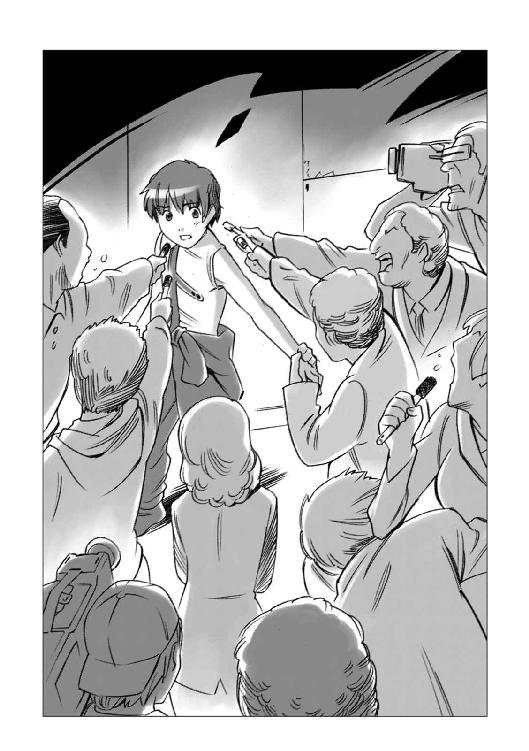

| 銀星みつあみ航海記 ＬＯＧ．０１ 彼女が家出した動機 (角川スニーカー文庫) | |
| 鷹見 一幸 | |
| (2015) | |
銀星みつあみ航海記
LOG.01 彼女が家出した動機
鷹見一幸

角川スニーカー文庫
本作品の全部または一部を無断で複製、転載、配信、送信したり、ホームページ上に転載することを禁止します。また、本作品の内容を無断で改変、改ざん等を行うことも禁止します。
本作品購入時にご承諾いただいた規約により、有償・無償にかかわらず本作品を第三者に譲渡することはできません。
本作品を示すサムネイルなどのイメージ画像は、再ダウンロード時に予告なく変更される場合があります。
本作品は縦書きでレイアウトされています。
また、ご覧になるリーディングシステムにより、表示の差が認められることがあります。
人類の歴史に、大航海時代と呼ばれる時代があった。
それは、人々の多くが、まだ自分の脚と家畜の脚によって移動できる陸地の狭い範囲だけを世界だと信じていた頃に、海の向こうにさらなる広い世界があることを信じた船乗りたちが、それを証明するために次々に大海原に乗り出した時代である。
彼らによって新大陸が発見されたとき、人々の多くは、惑星という世界が、自分たちが考えていたものよりもはるかに広いことを知った。
だが、その新世界が旧世界となり果て、人々の多くが、惑星という世界は実に小さいものであると思うようになるのに数世紀もかからなかった。
人類の次なる新世界は、何光年という宇宙のかなたにある他の恒星系にあった。
しかし、この宇宙の海原を越える船を造り出すまでの数千年の間、人類はその新世界を肉眼と望遠鏡によって見ることしかできなかったのである。
人類が、星々の間に横たわる何百光年という想像の域を超えた距離を飛び越える跳空間航法技術を確立したとき、その鬱屈した想いは、新しい大航海時代となって爆発した。
未知なる世界と未知なる生物に出会った人類は熱狂し、その熱狂と興奮が、人類をさらなる銀河の深遠へと駆り立て、人類の生存圏は拡大し続けた。
そして、跳空間航法を確立して数千年が過ぎた。
この時代。宇宙はもはや人々にとって未知の世界でも心躍る新世界ではなかった。そこは、生活も商売も、そして戦争さえも行われるごく普通の空間。つまり旧世界となっていた。
かつて惑星上の大陸が、大国といくつもの国家によって分断されて統治されていたように、この宇宙もマガザン帝国と神聖ローデス連合という二つの大国と、そしてその周辺の惑星規模の小国家によって統治されていた。
国民と国土を領主である貴族を通じて一人の皇帝が統べる絶対君主制の帝国と、ローデス教という排他的な宗教によって神の名の下に国民とその資産を教会を通じて法王が統べるローデスは、国家の構造から見れば実によく似ていた。
そして、似通っていたがゆえに、この二つの国家は互いを相容れない敵として認識し、激しく衝突したのである。
帝国が支配する銀河と、ローデスが支配する銀河は、古い銀河の残滓である高重力を持つ白色矮星の帯によって隔てられていた。
跳空間航法によって乗り越えることができないこの帯は、広く銀河障壁と呼ばれていたが、この帯の中には、重力波の影響を受けない空間も存在していた。恒星の光を受けた星間物質のガスがピンク色に広がるこの空間は、その色から俗に桃星回廊と呼ばれ、帝国とローデスを繫ぐ唯一の通路でもあった。
帝国とローデスはこの桃星回廊の支配権を争い、激しい武力衝突と、そしてその損害を回復するための便宜的休戦を十数年おきに繰り返すという戦いを数百年にわたって続けてきた。
最後の武力衝突は、最終的に互いの領土にある惑星を地殻破壊弾で消滅させ、双方で数百億の人命を失うというところまでエスカレートする大規模なものだった。
このまま戦争を継続し拡大させれば、国家そのものの崩壊を招く。それを危惧した帝国とローデスの首脳は停戦協定を結び、五年にわたる戦争は、やっと終わりを告げた。
人々の間には平和を嬉び、そしてそれを楽しもうとする空気が満ちあふれていた。
この停戦によって訪れた平和は、帝国とローデスとの間に続く長い戦いに終止符を打つものではなく、単なる短いインターバルでしかないことを誰もが知っていた。
だが、それゆえに人々は、久々に差し込んだ春の光のような、この平和を楽しもうとしていた。
そう......光の中を歩むことができるのは、光のあるときだけなのだ。
その小さな汎用のパーソナルモニターのなかには、インタビュアーにもみくちゃにされる二人の若者が映っていた。
若い女性レポーターが、前を歩く一見すると高校生くらいにしか見えない黒髪の男に、声を掛けた。
『ハヤト・フォーゲルスト・ナグモ少尉！ 無罪おめでとうございます！ 宝くじで手に入れた二十二億クレジットという大金を何にお使いになるつもりですか？』
名前を呼ばれた黒髪の若者が驚いたような顔で振り向いたところに、すかさずセンサーマイクが突きつけられた。
ハヤトと呼ばれた黒髪の若者は、根が真面目なのだろう、戸惑いの表情を浮かべて答えようとした。
『えーと、損害賠償とか弁護士さんにお金を使ったから今はもう二十二億じゃなくて......』
相手からコメントが取れそうだ、ということがわかったとたん、その場にいたレポーターの間に殺気にも似た空気が流れたのがわかった。
次の瞬間、ハヤトの方にレポーターが殺到した。
『あなたがたは、先日停戦となった先のローデスとの戦争で、全滅した一○九戦闘隊の生き残りというのは本当ですか？』
『え？ あ、そうですけど......全滅ってわけでは......』
その答えを言い終わる前に他のレポーターがセンサーマイクを突き出した。

『銀星勲章を五つももらっているって本当ですか？』
『あ、いえ、四つだけです......』
また、別のレポーターがマイクを突きつけた。
『あれだけの騒ぎを引き起こしておいて、今回無罪になったのは、その勲章のおかげだという話もありますが、どうお考えですか？』
ハヤトが、少しむっとしたような表情で答えた。
『そうかもしれません、でも......』
そのとき、自分たちは正義だと信じ込んでいるような顔つきのレポーターが、後ろからハヤトの肩に手を掛けて、ぐい、と引き戻すようにして聞いた。
『例の宝くじは、一○九戦闘隊にいた頃に買ったものだそうですが、その当籤金を自分たちだけが独り占めにすることに罪悪感は無いんですか？ 死んでいった仲間はどうでもいいんですか？』
ハヤトの顔に一瞬、怒りの色が浮かんだ。
それを見たレポーターどもが、思わず唇の端に、してやったりという薄笑いを浮かべたそのとき。
『いやあ、どうもどうも、すみませんねえ、ちょっと急いでいますので失礼しますよー。はい、失礼しまーす......』
よく通る声で、早口にまくし立てながら、ハヤトの後ろにいた、モニターグラスをかけた二十代前半の金髪の男がやってきて、ハヤトの肩を抱くようにして引き寄せた。
『え？ あ、おい、ハインツ！ なんだよ！』
『いいからいいから、マスコミの皆様のお相手は俺の役目だ。お前は先に車に乗ってろ！』
そう言うと、ハインツと呼ばれた金髪の男は、黒髪の男を引きずるようにして、目の前に停まっていた黒塗りの高級地上車の後部座席に押し込んだ。
そしてハヤトに群がるマスコミのレポーターから守るように立ちふさがり、ドアを盾のように立てて微笑んだ。
『えー、当籤金の使い途については、後日、しかるべき機関と相談し、この帝国のさらなる発展に向けて建設的な用途を選択し、有意義に使わせていただきますので御安心を。具体的な話はまた後で弁護士を通じて発表させていただきますので......』
にこにこと顔は笑っているものの目が笑っていない微笑みを振り撒くハインツの顔のアップ映像がフェイドアウトすると、画面の中にニューススタジオに立つ金髪の美人キャスターの映像がオーバーラップした。
『......およそ二ヶ月前に、宝くじで二十二億クレジットという大金を引き当て、その当籤金をめぐって、惑星エンデバーを大騒ぎに巻き込んだ、ウワサのラッキーボーイこと、ハヤト・フォーゲルスト・ナグモとハインツ・クノール・キャンベルの二人組は、皆さんの記憶にも新しいことと思いますが、その巨額の当籤金の使い途が判明しました......』
ニュース映像らしい画面に映ったのは、旧式の中型コンテナ貨物船だった。ただ、その船はなぜかピンク色に見えた。
金髪の美人キャスターは、横に座っている、中年の男に振り向いた。
『......これが、ラッキーボーイたちが購入した中古の再生貨物船、銀星号です。なんと、これを使って彼らは運送業を始めるそうですよ！ 論説委員のクロンカイトさん、この船をどう見ますか？』
クロンカイトと呼ばれた堅物そうな雰囲気を漂わせた中年男は、大真面目な表情で答えた。
『突然転がり込んだ大金を使って遊んで暮らすことを選ばなかったことは、いまどきの若者にしては見上げた心がけです。しかし、しょせんは世間知らずの若者の浅はかさと言わざるをえませんね』
『そうなんですか？』
『ええ、この船は、一見まともな船に見えますが、こちらで調べたところ、なんと百二十隻以上の船の部品を組み合わせて造り上げた、とんでもない船であることが判明しました』
金髪の美人ニュースキャスターは、わざとらしく驚いて見せた。
『百二十隻以上ですか！ それはもう、寄せ集めなんてものじゃありませんね！』
『ええ、この二人は、この船を客船として登録し、旅客運送業務を始めましたが、このような危険な船を奇抜な塗装でごまかすという手口から見ても、とても信用の置けるものではありません。格安料金を謳い文句にしているようですが、やはり荷物を運ぶのは正規の運送業組合に登録した業者を使うべきでしょう。このような業者を利用すれば、いわば彼等と同じような信用の置けない企業や商店の人間であることを天下に示すようなものですね。繰り返しますが、荷物を運ぶなら正規の組合業者に限ります......』
画面の中でクロンカイトという名前の論説委員が、もっともらしくうなずいたとき、モニターの向こうから、さっきネットニュースの画面の中でレポーターにもみくちゃにされていた黒髪の若者と同じ顔が、ひょい、と現れて言った。
「リアン、さっきから、何を熱心に見ているんだ？」
「きゃっ！」
茶色いスーツ風のキャビンアテンダントの制服を着て、赤毛をみつあみにした、小柄な女の子が、モニターから顔を上げて、ぴょこんと飛び上がった。
そこは食堂だろうか？ ちょっとした広さの部屋の中には、四人分の椅子が配置されたテーブルが四つほど並び、片方の壁面には小さなカウンターとソファが置かれたラウンジがある。
天井はそう高くないが、明るいアイボリーの色調でまとめられた床と天井が、清潔感を感じさせている。
リアン、と呼ばれた女の子は、手の中にあるリモートのスイッチを操作して、モニターの映像を待ち受け画面に切り替えながら、怒ったように言った。
「あ、ハヤトさん......いえ、その、ちょっと興味があって、『銀星号』で検索してみたら、少し昔のニュース映像が出てきたんで、観ていたんですけど......なんか、勝手なことばかり言ってるんですよ！」
ハヤトと呼ばれた、まだ少年の面影を残す黒髪の若者は、眉をひそめた。
「ああ、俺たちが宝くじを当てて、その当籤金を取りに行くときにエンデバーの街で大騒ぎを起こしてとっ捕まって裁判受けて......なんてことを、面白おかしくとりあげたワイドショー番組か何かなんだろう？ ああいうときは、相手にしないで適当にあしらっておけってハインツに怒られたっけ......」
リアンは不満げに唇を尖らせてうなずいた。
「ええ、夜にやっているネットステーション、とかいうニュースショーでした。なんかもったいぶった顔したオジサンが、運送業を始めたハヤト船長たちのことを、世間知らずの浅はかな若者だってバカにしてましたよ」
「まあ、そう言われても仕方ないかもしれないぜ。だって俺たちはまだ子供って言われても仕方ない歳だしさ、キャリアも信用もなんにも無いだろ？」
「......でも！」
何かを言いたそうな顔をするリアンに向って、ハヤトは笑って見せた。
「うん、わかってる。だからこそ俺たちのこれからが大切なんだよ」
リアンは不安そうな顔になった。
「でも、この番組に出ていたオジサンは、この銀星号は寄せ集めの再生品で危険極まりない船だから信用できない、ちゃんと組合に入っている業者の船を利用した方がいい、とかなんとかえらそーな顔で言ってましたけど......」
「エンデバー運送業組合の連中め、ネガティヴキャンペーンを始めやがったか......」
顔をしかめたハヤトを見て、リアンが不思議そうな顔をした。
「ネガティヴキャンペーン？ なんで組合が？ 向こうは大手業者さんばっかりで、別にうちが営業妨害しているわけでもないのに......」
「エンデバー星系の運送業組合ってのは、全部の業者が同じようにバカ高い運賃を設定して、みんなでボロ儲けしようって連中の集まりだからな。俺たちのような運賃を安くするフリーの業者は許せないってことさ。
まあでも、無事に初仕事には出発できたから、もう大丈夫！ やつらの汚い手は宇宙に出た俺たちには届かないからね。俺たちはこれからひとつずつ実績を積んで、信用を勝ち取っていけばいい。今は、客室に乗っているタウンゼントさん一家と、積んでいる荷物をちゃんと届けることだけを考えよう......頼むぜ、リアン！ 君も新米だけど、がんばってくれよな」
「はい！ ハヤト船長！」
にっこり笑ったリアンにうなずいて見せたあとでハヤトは聞いた。
「ところで......その、タウンゼントさんの様子はどう？」
リアンは真面目な顔で答えた。
「はい、タウンゼントさんはそうでもありませんが、奥さんは最初ずいぶん不安そうだったみたいです。何しろ、よーく見ると船室の壁とか通路の床とか全部つぎはぎですもんね......でも、今はすっかり安心しているし、二人の娘さんもお元気ですよ。ずっと娘さんのお相手していたから、もうすっかり仲良しになりました」
「この銀星号は百二十隻分の船の部品を寄せ集めて造ってあるってのはまぎれもない事実だけど、こいつはただの再生船じゃない！ 俺が保証する！
......でも、結局のところお客さんにそれを信用させるのは、アテンダントの能力なんだと思うな。リアンを雇って良かったと思うぜ」
嬉しそうに白い歯を見せて笑うハヤトを見て、リアンはあわてて首を振った。
「とんでもないです！......えっと、それより、ハインツさんは？」
ハヤトは後ろにあるドアを振り返って答えた。
「ああ、ブリッジの当直は、あいつと俺の二人で交代でやることにしたんだ。本当ならタンホイザーゲートから亜空間に入ったあとは、船舶管理用の電子人格に任せちまっていいんだけど、なんせ最初の営業航海だから、一人はブリッジに詰めていたほうがいいだろうってことでね、俺はちょいと、ここに息抜きに来たんだ」
「あ、申し訳ありません！ 今、お茶を淹れますね！」
はっとしたように目を見開いて、あわてて立ち上がったリアンを見て、ハヤトは首を振った。
「いや、いいよ、それより、何か食べるもの無いかな？ ちょっとおなかがすいちゃった」
「じゃあ、サンドイッチか何か作ります！ ちょっと待っててください！」
リアンはそう言うとギャレーに飛び込んで、自動調理器の食材リストを確認し始めた。
「えーと、ツナ、ハム、タマゴ、コンビーフ......何がいいですか？」
「あ、コンビーフサンドがいいな」
「はい！ 今、お作りします！」
ギャレーの中で、てきぱきと働きはじめたリアンを眺めながら、ハヤトは思った。
......運送業組合のいろんな妨害をくぐり抜けて、なんとか初営業航海にこぎつけた。無事にタンホイザーゲートも通り抜けて、亜空間航行も順調だ。
でも、気を抜くわけにはいかない。目的地のリムルダール星系に着いて、通常空間に出てからが、俺の腕の見せ所だ。
......不安はある。無いと言ったら噓だ。俺は軍の機動戦闘艇の操縦は誰にも負けない自信があるけれど、こんな大きな貨物船を操縦した経験はあまりないもんな。
それに、機動戦闘艇に乗っていたときに背負うのは、自分とナビゲーターのハインツの生命だけだった。こんな風に、他人の生命と財産を預かったことはない。
そう考えると、心臓がどきどきしてくる。
でも、なぜだろう。俺の心の中にそれを楽しんでいる俺がいるような気がする。
不安だけれど、その不安を楽しみにしている俺がいる。やってやるぜ！ って叫んでいる俺がいる。
そうだよな、負けちゃダメだ。向い風のときにこそ胸を張った方が勝ちなんだ。
ハヤトは、自分自身に気合を入れるように深呼吸した。
銀星号が出発地のエンデバー星系を発って二日が過ぎた。
跳空間航法は、タンホイザーゲートと呼ばれる空間歪曲装置により、通常空間に裂け目を作り、そこから高次元に存在する亜空間に入り、通常空間に存在する広大な宇宙空間を飛び越えるという航法である。
恒星系内は、大きな質量を持つ惑星が軌道を描いて動き回るために、常に重力波が変動している。そしてタンホイザーゲートは、重力波の干渉を受けやすいシステムである。
この惑星の重力の影響を受けないためには、ゲートを備えたステーション全体を強力な力場で包み込むしかない。
こうすれば恒星系内のどこにでも......惑星の衛星軌道上でもジャンプステーションを設置できる。しかし、それをやるには膨大な維持費がかかる。
その莫大な維持費を投資しても元が取れる、人口の多い発展した主要惑星ならいざしらず、発展途上の地方惑星では、とてもそんな金のかかることはできない。
従って、地方星系では、惑星の重力波の影響の少ない恒星系の最も外側にジャンプステーションを設置し運営する方法をとっていた。
恒星間航行をする宇宙船は、恒星系の外れにあるタンホイザーゲートから出た後、恒星系内の通常空間を航行して目的地の惑星の衛星軌道にある宇宙港に向うのである。
リムルダール星系のジャンプステーションにあるタンホイザーゲートに張られた薄紫色の力場スクリーンの中央に白い中立空間が開き、一隻の宇宙船がゆっくりと姿を現し始めた。
『ゲートコード三六三三、エンデバー星系からの個人チャーター臨時便、到着しました。転換質量カウンターマス投射します』
『中立フィールド指数変動は許容範囲内、維持継続中』
タンホイザーゲートを管理するコントロールルームに、管制用電子人格の冷静な報告が流れていた。
「船籍番号ＳＧ七八三六ＴＲＣ四五五、銀星運輸所属の銀星号。予定通りゲート通過確認」
目の前にあるパーソナルモニターの表示を読み上げた若い管制官の一人が、つぶやくようにつけたした。
「個人チャーターの臨時便、なんて言葉を聞くと、ああ、戦争は終ったんだって実感できますよね......」
その管制官から少し離れた席に座っていた三十代の上司らしい管制官が、小さくうなずいた。
「ああ、戦争中は軍事優先で統制されていた物流も、戦争が終るのと同時に自由化されたからな。これからは、ああいった個人チャーター便が増えてくるだろう。俺たちの仕事も忙しくなるぞ」
「ええ、毎日毎日軍需物資護衛の憲兵隊の顔を見なくて済む、と思うと、ほっとしますね」
嬉しそうに顔を輝かせてうなずいた若い管制官は、コントロールルームの窓から見える光景を見て目を見開いた後で、うろんな顔になって、離れた席に座っている上司に聞いた。
「主任......あの船......ピンク色に見えませんか？」
「え？ ああ、あれはあれでいいんだ。ピンク色をしている船なんだ」
「なんでまたあんな色に......」
主任は、笑いながら答えた。
「ほら、一月ぐらい前に、星間ネットニュースとかで騒がれていたラッキーボーイってのがいただろう？ 宝くじで二十二億クレジ当てた二人組の若僧が」
「ああ、そういえばそんな連中がいたなあ。あの後ニュースにも流れなくなったけど、なんでもウワサじゃあ古い輸送船買って、運送業を始めたとかなんとか......」
若い管制官は、はっとしたように窓の外の宇宙船を見た。
「......あの船がそうなんですか？」
「ああ、そうさ、あれが、その宝くじで当てた金で買った船らしい。ピンクに塗った理由はよくわからんが、きっと宣伝のためじゃないかな？ 新しい会社は、とにかく人目を引いて名前を覚えてもらうのが第一だからな」
主任は窓の外に浮かぶピンク色の宇宙船に視線を移し、通信端末を開いて、呼びかけた。
「こちらリムルダールジャンプステーションコントロール。タンホイザーゲート上の銀星号、異状なければそのまま直進し、力場エリアから出てください」
銀星号のブリッジで銀星号のコントロールレバーを握っていたハヤトは、即座に通信モニターに応答した。
「こちら、銀星号船長、ハヤト・フォーゲルスト・ナグモです。船内システム及び推進システムに異状はありません。指定航行速度で力場エリアより離れます」
『ジャンプステーションコントロール了解。銀星号の目的地は第三惑星アクアスの宇宙港でよろしいか？』
「はい、そうです。乗客四名とコンテナ二十四個を搭載しています」
緊張した顔つきで返答するハヤトの姿に真剣さを感じ取ったのだろう、ジャンプステーションの主任は、微笑んで見せた。
『このリムルダール星系は、第四惑星軌道の内側までは航路に規制がありません。自由航行で目的地に向って構わない。第四惑星軌道に近づいたら、アクアス宇宙港のコントロールを呼び出してその指示に従ってください』
「了解しました！」
ハヤトは通信スクリーンに向って、びしっと音がするような敬礼をした。
あわてて敬礼を返した主任は、もう一度微笑んだ。
『目的地まであと少しです。どうかご無事で』
「ありがとうございます」
ハヤトは、人懐っこそうな微笑を浮かべて小さく一礼した。
ジャンプステーションの空域内を示す航路標識を抜けたところで、銀星号はＮフィールド推進の出力を上げた。
『アクアス宇宙港への航路に入るまであと五時間三十分です』
「了解......」
『質量クリアランス、加速度クリアランス、オールグリーン！』
「確認しているよ......」
『本船は航路エリアキャパシティ許容範囲内を維持しています』
「ああ、そうだね......」
『目的地到着時刻は予定時間プラスマイナス三十分以内です』
「こっちでも見ているよっ！」
『積荷状態オールグリーン。契約上の瑕疵、損害賠償が発生するおそれは今のところありません』
「はいはい！」
銀星号のブリッジの中央にある三次元立体モニターの中に無表情に立つホログラムの女性がほぼ三分おきに告げるメッセージにあいづちを返しながら、推進器のピクトレバーを握って船の針路を微調整していたハヤトは、ぼやくように言った。
「あーもう！ メッセージはありがたいけど、何度も何度も同じことを言われると、口うるさい母親とか年上の姉さんに小言を言われているような気分になってきたぞ！」
ハヤトの隣に座った、ハヤトより少し年上の雰囲気をもつ金髪の若い男が、なだめるように答えた。
「まあ、そうぼやくなよハヤト。お前は船長だけど、この船のメインパイロットでもある。船舶管理用の電子人格は、乗り込んだパイロットの経験値に応じてアドバイスするように作られているのさ。お前の操縦経験時間のほとんどは軍用の機動戦闘艇で身につけたもので、この船の操縦経験じゃない。技量判定用のデータ蓄積が終れば、ベテランとして扱ってくれるだろうけど、まあ、当分は見習い扱いされるだろうな」
ハヤトは、不満げに唇を尖らせた。
「この船の操縦時間が、めちゃくちゃ短いのは当然だろ、なんせこれが初めての営業航海なんだからな......でもよ、俺はまるっきりのシロウトじゃないんだぜ。帝国軍機動戦闘艇パイロットでも数少ない技量甲、それも特一！ 士官学校の教官だってほとんど持ってない資格を持ってるんだぞっ！」
航法士席に座った金髪の若者は、サングラスのような形をしたインターフェイスシェードのコントローラーを操作し、レンズスクリーンを下ろして、ハヤトに笑いかけた。
「電子人格に、いらん世話を焼かれて、お前のプライドが傷ついているのはわかるが、まあ辛抱しろ。船舶管理用電子人格ってのは、まず船の安全な運航を第一に考えるように作られているんでね。お前のメンタルケアとかは、悪いが二の次なんだ。それに俺とお前の二人しか乗組員がいないこの船をコントロールしているのは実質的にあのお姉さんなんだから、大切にしようぜ。美人でラッキーじゃないか。中年のむさいオッサンに小言を言われるよりはマシだろ？」
ハヤトは自分が座っているシートの周りを見回した。
「まあ、確かにお前の言うとおり、この銀星号を動かすには五人以上の人間が必要だってことは、このシートの配置を見るだけでわかるよな。本来なら俺が座っているパイロットシートの隣は副操縦士席で、後に航法士席、その後が船長席。右に機関士席で左が通信士席だもんな」
「二人乗りにするために、航法士席にあった機器を、この副操縦士席に移して、俺とお前の二人で動かせるように改造したわけだけど......」
ハインツは自分のシートの後にある一段高くなった場所にある空席を見て付け足した。
「あそこが本来の船長席なんだぜ。一応あそこにも操縦装置をつけることもできるぞ。お前、あっちに座るか？ あそこに座れば電子人格も船長として扱ってくれるかもしれないぞ」
ハヤトはあわてて首を振った。
「いや、嫌だ。俺はここでいい」
「なんでだよ？」
「なんというか......ずっと機動戦闘艇に乗っていたせいかもしれないけど、ナビゲーターは隣にいてほしいんだよ......」
恥ずかしそうに言ったハヤトの表情を見て、ハインツはにやっと笑った。
「じゃあ、管理用電子人格のクララに、ちょっとお姉さんっぽい口調で世話焼きアドバイスされても文句言うな。お前は新米パイロットなんだから」
ハヤトはふくれっ面になって言い返した。
「あのクララっていう電子人格は、本当にＨＱレベルなのか？ ずいぶんと抑揚の無い無愛想な口調で話すじゃないか」
ハインツは声をひそめて答えた。
「実を言うと......あのクララって電子人格の基本律がどうなっているのか俺にもわからないんだ。わかってるのはＨＱレベルってことだけなんだ」
ハヤトの顔に浮かんでいた不満そうな表情が、不審そうなそれへと微妙に変わった。
「それって......どういう意味だ？」
「いやね、この船の管理領域に搭載されているサイコサーバーを調べたら、なんとそこには電子人格がインストールされてなかったんだ。どうやらこの船のどこかに別のサーバーがあって、このクララは、そこにインストールされているみたいなんだよ......銀星号は、戦争中に沈んだ同型艦の部品をかき集めて造られた再生船だからなあ、まあ色々わけありなんだろう」
「船のどこかって......どこだよ？ ずいぶんいい加減な話だな、点検とか修理とかどうすんだ？ システム管理はお前の仕事じゃなかったのかよ？」
ハヤトがそう言ったとき、電子人格のクララが大人っぽい女性の声で、たしなめるように言った。
『まもなく航路管制エリアに入ります。航路内のエリアは、作業艇などが直前横断することもあります。パイロットは操縦に集中してください』
むっとしたようにスクリーンを睨んだハヤトを見て、ハインツが笑いながら言った。
「ほら、正体はわかんなくても、とりあえずちゃんと動いているだろう？」
「ああ、確かに船舶管理用電子人格としては間違いなく動いているみたいだな......このお姉さんの小言風の言い方だけは、どうにも気に食わねえけど」
「パイロットが男性の場合は女性の声のインターフェイスを使った方がいいんだぞ。男性の本能は無意識に女性を守ろうとする。だから無茶をしなくなるし、冷静に判断できるんだ......」
ハインツはそこで言葉を切ると、ハヤトの顔を見て、笑った。
「女性の声に反感を覚えるってことは、お前はまだ一人前の男になってないってことじゃないのか？」
「ああ、俺は子供だよ、悪かったな！」
ハヤトが拗ねたように答えたとき、すました声でクララが言った。
『まもなく第四惑星軌道上に入ります。エンデバー星系で受領したフライトプランデータを起動します』
自分の前にあるモニターでデータを確認したハインツがクララに向って言った。
「データ確認。以後はこのデータに従って宇宙港までの航路を進んでくれ」
『了解しました』
目的地の宇宙港まで五時間を切ったことを確認したハヤトは、通信を船内に切り替えて、呼び出しスイッチを押した。
一呼吸ほどの時間が過ぎた後、モニターにリアンが映った。
「お客さんの様子はどうだい？ リアン」
リアンはにっこり笑って首を振った。
『大丈夫です！ 奥さんは以前、旅行したとき、通常空間に移行する時の慣性減速で、気分が悪くなったことがあったとかで心配していたけど、なんとも無くて喜んでましたよ。お子さんたちも元気です』
リアンの言葉を裏付けるように、小さな女の子がはしゃぐ声が混じって聞こえてきた。
「そうか、そりゃあ良かった......あと五時間少々で目的地に到着するからって、声をかけておいてくれ」
そう言ってハヤトが笑ったとき、横から通信画面を覗きこんだハインツが、リアンに声をかけた。
「ちゃんと髪の毛をみつあみにしているな、よしよし」
リアンは、あわてて右手をモニターにかざして、手首にはめた銀色のブレスレットを示した。
『ちゃんとみつあみにしているし、心理抑制のブレスレットも着けています！ ほら！ もう！ 大丈夫ですよ、ハインツさん』
ハインツは、当然だ、と言わんばかりの表情でうなずいた。
「いつも、それくらいしっかり抑制かけておけ。これ以上ハッチの手すりをもぎ取ったり、船室の収納テーブルをひん曲げたりしたら、給料から、さっぴくぞ」
ハヤトは、通信スクリーンの中で困ったような顔をして黙り込んだリアンに向って、なだめるように言った。
「まあ、物を壊さないように気をつけてくれればいいから......俺からの連絡は以上だよ」
『了解しました、船長』
リアンは、少し悲しそうな顔でうなずいてから、通信を切った。
通信モニターから顔を上げたハヤトは、隣に座っているハインツに向き直った。
「あんまりキツイことを言うなよ。彼女だって一生懸命やってるじゃないか。高重力惑星出身なんだから、少し常人より力が強いのは仕方ないだろ？」
「少しならいいけど、彼女の場合は時々常識外れの力を出すときがあるから困るんだ。三日前もメインシャフトの通路の手すりをだな......」
ハインツが、話を続けようとしたとき、正面のメインモニターに映る宇宙空間に、航路を示す青いラインが投影され、クララの取りすました声がした。
『申し訳ありません。お話の途中ですが、第四惑星軌道内に入りました。ここから先は管制区域内となります。他の船舶の航行も増えてきますので、ナビゲーターの方は管制情報に集中してください』
「......わかった、管制情報に集中するよ」
話の腰を折られ、仏頂面になったハインツを見て、ハヤトは、にやっと笑って言った。
「一人前の男は、女の人に反感を持たないんだよな？」
「......いいから、お前も操艦に集中しろ！」
「へいへい」
ハヤトのにやにや笑いはしばらく消えなかった。
第四惑星軌道内に入ってしばらくしたとき、ハヤトは、前方を航行している宇宙船が、大きく針路を変えたことに気がついた。
......あれ？ 何か障害物でもあるのかな？
しかしハヤトの前のモニターに表示されているフライトプランデータには、それらしい表示は出ていなかった。
......おかしいな。何か障害があれば、ここに表示が出るはずだ。俺たちの前に航行している船と俺たちがもらっているデータは同じものなんだから。
「おい、ハインツ、この先に何か障害が発生してるか？」
ハヤトと同じように、何かに気がついたのだろう、ハインツは、真剣な顔になってロングレンジセンサーを操作しながら答えた。
「今、調べている......おい、クララ。受領したデータを再精査しろ！ 何かおかしいところは無いか？」
『異常は見当たりません』
クララが、表情も変えずにあっさり答えた......そのとき。ロングレンジセンサーが鋭い警告音を発した。
「不定軌道小惑星群！」
ハインツが叫ぶのとハヤトがフットバーを蹴飛ばしてピクトレバーをぐい、と引いたのはほぼ同時だった。
それは機動戦闘艇のパイロットとして熾烈な戦場を生き延びたハヤトのカンが為せる業だった。
銀星号の船内に推進機が急反応する振動と船体構造材がねじれる軋み音、そして急加減速警報のブザー音が響き渡った次の瞬間。
船体を大きく振り回すようにして針路を変えた銀星号のブリッジの脇を、家一軒分ほどもある小惑星が、いくつもかすめて通り過ぎた。
その距離わずか数メートル。
もし、これが大気圏ならば、銀星号は轟音と風圧と衝撃波に包まれただろう。しかし、宇宙空間に空気は存在しない。音も振動も風圧も残さずに、小惑星の群れは銀星号の側面を想像もつかぬ相対速度で無表情に飛び去っていった。
銀星号の船内に影響を与えたのは、小惑星ではなく、回避運動による船内の慣性と重力の変化だった。
ちょうどその頃、ブリッジ後方の船室では、リアンが乗客のタウンゼント氏の二人の娘のゲームの相手をしていた。
船体が大きく傾き、身体が振り回され、重力コントロール装置が過負荷を起こした時に感じる、ぐらっとした感触がリアンを襲った。
「きゃあああ！」
「なになに？ どうしたの？」
ソファに座ってくつろいでいたタウンゼント氏とその妻は、ソファに内蔵された重力サポート機能で放り出されずに済んだ。が、床に座ってボードゲームをやっていた二人の小さな女の子の身体は、そのまま空中にふわっと放り出されたのだ。
悲鳴を上げて手足をばたばたさせている二人を見たリアンは、瞬時にジャンプして両手を伸ばし、二人を両腕に抱きかかえた。
次の瞬間、重力コントロール装置が回復するのと同時に、激しい遠心力がリアンたちを襲った。
一瞬の無重力で宙に浮かんだ品物や調度品は、そのまま加速度をつけて、床に叩きつけられることになった。
ギャレーの方から、固定していなかった調度品などがひっくり返る、どんがらがっちゃんというけたたましい音が響いてくる中で、二人の子供を抱えたまま、大きく足を踏ん張ったリアンの足が、だん！ という激しい衝撃音とともに床に着地した。
「大丈夫か！」
ソファから立ち上がって駆け寄ってきたタウンゼント氏に、リアンは微笑んでみせた。
「お嬢さんたちは......大丈夫......です」
床に降ろされた二人の少女が、震えて泣きじゃくりながら父親に抱きついたとき、リアンの胸ポケットに入れてあった船内通信端末からハヤトの声がした。
『お客さまは無事か！』
「ええ、何とか無事です！ でも......何があったんですか？」
『航路データに無い小惑星との交差軌道があったんで、急機動でそいつを避けなくちゃならなかったんだ！ 今ハインツが確認しているけど......タウンゼント氏に、お手数だけどブリッジまで来てくれるように伝えてくれ！ 説明したいことがあるんだ』
「わかりました！」
そう答えると、リアンはゆっくりと踏ん張っていた足を動かした。
床のカーペットには、リアンの靴がめり込んだ跡がくっきりとついていた。
ブリッジのドアの所にあるインカムが、リアンの声を伝えてきた。
『タウンゼントさんをお連れしました』
ハインツとハヤトは、互いに顔を見合わせてうなずくと、シートベルトを外して立ち上がりながらインカムに向って言った。
「ロックはしていない、そのままブリッジの中にお通ししてくれ」
『わかりました』
やがて、リアンが四十代半ばの、品の良い雰囲気を持つ男を供ってブリッジに入ってきた。
その男に向ってハヤトとハインツはそろって一礼した。
「まことに申し訳ありませんでした！」
タウンゼント氏は厳しい表情を崩さずにゆっくりと言った。
「ずいぶん乱暴な操縦だったが......それを謝るためだけに私を呼び出したわけではないのかな？」
ハインツは小さくうなずいて、メインスクリーンに映し出された航路データを指差した。
「はい、これはお知らせしておいた方がいいと思いましたので......これは、出発地のエンデバー星系の運輸局から受領した、リムルダール星系のフライトプランデータです。詳しいことはおわかりにならないと思いますが、これに、実際に運用されているこのリムルダール星系のデータを重ねてみて下さい」
画面の右半分に同じようなデータが表示されたが、それには、いくつか赤や黄色で表示された明らかに警告と思われる部分が増えていた。
「これは？」
怪訝な顔をするタウンゼント氏を見て、ハヤトが厳しい表情で言った。
「出発地のエンデバー星系で受領したデータには、航路内の障害についてのデータが意図的に欠落していたんです。これは間違いなく、エンデバー星系の当局による妨害です！」
タウンゼント氏は目を見開いた。
「妨害だと？ つまりこれは、自分たちの一族で固めた運送業組合の加盟業者を使わなかったことに対する報復だということか！」
ハヤトはうなずいた。
「はい......ギリギリのところでなんとか回避しましたけど、一歩間違えば大変なことになっていたと思います。乱暴な操縦をしてしまってすみません。何を言っても言い訳になっちゃうかもしれませんけど。その理由だけは知ってもらおうと思ったんです......本当に申し訳ありませんでした！」
二人並んで頭を下げるハインツとハヤトを見て、タウンゼント氏はあわてて首を振った。
「あ、いや、頭を下げるには及ばんよ。君たちには責任は無い。それどころか君たちはその危険をちゃんと回避してみせたではないか！ 責める気は毛頭無い！ 頭を上げてくれ！」
ゆっくりと頭を上げたハヤトとハインツを見て、タウンゼント氏は言葉を続けた。
「私は君たちを信頼している。その信頼は揺るがぬものとなった。どうか無事に私たちの家族と私の荷物を目的地であるアクアスまで届けてほしい」
ハヤトとハインツはほっとしたように顔を見合わせたあとで、タウンゼント氏を見て同時にうなずいた。
「はい！ 全力を尽くします！」
やがて、銀星号の前方に青く光る星が見えてきた。
「リムルダール星系第三惑星アクアスを目視で確認！ Ｎフィールドを減速運転に切り替える！」
「Ｎフィールド発生装置出力上昇。慣性軽減中。航路内指定速度まで減速！」
ハインツとハヤトの二人が、決められた手順に従って銀星号を指定速度まで減速させると、ハヤトの前にあるモニター上に、水先案内人を示す白いＷＰという文字が浮かび上がった。
『水先案内プログラムを起動しました。これより本船はアクアス宇宙港管制システムの管理下に入ります』
クララの報告を聞いたハヤトは大きく息を吐いた。
「ふう、減速終了っと......」
「気を緩めるなよ、宇宙に出たからって安心はできないんだぞ」
戒めるような口調で釘を刺したハインツを見て、ハヤトは真剣な目でうなずいた。
「わかってるよ、安全第一だ！ 宇宙港の接岸のときも、グラスの中の水が、さざなみすら立てないくらいのソフトな接岸をやってみせる！」
銀星号が惑星アクアスの衛星軌道にある宇宙港の接岸メインジョイントに接合すると、待機していた作業員たちが銀星号の船首ハッチを開けて、動力パイプや大気ダクトなどの接合作業を始めた。
ハヤトが、両手を推進機のピクトレバーから下ろして大きくため息をつくのを見て、隣にいたハインツが、感心したようにつぶやいた。
「接岸作業ごくろうさん......接続誤差二センチってのはさすがだな。機体が変わっても腕は変わんないな」
ハヤトは、目の前にいるハインツの後ろの方を見て言った。
「あったりまえだ！ 帝国軍軌道戦闘艇部隊、技量甲の腕をナメんな！」
「誰に向って言ってるんだ？」
「電子人格のお姉ちゃんさ。いいかげん俺の腕を認識しやがれって言いたかったんだ......さて、乗客にご挨拶しないとな」
ブリッジの中を見回して怪訝な顔をするハインツに言い残して、ハヤトは操舵席を立った。
ブリッジから階段を少し降りたところには、ちょっとしたラウンジのような空間がある。
ブリッジから出たハヤトは、そのラウンジのところで、リアンと出会った。
「あ、ハヤト船長」
「お客さんの様子はどう？」
「はい！ 下船準備をなさってます」
リアンは微笑みを浮かべてそう答えたあとで嬉しそうに付け足した。
「無事に初仕事をやり遂げましたね！ ハヤト船長！」
「あ、ああ、うん、途中でアクシデントがあったけど、なんとかね」
「ハヤト船長の腕がいいからですよ！」
目を輝かせるリアンを見てハヤトは照れたように首を振った。
「いや違う。俺は小惑星を避けるので精一杯だったんだ。これは全部君のおかげだよ、ありがとう」
ハヤトに誉められたリアンは、どぎまぎしたように頰を染めると、ラウンジの窓の外に浮かぶ真っ青な惑星アクアスを見て話題をそらした。
「アクアスって名前のとおり、水の星なんですね......」
「うん、このリムルダール星系の第三惑星アクアスは、惑星表面の八〇パーセントが海という海洋惑星なんだって。衛星軌道上から見ると、惑星の表面に島が見えるだろう？ 陸地と呼べるのはあの島々だけなんだ。この星の住民のほとんどは海底に造られたドームシティに暮らしているのさ」
リアンは、怪訝な顔をした。
「......前に来たことあるんですか？」
「いや、今回が始めてさ、目的地データの受け売りだよ」
ハヤトが、そう言って笑ったとき、ラウンジに、品の良いツィードのジャケットを着たタウンゼント氏が現れた。
タウンゼント氏は、嬉しそうに微笑むと、ハヤトに向って両手を広げて見せた。
「いやあハヤト船長。実に快適な旅だった。加減速も実にスムーズで妻も驚いていたよ。以前乗った大手の客船に比べると雲泥の差だな」
「慣性中立化の度合いを大きく取れば乗客は楽になるんですが、操縦する側からすると操縦のレスポンスが悪くなるんで、嫌うパイロットが多いんですよ。なにはともあれ、俺......私の操縦がタウンゼントさんのお気に召してうれしいです」
タウンゼント氏は、大きくうなずいた。
「うむ、実に気に入った。こちらのアテンダントのお嬢さんも、親身になって娘たちの面倒を見てくれていたしな。おかげで、この三日間、娘たちは退屈することもなく、この船旅を楽しめたようだ。ありがとう」
「あ、いえ、とんでもないです！」
恐縮したように顔の前で小さく手を左右に振ったリアンを見て、タウンゼント氏は優しく微笑んで聞いた。
「......ところで、皆さんは、マリンスポーツはお好きですかな？」
「マリンスポーツ？」
目を丸くしたハヤトとリアンを見て、タウンゼント氏はうなずいた。
「ええ、妻とも相談したのですが、このアクアスにある、わが社の保養施設に、この銀星号の乗組員の皆さんをご招待しようと思うのですよ。いかがですか？ この後、急ぎの荷物を運ばねばならないとか、スケジュールが詰まっているのでしたら、お引き止めはしないが......」
ハヤトは、ぶんぶんと音がするほどに首を振った。
「いえ、正直に言ってこの後、仕事は、全然入ってないんです！」
「そうですか、では決まりですな。実を言うとこれは娘たちの要望でしてね。こちらのリアン嬢がいたく気に入ったようでして、一緒に泳ぎたいと言って聞かないのですよ。いやあ娘たちが喜びます」
「は、はあ、それはどうも......ありがとうございます」
リアンはぎこちなく微笑んだ。
下船するタウンゼント一家を見送った後で、ブリッジに戻ってきたハヤトから話を聞いたハインツは目を丸くした。
「タウンゼントさんの会社の保養所って......確か元は貴族の別荘だったとかいう豪邸だよな？いいのか？ 俺たちみたいなのがそんなところに厄介になって......」
「社長が招待してくれるんだし、問題ないんじゃないの？ いやあ、楽しみだなあ。俺、そんなところに泊まったことないもんなあ」
うきうきと答えるハヤトを見て、ハインツは、小さく肩をすくめた。
「仕事を始めたばかりなのに、こんなところで浮かれてていいのか？ とか言われそうだが、フリーランスの運送業ってのは、次から次に都合よく運ぶ荷物があるわけじゃないし、まあ二、三日なら問題ないか......銀星号を手に入れてからずっと寝る暇も無いくらいだったしな」
「マリンスポーツかあ......海で泳ぐのなんて何年ぶりかな」
ハヤトが懐かしむようにつぶやいた、その頃。
自室に戻ったリアンが、ベッドの上に、ぼすんと腰を下ろして困ったようにため息をついた。
「マリンスポーツかあ......海で泳いだことなんて一度も無いし......水着だって持ってないなあ......どうしよう？」
一面の草の海の上を、さざなみを立てるように風が吹き分けていく。
地平線のかなたまで広がるその草の海は、すべて麦の畑だった。
その麦畑を見下ろしているのは、人ではない。それは低軌道上を飛ぶ農地監視衛星から送られてくる映像だった。
惑星バレリアは、帝国の北東域にある農業惑星だった。
この惑星は、惑星全体でバーレナン小麦という高栄養の小麦一種類だけを大量生産する、モノカルチャーと呼ばれる農業生産方法を採っており、大陸にある広大な畑はすべてこの麦だけが栽培されていた。
バレリアは、呼吸可能な大気と大きな海を持ち、気温も温暖で、気候や生態系に一切の手を入れることなく居住することができる特性を備えている。
だが、この惑星が他の地球型惑星と異なっている点が一つだけあった。それは重力である。
惑星バレリアは平均的な地球型惑星の約二倍という重力を持っていたのだ。
高重力惑星は、生活する人間の肉体に......骨や筋肉のみならず、心肺機能にいたるまで......負担をかけるため、決して住みやすい惑星ではない。しかし、呼吸可能な大気と豊富な水、そして一切手を加えなくとも農業や畜産が可能な生態系は、高重力という欠点を差し引いてもお釣りが来るほど魅力的だった。
そして、最初の殖民が行われて五十年ほど過ぎた時、この惑星で栽培されていた小麦に突然変異が生じた。麦一粒あたりの質量が異様に高い品種が現れたのだ。
通常の重力下で栽培された小麦三粒から四粒分の栄養素を一粒に圧縮したようなその品種は、その麦が生まれた畑を管理していた男の名前を取ってバーレナン小麦と呼ばれた。
この小麦は、安価で栄養価が高い食材として、辺境の貧しい惑星で暮らす人々や、鉱山コロニーなどの自給ができない場所で働く人々の食生活を支える大切な作物となった。
帝国農務省と食糧庁は、惑星バレリアの自治行政府を管轄下に置き、バーレナン小麦のみを大量増産するように指導した。
言い換えれば、この惑星バレリアは、バーレナン小麦によって、帝国の底辺を支える人々を養ってきたのである。
麦の海の上を飛ぶ低軌道衛星から送られてくる映像が映し出されているのは、惑星バレリアの第二の都市クレメントの郊外にある、帝国農務省バレリア出張所の地方監視センターだった。
麦の生育状況や病害虫の発生の有無は、麦の葉の色でわかる。
大陸の七割に及ぶ広大な麦畑の葉の色を衛星軌道から監視して、麦の発育状況を把握するのが、この監視センターに勤務するアームの仕事だった。
コンソールの前に座って、熱心に色調センサーの分析結果を見ていたアームが、怪訝な顔になったのは、そのときだった。
......あれ？ スペクトルチャート図に浮かんでいる、この赤い点は何だろう？
赤は、麦の葉が枯れていることを意味している。生育途中の麦が枯れることはそう珍しいことではない。広大な農地に撒かれた麦すべてが完全に育つことの方がめずらしいのだ。
彼の注意を引いたのは、その枯れた麦が直径一メートルほどの集団を作って、離れた場所にいくつも存在していることだった。
......病気だろうか？ しかし、このバレリアの植物検疫基準は帝国で最も厳しい。
このバレリア自治政府にとって、小麦は国家を支える重要な産物だ。検疫センターは小麦が病気にならないように、輸入する動植物や入国する人間の検疫に万全を期しているはずだぞ。
......でも、万が一これが病気だったら大変なことになる。
アームは、端末を操作して、過去三日分のチャート図を呼び出して、それを現在のチャート図の上に重ねて表示させ、時間を短縮するように指示した。
その映像は、驚くべきものだった。
最初に枯れた麦の株の周りの麦が枯れはじめるのと同時に、まるで飛び火したように同じ畑のあちこちに、枯れた麦が発生しているのだ。
そして三日のうちに、その枯死した麦のコロニーは、三百ヘクタールの麦畑全体に百個近く広がっていたのだ。
......これは間違いなく病気発生のパターンだ。
バレリアではこのバーレナン小麦しか作っていない。病気は枯野に放った火のように、あっという間に惑星中に広がるだろう。麦が枯れてしまえば、農業収入だけに頼っているバレリアは終りだ。
......どうしよう。緊急報告を入れたほうがいいだろうか？
アームは、上司である帝国農務省地方出張所の課長の見るからに陰険な顔を思い浮かべて一瞬ためらった。
......課長のいる首都メスカリンは、惑星の反対側に位置しており、現地時間は午前二時三十分だ。間違いなく課長は自宅に帰って寝ているだろう。
緊急報告は、課長の持っている個人端末だけではなく、農務課全体の幹部と職員を直接呼び出すことになる。
緊急時の対応を定めたマニュアルには『栽培小麦に異変、および異常が発見され、緊急と思われる場合は、通常の指揮命令系統に従うことなく課長に報告する』と定められている。
緊急かどうかを判断するのが俺の仕事だ。でもそれが認められるかどうかは別の問題だ。
......あの人は、責任が生じるようなミスを今までまったく犯さず課長になった。ということは飛び切り優秀か、もしくは責任が生じるような仕事を避けて何もしてこなかったか、そのどちらかだ。
そして......どう考えても前者じゃない。
もし、ここでいきなり叩き起こして、それがミスと判断されたら、間違いなく俺は叱責され責任を負わされるだろう。でも、もし俺が何もしないで、この変色域と枯死株が病気によるものだったら......こんどはそれを見過ごしたミスの責任を負うことになるんだ......。
アームはしばらく悩んだ後で、自分に気合を入れるように小さくうなずいた。
どっちにしろ責任を負わされるんだ。だったら、誰かのために何かをしようとしてミスした責任の方がいい。
そして、気合を込めてコンソールにある『緊急』のキーを押した。
『病気だと？ 馬鹿な！』
通信モニターの中に映った農務課長は、寝入りばなを起こされた不機嫌さを隠そうともせずに言った。
『この惑星バレリアの検疫システムは完全だ。病気が発生することなどありえない！』
「しかし、この枯死株の発生パターンは、小麦に病気が発生した状況を予測し、作成したシミュレーションのいくつかと、非常に似通っております！ 早急に現地に調査員を派遣し、分析を行うべきかと......」
必死に説明するアームの前にあるモニターに、いくつものサブウィンドウが開き始めた。
それは、緊急コールを聞いてアクセスしてきた農務課の職員たちだった。
農務課の監視センターは、惑星全土に散らばっており、それぞれの現地時間がそのサブウィンドウの脇に表示されている。
眠そうな者も、元気そうな者も含めて、アクセスしてきた彼らは皆、一様に緊張した顔つきで課長と、アームのやり取りを聞いていた。
『シミュレーションに似ている、というそれだけの理由で緊急事態宣言が出せるわけが無いだろう！ あれは本当に病気が発生し、なおかつその病気がこのバレリア全土に拡大するおそれがあるときに初めて出せるのだ！ その効力は惑星規模の農作業の禁止と小麦の移送禁止という、このバレリアの経済活動の根幹に関わる重大なものなのだぞ！ お前のような一介の現地採用の監視員の分析や言葉などに意味はない。軽々しく緊急事態を発令すれば、私は帝国中の笑いものになる！』
アームは負けていなかった。
「では、課長、お聞きしますが、私のような一介の現地採用監視員の分析や言葉に何の意味もないとしたら、我々は何のためにこうやって、日夜衛星軌道から広大な麦畑を監視しているのですか？ もし、万が一、そのときのためではないのですか？」
課長は、さすがに言い過ぎたと思ったのだろう、あわててその場を繕うように言った。
『あ、いや。君たちのやっていることに意味が無いというのは、言い過ぎた......というより言葉が足りなかった。私は君たちの仕事を否定したわけではない。私が言いたかったことは要するに君が指摘したこの事案は、万が一でもなんでもないということだよ』
「しかし、課長、もしこれが本当に病気だったらえらいことになります！」
食い下がるアームを見て、課長はうんざりするように言い返した。
『そうだな、そして、もしこれが病気でなかったら、もっとえらいことになるんだ。緊急報告は課長権限で取り消す。緊急事態宣言はもっと確実で納得できる情報が揃うまで発令しない。各自通常業務に戻れ』
サブウィンドウに映った職員たちは、それぞれに......何か言いたそうな顔の者も、半分怒ったような顔つきの者も、拍子抜けしたような顔の者も、了解のサインコールを残してアクセス画面から消えていった。
最後に残ったのは、緊急報告を行ったアームと、がっちりとした体型の四十歳くらいの男だった。
課長は、その四十歳くらいの男に向って言った。
『ナミオカ係長。今回の件についてはアームの直属の上司である君にも責任がある！ 簡単に調査して、彼に書かせた理由書とともに持ってきたまえ。私が、うちの課の内部だけで話を収めたからいいものを、この話が大きくなったら戒告処分では済まんのだからな』
ナミオカ係長と呼ばれた四十男は、仕方ないという顔をして答えた。
『了解しました......では明日お届けします』
その言葉を聞いた課長は露骨に嫌な顔になった。
『私は明日から三日間休暇で釣りに行くのだ。報告は三日後に聞く』
『では、もし、調査の結果、彼の報告どおり、この異常が病気であることが確実だった場合は、どうすればいいのですか？』
『何を聞いていたのだ君は！ これは病気でも緊急事案でもないのだ！ そんなことはありえない！ ありえないことを前提に話をしないでくれたまえ！ とにかくすべては三日後だ！ そんな下らんことで休暇中の私のところに連絡を入れたら、係長である君にも理由書を書いてもらうことになるぞ！』
課長は脅すような口調でそう言うと通信を切った。
アームのリンクウィンドウには、係長だけが映っていた。
「申し訳ありません......係長まで巻き込んでしまって......」
ナミオカ係長は首を振った。
『気にするな。お前は間違っちゃいない。あのチャート図を見て、胸騒ぎがしたのはお前だけじゃないはずだ。おそらくうちの課の半数以上は、ただ事じゃないと気がついている......いや、本当のところ課長もそう思っているのかもしれないな』
アームは驚いたように目を見開いた。
「課長がですか？ だって、あんなにむきになって否定していたのに......」
『わかっているから、むきになるんだ......そんなことはありえない、とな。
あの人は、ああ見えても馬鹿じゃない。馬鹿は課長になれない。あの人にはちゃんと見えているんだ。もし、これが本当に疫病だったらどうなるか、どんな混乱と重責が自分にのしかかってくるのか、それが見えるんだ。だから否定する。そんなことが自分の前では起きてほしくないというその願望にしがみつく......』
「そんな......子供じゃあるまいし......なんでそんな危機管理能力の無い人が課長になれるんですか？ おかしいですよ！」
ナミオカ係長は肩をすくめてため息混じりに言った。
『ミスを犯さないという要領の良さはちょっと観察すれば誰にでもわかるし、頭の良さや記憶力の良さは、ペーパーテストでも判断できる。そして、調整型の上司として理想なのは、そういったミスを無くしてすべてをそつなくこなす人間なんだ。危機管理能力なんてのは危機が来なけりゃ意味が無い。緊急時に役に立つ能力なんてのは、緊急時以外は害にしかならんのだ』
「じゃあ、本当の危機が来たらどうするんですか！ 指くわえて見ていろって言うんですか！」
ナミオカ係長はアームを見据えて言った。
『お前は馬鹿か？ 上司が判断停止に陥ったからって、なんで俺たちまでそれに付き合わなくちゃならないんだ？ 俺たちは俺たちで農務課の仕事をやればいいだけのことだろうが！ 確かに、お前の緊急報告は課長に取り消された。でも仕事を取り消されたわけじゃないだろう？ 課長は、この件は緊急ではない、という判断を下したにすぎない。だったら俺たちは通常業務として、このチャート図に表れた事象がもし病気だったら、という仮定に基づいて行動を起せばいいだけのことだろうが！ 違うか？』
アームは、はっとしたように顔を上げた。
「は、はい、そうです！ そのとおりです！」
『現地は、まだ昼だな？ よし、君はとにかく現地に飛べ。枯死した株と土壌のサンプルをレベルＰ３態勢で採取保存するんだ。俺は嘱託になっているアカデミーの微生物と植物疫学の専門家に大至急連絡を取って、明日にでも現地に飛ぶ。
いいか、あせるな！ 騒ぐな！ あくまでも通常業務として行うって事を忘れるな！』
「わかりました！」
アームはそう言って通信を切った後で、小さくうなずいた。
......そうか、だからあの課長の下にこの人がいるんだ。
アームが現地についたとき、低軌道上を飛ぶ農地監視衛星のセンサーがとらえていた枯死集団は、すでに半径二メートルほどの大きさに広がっていた。
完全に白く立ち枯れている中心部の麦の株が目を引くが、よく見るとその周囲に生えている麦の葉も先端から白く枯れ始めている。
その、枯れ始めた麦に近づいてしゃがみこんだアームは思わず息を飲んだ。
その麦の葉には、赤い錆のような斑点があった。
その赤い斑点は、葉だけではなく実り始めた麦の穂にも生じている。
アームの脳裏に、データベースで見たことのある、さまざまな小麦の病気の症例の映像が浮かんだ。
......間違いない、こいつは病気だ。
赤錆病か？ いや、麦の穂についている方は赤カビ病によく似ている。この二つが同時に発生するなんてことがあるのか？
もしかして、こいつは、そのどっちでもない、別の病気なのかもしれない。
アームは顔を上げて、麦畑を見回した。
視界の中に、目の前にあるのと同じような、白く枯死した麦の集団がいくつも見えた。
......俺は、これとよく似たものを見たことがあるような気がする。
そうだ。寒天の培養ベースの上に点在するカビや細菌のコロニーだ。
培養ベースの上に植えつけられたカビや細菌が繁殖し始めると、ベースの上に白い点々のような、コロニーと呼ばれる集団を形成する。その白い点それ自体が何億という細菌の塊なのだ。
やがて、そのコロニーが増え、一定の数に達すると、カビや細菌は爆発的に広がり、培養ベースの上を覆いつくす。
......もし、俺が立っているこの麦畑がその培養ベースで、この枯れた麦がコロニーだとしたら......。
アームの背筋を、冷たい汗が一筋流れて落ちた。
その想像の先は、どう考えても破滅的な結末以外に思い浮かばなかった。
アームは、脳内に広がるその悪夢のような想像を途中で打ち切るように首を振った。
......この病気をなんとしても食い止めるしかない。でも、そのためにどれほどの労力と資金を注ぎ込めばいいのだろう。そしてその労力と資金が効果に結びつくという保証は何一つない。
もし、食い止めることができなければ、この惑星バレリアのこうむる損害は、計り知れない。そして、その責任は誰が負うんだ？
アームは、むきになって否定していた課長の顔を思い浮かべた。
そして、課長を馬鹿にして笑おうと思ったとき、その笑いが止まった。
......あの男を馬鹿にして笑うのは簡単だ。でも、もし俺が課長ならどうだ？
俺なら逃げないのか？ この事実と向き合うだけの根性が俺にあるのか？ 責任を負うことができると胸を張って言えるのか？
あいつを笑えるのは、責任と向き合って、逃げずに立ち向った人間だけだ。
俺は......まだ何もしていない。俺に、課長を笑う資格は無い。
アームは、小さくうなずくと、持ってきたサンプル採取用の気密コンテナを開けた。
この枯死した小麦のサンプルは、そのまま首都にある農務省生物化学研究所に運ばれた。
病気の原因となった菌類が検出され、特定されたのは六時間後だった。
検体を運んだアームのところに連絡を寄こした研究所の女性研究員は、まるでどこかの声優のような、コロコロとした可愛い声でベルノと名乗った後で、病気の原因について告げた。
『アームさんが運んできた検体からインフェルメイス菌が発見されましたぁ。これは実に繁殖力が強くて抗生剤も効き目がほとんど無いっていう、とっても厄介な病原菌なんですよぉ』
「インフェルメイス菌？ あまり聞いたことのない菌種ですね」
......厄介な菌です、と聞かされても、あんまりぴんとこないのは、この子の声と風貌のせいかもしれないな。
そんなことを考えていたアームを見て、通信モニターの中に映ったベルノは、セルフレームのメガネを持ち上げて一生懸命に言った。
『これは、いわゆるカビの一種で、ウィルスではないんですぅ。でも空気感染するんで伝染性が強くって、麦の実にデオキシニバレノールと呼ばれるカビ毒を作るんで麦の商品価値が無くなっちゃうんです！......聞いたことないですか？ 麦の赤死病って言葉』
アームは目を見開いた。
「あれか！ 三十年ほど前に起きた農業惑星フローリンの国家経済破綻事件......最後には惑星が放棄されて国民が離散した......その引き金を引いた麦の病気......」
自分の言葉に驚いたアームを見て、ベルノは満足そうにうなずいた。
『ええ、それですよぉ。この菌は本来それほど珍しいものじゃないんですう。数多くの惑星で発見されていて、他のカビや細菌によって抑え込まれているんです。だからあ、いわゆるパンデミックと呼ばれる爆発的に繁殖する現象を引き起こすことがなかったんですよぉ』
「でも、三十年前のフローリンではそれが起きた......」
『惑星フローリンは、麦がいちばん育ちやすいように惑星全体の生態系を調節された農業惑星だったんですぅ。いわば惑星全体が無菌状態に置かれていたわけですよねえ。そこに、この菌が侵入してきちゃったんで、農業生産は壊滅的な打撃を受けたってわけですよぉ......それと同じことが、今このバレリアに起きようとしているんですねぇ。この事実を大至急自治政府と首相に知らせ、早急に手を打たないとフローリンと同じ運命になっちゃいますよぉ』
ベルノの言葉を聞いたアームは、はっとしたように顔を上げた。
「......ということは、打つ手がある、ということなのですね？」
ベルノはメガネの奥でにっこり笑って見せた。
『はあい、三十年前のフローリンの悲劇の後、帝国農務省が徹底的な調査を行っているんですよぉ。その調査の結果、このインフェルメイス菌に劇的な効果を持つ、ニトロ・バイセルス・ナトリウムという名前の化合物が発見されてまして、これを含有する殺菌剤が商品化されているんですよぉ。病原菌の感染症が拡大するまえに、この殺菌剤を小麦に散布すれば、被害の拡大を抑えることができますよぉ！』
ベルノの言葉を聞いたアームは、背中に背負った重荷を吐き出すような大きなため息をついて、肩の力をぬいた。
「ああ、良かった......では、この病気の拡大はその薬品を探し出して、あの畑へ重点的に散布すれば抑え込むことができるのですね？」
ベルノは、にこにこ笑って胸を張った。
『そういうことですっ！ 惑星フローリンの悪夢は再び訪れることはありませんよぉ！』
アームは初めて白い歯を見せて笑った。
「いやあ、本当に一時はどうなることかと思いました......それにしても、私のような、サンプルを持ち込んだだけの一介の公務員に、わざわざこのような情報を教えて下さるとは思いませんでした。どうもありがとうございます」
ベルノは、あわてたように顔の前で手を左右に振ってから、笑いながら答えた。
『あ、いえ、これはうちの研究所の先生と一緒に現地入りしたそちらのナミオカ係長さんからの指示なんですよぉ。きっと心配しているだろうから、病気の正体と、対応策があるってことを知らせてあげなさぁいって......いい人みたいですねぇ』
「あ、ああ、そうだったんですか、そうです、いざというときは頼りになる人ですね」
納得するようにうなずいたアームを見てベルノは微笑んだ。
『それと、これもナミオカ係長さんからの伝言ですぅ。散布用の薬剤の手配を大至急やんなさい、帝国中の製薬会社と化学薬品会社を全部調べて在庫量を確認してね......って』
アームはため息をついて肩をすくめた。
「わかりました......頼りになるけど、人使いは荒い人です」
『そうみたいですねっ！ ではこれで失礼しまぁす』
ベルノは、小さく、くすっと笑うと、一礼して画面から消えた。
何も映っていない通信画面を見て、アームはぼやくように言った。
「......ずいぶん親切だから、ひょっとして俺に好意を持ってくれているのかな？ とか思ったけど、とんだ計算違いだったか。考えてみれば、農務省直属の生物化学研究所の職員なんかが俺みたいな下っ端現地採用公務員なんか相手にしてくれるわけがないか......」
アームは、ため息を一つつくと端末を立ち上げて、帝国国内の製薬会社のデータベースを呼び出し始めた。
こうして、惑星バレリアの小麦の病気騒ぎは病原菌の正体と、そしてそれに対応する薬品が判明したことで一件落着した......かに思えた。
だが、この事件は、そう簡単に終らなかった。
「農薬が無いって!?」
休暇の釣り旅行を早々に切り上げて帰って来た農務課の課長は、目の前に立っているナミオカ係長が言っている言葉の意味が理解できないという顔で見上げた。
ナミオカ係長は真剣な目で課長を見てうなずいた。
「ええ、ですから、例のニトロ・バイセルス・ナトリウムを含有した殺菌剤が、どこにも無いのです。帝国の国内にある製薬会社も化学工業会社もどれ一社として過去五年間、この化合物を含む殺菌剤......商品名は『バーヤ』『カニーバ』『ドライクエス』などと呼ばれていましたが、これらの品物を一切生産していないのです。正確に言うならば、この化合物そのものを一分子たりとも製造していません」
課長の顔から血の気が引いた。
「そ、それは、どういう意味だね？ あの殺菌剤さえあれば、今回のこの病気は、簡単に駆逐できるという話だったはずだ！ どうして殺菌剤が製造されなかったのだ！」
「戦時物資統制令のためです」
「戦時物資統制令？」
課長はぽかんと口を開けた。
それは、五年前のローデスとの戦いが始まるその直前に、帝国が定めた法律だった。
国力のすべてを戦争に注ぎ込むために、帝国はこの法律によって市場経済に制限を加えた。
国内のありとあらゆる製造業に対し、指定した物品リスト以外の品物の生産を禁じたのだ。
市場経済の世の中では、多種多様な商品が市場にあふれている。
たとえば洗髪用のシャンプー一つにしても、様々な種類と価格帯の商品が店頭に並ぶ。
消費者は、その中から自分のニーズに合った品物を選択して購入できる。
そうやって他のメーカーの作った品物と比較され競争に晒されることで淘汰され、質が向上したり価格が安くなった新製品が、次々店頭に並ぶことになるのだ。
だが、このシステムは消費者が必要としている数よりも、はるかに多い数の商品が市場に出回るということを意味する。
帝国経済省は、これらの無駄を無くし生産ラインを合理的に再編成することで、製造業の余力を軍事物資の生産に振り向けようとしたのである。
ナミオカ係長は課長に詰め寄った。
「五年前に、この殺菌剤の主成分となるニトロ・バイセルス・ナトリウムは生産リストから外されました。この化合物は、高性能爆薬に実に似通った化学式を持っています。帝国は軍用の爆薬製造ラインを確保するために、この薬品の製造を禁止したのです。
そういった詳細については、こちらで報告書を用意します。とにかく、今はこの事案について早急に農務省の局長を通じて自治政府の首相に報告を行って下さい！ もしかしたら、どこかに在庫があるかもしれません。しかし、帝国の隅々まで探して殺菌剤を調達するにも、化学薬品会社に再生産を依頼するにも、もはや、このバレリア政府の農務課の職務権限ではどうにもなりません！」
課長は、追い詰められたハムスターのような目でナミオカ係長を見上げた。
「いや、しかし、君、そんなことをすれば、事が公になってしまうじゃないか。私にその責任が来たらどうするんだ。なんとかこの課の内々で収めて事を穏便にだな......」
ナミオカ係長は首を振った。
「もはや、事態はそんなことを言っている場合ではありません！ 認識してください！ 感染区域は増大の一途をたどり地元の自治体の農産事業部や農家から、どんな対策を採ればいいのか、という悲鳴のような質問が何本も入っているのは御存じでしょう！
このまま何もしなければ、どこかとんでもないところから情報が漏れますよ。そうしたらパニックになります！ 帝国の小麦相場や、うちで作っているバーレナン小麦を前提にして成り立っている食糧供給情勢とか、影響がどれほど広がるのか想像もつきません！」
そしてナミオカ係長は課長を見据えて言った。
「事はもはや、あなた個人の立場をどうこう言うレベルではありません。この惑星バレリアの命運がかかっているんです！ 覚悟を決めていただきます！」
課長は、がっくりと肩を落として自分の椅子にへたり込んだ。
「......私は終りだ。私は今までミス一つなくやってきた......その経歴に、よりによってこんな大きな傷が付いてしまうとは......」
ナミオカ係長は、一瞬『あんたの経歴なんて他人には何の意味もないんだ！』と、怒鳴りつけようとしたが、その言葉を飲み込んだまま、呆然としている課長に向って黙って一礼すると、課長室を出た。
この日の夕方。惑星バレリアの自治政府は、バーレナン小麦に致命的な病気が発生したことを公式に発表し、非常事態宣言を行った。
首相は帝国中央政府農務省に応援を要請するとともに、感染した畑を焼却するために軍の出動を決定し、政府内の各組織を横断した総合的な緊急対策本部を設立した。
帝国農務省の地方出張所に所属するすべての職員はこの日から防疫対策課対策本部の一員として出向し、バレリア自治政府の指示のもとで活動することとなった。
ごぅうっ！
圧搾空気とともに噴出した霧状の燃料に点火装置の火が移ったとたん、あたりの空気を揺るがすような熱気と巨大な炎の壁が立ち上がった。
収穫前の青い麦畑が、水蒸気を含んだ白っぽい煙を上げて燃え尽きてゆく。
燃えている畑は、アームの目の前にある畑だけではなかった。地平まで広がる麦畑の中に無数の灰色の煙が立ち昇っているのが見える。
「こちらチャーリー・ワン。現地時間一三○○、ベータ四三六地区の汚染畑の焼却を開始しました」
上空のホバーヘリから、農業用の自動散布機を改造した簡易火炎放射器が炎を吐き出すのを確認したアームが、インカムに通信を入れると、すぐさま次の指示が飛び込んできた。
『こちら現地対策本部。ベータ三三九地区の焼却が予定の半分しか進んでいない。自動焼却機に何らかのアクシデントが発生していると思われる。現地に飛んで状況を確認してほしい......ヘリの燃料は大丈夫か？』
ちらっと、コックピットのモニターに視線を走らせたアームは、小さくうなずくとインカムに向って答えた。
「大丈夫、ベータ三三九地区まで飛べるだけの燃料はあります。状況を確認して報告します」
『よろしく頼む』
「了解！」
通信を切ったアームは、操縦していたホバーヘリの操縦桿を前に倒した。
コントロールがパイロットの手に戻って自動懸垂装置がオフになるのと同時に、燃え上がる地表の麦畑から立ち昇る上昇気流に煽られて機体が激しく揺れた。
視界の中に立ち昇る無数の煙の筋の中をヘリで飛びぬけながら、アームは思った。
......今の俺たちには、病原菌に汚染された畑を焼くしか手は無い。
この焦土作戦で、なんとか感染地区をこの州の中に抑え込んでいるが、こんなのは気休めに過ぎない。
菌の胞子は熱に弱い、だから燃やせばいい。たとえ胞子がこの燃え上がる風に煽られても、熱で死滅するだろう、という理由でこの焦土作戦が始まった。
......しかし、本当にすべての胞子が死滅するのだろうか？ もし、ほんの少しでも胞子が生き残っていれば、それが、この上昇気流に乗るんじゃないのか？
はるか上空に噴き上げられた病原菌の胞子は、上空の風に運ばれて、遠くのまだ感染していない畑に落ちるかもしれない。そうやってさらに広範囲に感染が広がれば......この惑星バレリアが生産しているバーレナン小麦は全滅するだろう。
しかし、焼かなければ焼かないで、小麦の感染はどんどん広がり、それに伴って空気中に放出される胞子の量は無限大に増えていく。
感染した小麦畑の焼却は、今、この惑星バレリアの政府が選択できる唯一の方法なんだ......。
そして、アームは、苛立ちを吐き出すようにつぶやいた。
「くそ......どうして帝国中の製薬会社と化学工業は、ニトロ・バイセルス・ナトリウムの生産を中止しやがったんだ！ 戦争用の統制経済だかなんだか知らないが、たとえ優先順位が低くたって必要なものは生産するのが当たり前だろうが！
おまけにどの製薬会社でも製造ラインを組み替えて再生産するのに三ヶ月以上かかるなんて、冗談じゃない！ 三ヶ月も待てるもんか！」
そして、アームは白い煙で霞んだ青空を見上げると、三日前に帝国軍国防省情報部に向って旅立ったナミオカの顔を思い浮かべた。
......戦争が始まって、すべての物資生産は軍の管轄下に置かれた。
その詳細なデータは、帝国軍の情報部にしか存在しない。そしてそのデータベースには地方惑星からはアクセスできない。
特別許可をもらった人間が直接帝国国防省に赴いて、そこで初めてデータベースが閲覧できる......帝国軍情報部のこの保秘システムに特例は無い。
つまり、麦の病気の特効薬であるニトロ・バイセルス・ナトリウムが、帝国のどこにあるのか、それを探し出すために戦争中の物資の生産とその流れを細かく調べたければ、誰かが帝星まで行かねばならないのだ。
そしてその特使に選ばれたのが防疫対策課特別対策班主事に任命されたナミオカだった。
宇宙港に向う軌道エレベーターのステーションで、ナミオカはアームに言った。
「あの化合物は五年前まで作られていたんだ。きっと、この宇宙のどこかに殺菌剤のストックがあるはずだ。俺は絶対にそれを探し出してくる！ だから、いいか、お前は何としてでも感染の拡大を食い止めろ！ あの州から他に飛び火させるな！」
......もし、それに失敗したら、このバレリアは滅びる。
ナミオカは、その最後の一言は口に出して言わなかった。しかし、アームには理解できた。
......俺たちは今、ギリギリの戦いをやっているんだ。
麦が死んでも人が直接死ぬわけじゃない。
人間の疫病に比べると、人々の危機感は薄い。だけど、麦がすべて枯れ果てれば、この惑星で暮らしている人々の収入の途は途絶える。
それは大会社がいきなり倒産して、何万人という数の従業員が全員失業するようなものだ。
確かに国家財政が即座に破綻するわけじゃない。でも、汚染された大地を完全に消毒し、次の麦が撒けるようになるまで、まったく収入はないし、土地を売ろうにも汚染された高重力惑星の農地なんか買うヤツはいない。
生きていくためには、他の星に行ってそこで仕事を探すしかない......このバレリアは見捨てられるんだ。
そして、問題はこのバレリアだけに留まらない。
バレリアの作っているバーレナン小麦に食糧のほとんどを頼っている開拓惑星や、鉱山惑星がいくつもある。
バレリアの小麦供給が止まれば、帝国の小麦相場は急騰する。今でさえ、先物取引市場はストップ高をつけているんだ。この先どこまで上がるかわからない。
そしてその価格高騰のツケは、自給能力の無い辺境の惑星や鉱山コロニーなどで働いている労働者たちに回ってくる。
......この戦いは俺たちの想像力が試されている。
麦の病気は人には感染しない。だけど麦が無いことで人は餓える。その結果が見えない人には、きっと俺たちの目の前にある危機も見えていないのだろう。
飢饉や食糧危機というのは、遠い過去の言葉じゃない。今、俺の目の前にある言葉なんだ。
やがて、眼下に、何台もの自動火炎放射装置が一列に並んで炎を噴き出している光景が見えてきた。
「こちらチャーリー・ワン。ベータ三三九地区上空に到着、これより調査に入ります」
アームはインカムのスイッチを入れて、現地対策本部に報告を入れると、ホバーヘリの速度を落とした。
太陽の光に照らされた広い砂浜が、ハレーションを起こしたように白く輝いていた。
空の青さと、海の青さを区切る一本の線が、惑星が丸いことを証明するようにゆっくりと円弧を描いて視界の左右に消えていく。
海から吹き上げてくる風が浜辺に並べられたビーチパラソルの縁をばたばた言わせる音に混じって、ばしゃばしゃという激しい水音と、小さな子供たちが騒ぐ、かん高いきゃあきゃあ、という声が砂浜に響いていた。
「リアンお姉ちゃん！ こっち！ こっち！」
「早く来て！ カニさんがいるよ！」
「待ってよ！ お姉さんは足が砂にもぐっちゃって上手く走れないの！」
波打ち際ではしゃいで走り回っている十歳と七歳くらいの女の子と、水色のワンピースの水着を着たリアンを見ていたハヤトがつぶやいた。
「......あんな風に海水浴場で子供が遊んでる光景を見るのは、何年ぶりかなあ......俺の生まれ育った街は山の方にあったから、海に行くのは一年に一回あるかないかだったんだ......」
白いデッキチェアに寝そべったハインツが、サイドテーブルに置かれた金魚鉢のような形をした大きなグラスに入ったトロピカルドリンクを一口飲んでから言った。
「俺はベイサイドのダウンタウン出身だったからな、海にはよく行ってたな......車にサーフボード積んで、女の子に声かけて回ってた......懐かしいなあ」
白い皿の上に載ったイカ焼きを一口齧ったハヤトが、もぐもぐと口を動かしながらうなずいた。
「......俺たちが見てきた故郷の海も空も......もう見ることはできないんだよな」
あたりに漂うイカの焼けた匂いを嗅いだハインツが、嫌な顔をした。
「人がトロピカルドリンク飲んで、リゾート気分に浸ってるのに、なんだよ、そのイカ焼きは！」
「いいじゃないか、海っていえばやっぱりこれだよ。俺の親父は、海の家でこれをつまみに缶ビール飲むのが定番でさ、んでもってそのイカ焼きをもらって食うのが俺の楽しみだったんだから」
「ちぇっ！ せっかく最後にナンパした女の子の顔と名前を思い出そうとしてたのに、邪魔されちまった......イカ焼きそばおごってくれたお姉さんの顔しか思い出せねえや」
ハインツは、ぼやくように言うと、水平線を見つめて黙り込んだ。
ハヤトも、黙ったまま水平線を見つめていた。
最初にぽつり、とつぶやいたのはハヤトだった。
「......思い出しちまうな......こんな景色を見ていると」
「ああ......忘れたつもりでいても......忘れられないよな」
ハヤトが自嘲するように言った。
「俺さ......最初に銀星号の星間航路地図を見たときにさ、思わず探しちまった......故郷のシレン星系のある場所。あるわけないのにな......」
ハヤトの言葉を聞いたハインツは小さく首を振った。
「いや、俺も同じようなものさ。銀星号の古いデータの中に、シレン星系へのジャンプ座標があって、それ見たとき、銀星号にこの座標を入力したら、本当にシレンに帰れるんじゃないかって本気で思った......ジャンプしたら、そこに、シレンが浮かんでいて、親父やお袋や、妹とかがいて、おかえり！ って言ってくれるような気がしてよ......バカだよな。半年以上前に、ローデスの地殻破壊弾で消えちまった星なのにな......」
黙ったまま潮風に吹かれながら水平線を見ていた二人のところに、はあはあと息を弾ませてリアンがやってきたのはそのときだった。
身体中に水滴をつけたリアンは、キラキラと目を輝かせて言った。
「私、こんな広くてキレイな海、見るの生まれて初めてなんです！ すごいですよね！ この景色！ もう、じっとしてられませんよぉ！」
そして、リアンはハヤトとハインツの顔を見て怪訝な顔になった。
「どうしたんですか？ なんか遠い目をしちゃって......すっごいたそがれちゃってますけど。なんかあったんですか？」
「いや、別になんでもないよ......」
「そうなんですか？ ならいいんですけど......あ、そうそう、タウンゼントさんの娘さんたちがカニ捕りやりたいって言っているんですけど、一緒にやりませんか？」
ハヤトとハインツは互いの顔を見合わせて苦笑した。
「いや、いいよ、俺たちのことはほっといて、お前は一緒に遊んで来いよ」
「そうそう、同レベル同士で遊んだ方が楽しいぞ、きっと」
ハインツの言葉を聞いたリアンはぷっとむくれた。
「それってどういう意味ですか？」
リアンの水着姿を見下ろして、ハインツは笑いながら言った。
「いやあ、七歳と十歳と十七歳で体型が変わんないってのも面白いなと思ってね......」
「あ、ひどい！ 私だって出ているところはちゃんと出ているんですからね！」
そう言って精一杯突き出したリアンの胸を見て、ハヤトは困ったように視線をそらした。
......水滴がついている胸を見たら、朝露がついたトマトを思い浮かべちまった。全身ぷりぷりして健康優良児みたいだから、色気はあんまりないんだよなあ、こいつ。
ハヤトが視線をそらしたのを見て、リアンは、はっとしたように胸を隠した。
「どこ見てるんですか！」
「自分で胸を突き出しといて何を言いやがる！ トマト娘のくせしやがって......」
ハヤトが文句を言おうとしたとき、遠くからリアンを呼ぶ子供たちの声がした。
「ねえ！ リアンお姉ちゃん！ カニ捕りに行かないの？」
「はやくおいでよー！」
「ほら、リアン、呼んでるぞ、クライアントのお嬢様に粗相のないようにな」
ハインツのビジネスライクな言い方を聞いたリアンは、ちょっとむっとしたような顔になって言い返した。
「今はプライベートなんだから、仕事の話を挟まないで下さい！」
「いや、これも仕事さ。ただ、百パーセント仕事じゃないというだけでね......」
しれっと返したハインツをにらんだ後で、ハヤトに向って敬礼した。
「じゃあ、仕事に行って来ます......船長！」
「あ、ああ、気をつけて......」
あわてて敬礼を返したハヤトに軽い微笑みを残して、リアンはタウンゼント氏の娘たちのところに走っていった。
「ずいぶんと扱いが違うな......」
ぼそっとつぶやいたハインツの顔を、ハヤトは覗き込んだ。
「......扱いって？」
「俺はにらまれたが、お前には笑いかけたぞ、あの子」
「そりゃあお前の言い方のせいだよ、お前はあくまでも会社の一員としか見てないだろう」
ハインツはうなずいた。
「当たり前だ、仕事上の関係で見れば俺にとっては、女の子じゃない、あの子は備品だ」
「......面と向って言うなよ、そんなこと言われれば誰だって怒るぞ」
咎めるような口調で言ったハヤトを見て、ハインツは笑って見せた。
「安心しろ、そんな馬鹿なことはしない......それにな、俺が冷たいくらいでいいんだぜ......お前が熱くなる分な」
「お、俺だって別にリアンに特別な感情を持っているわけじゃないぞ、俺は船長であいつはアテンダントだっていうだけの話で......」
ハヤトが、あせった声で答えたとき、後ろのほうで、落ち着いた大人の男の声がした。
「どうだね？ 楽しんでもらえているかな？」
二人が振り向くと、そこに、青いアロハシャツに白いバミューダパンツ姿のタウンゼント氏が、にこやかに微笑んでいた。
「あ、タウンゼントさん、ご招待ありがとうございます！」
頭を下げたハヤトたちに、小さくうなずいた後で、タウンゼント氏は左手の沖合いを指差して、胸を張るように言った。
「君の船に積んできた、メガフロートユニットプラントは、あそこに設置される予定だ。
あのプラントは海中の炭酸カルシウムを収集し凝固させて、いわば人工サンゴ礁の巨大な浮体ブロックを作り出す。
一年後には、この島を中心に大きな人工島が出来上がる。そして、この保養施設は多くの人々が楽しめるリゾート施設に生まれ変わる......いや、この施設だけではない。この惑星アクアス全体が生まれ変わるだろう。今のような大規模プランクトン漁業と、海底の重水プラントだけしかない貧しい惑星ではなく、海を満喫するためのリゾート惑星にな。
戦争が終り、戦時統制経済の制約から解き放たれた人々の暮らしは、大きく変るだろう。リゾートや娯楽という人生を楽しくするものに人々の関心が向く。私はこの新事業が成功することを確信しているよ」
ハヤトは、浜辺を見渡した。
「じゃあ、こんなに静かな落ち着いたプライベートビーチを楽しめるのは今だけなんですね」
タウンゼント氏は寂しそうに微笑んだ。
「個人的な感傷から言わせてもらえば、本当はここはそのままにしておきたかったのだよ。娘たちはここが大好きだったからな......だが、一握りの貴族だけが特権を享受できる時代は終った。この五年間にわたる戦争は、この帝国の社会構造を変えたのだ。もはや平民出身者の力が無ければ、この帝国は維持できない」
「身分制が崩壊するとおっしゃるのですか？」
眉をひそめたハインツを見て、タウンゼント氏は笑いながら首を振った。
「いや、いくらなんでもそれほどまでに帝国の屋台骨は崩れてはいない。世の中が変るのには長い時間がかかるものだ。たとえ形骸化したとしても、貴族という看板に価値を見る人がいるかぎり、身分制は最後まで残るだろう。この先の社会体制は......」
浜辺で遊んでいた二人の娘が自分のところに向って、てけてけと走って来るのに気がついたタウンゼント氏は、そこで言葉を切って娘たちに向き直った。
「お父さんは今、お話し中だ、用があるならあとにしなさい」
娘たちは困ったように顔を見合わせると、おずおずと言った。
「でもね、お父さん......変なの......リアンお姉ちゃんがね、浮かんでこないの」
「ミオンの浮き輪が流されたのを取りに行ってね、それでね、そのまま浮かんでこないの」
「なんだと？ 沈んだ？」
タウンゼント氏は顔を上げて、水面を見た。
「そんな馬鹿な！ あの子が着ていたのは、妻が買った高機能素材の水着のはずだ！」
そのとき、ハヤトが、はっとしたように顔を上げた。
「......質量が違うんだ！ リアンは水に浮かない！ あの子は......重いんだ！」
「そうか！ 高重力惑星で生まれ育ったから、骨密度も体組織も見た目どおりじゃないのか！」
「ハインツ！ お前はライフガードと救急隊を呼べ！ タウンゼントさんは、娘さんを見ていてください！ 俺はリアンを助けに行きます！」
ハヤトは、ハインツたちに言い残すと、浜辺に向って走り出した。
その背中にタウンゼント氏が叫んだ。
「高機能水着にはセンサーがついておる！ 心肺停止になればエマージェンシーコールが鳴り響くはずだ！ まだ間にあう！」
ハヤトは波打ち際に残る二人の娘とリアンの足跡を探した。
小さな子供の足跡に交じって、それより一回り大きく、そして深く沈みこんだ足跡があった。
......あった！ リアンと子供たちは、このあたりで遊んでいたに違いない！ 体重が重くて、接地面積が小さい分、リアンの足跡は深く沈むんだ！
ハヤトはそこから海に入ると、水中に目を凝らした。
......ここはプライベートビーチというだけあって、海水の透明度が高い。リアンの水着は水色だが明るさが違う......見つかるはずだ！
ハインツがライフガードを呼んでくれば、捜索用の機材ですぐに見つかるだろう。専門家に任せれば確実だし、対処も速い。
でも、だからといって、何もせずに砂浜で待っていることは、ハヤトにはできなかった。
やらないで済む理由を見つけて、動かないのではなく、自分に何かができるなら、できる限りのことをやる。
それがハヤトとハインツが、この五年間の熾烈な戦争を生き抜いて身につけた価値観だった。
ハヤトの視界に、ちらりと白っぽいものが飛び込んできたのはそのときだった。
プレジャーボート用の小さな桟橋の脇に、海底がわずかに深くなっている部分があり、その深くなったあたりの斜面に水色の何かが横たわっていた。
......あれだ！
ハヤトはためらうことなく水中に身を躍らせた。
十メートルほど水中を歩いて進んだとき、ハヤトの目にうつぶせに沈んだリアンの姿が飛び込んできた。
そこは水深一メートル五十センチも無い浅い場所だった。
おそらく海底が少し深くなっている斜面で足が砂にとられて転び、砂の海底が崩れて起き上がれないまま必死に這い上がろうとしたのだろう、緩やかな砂の斜面を一生懸命手で掘った跡があった。
ハヤトは一気に反動をつけて海底に潜ると、リアンの腋の下に手を入れて持ち上げた。
見た目は中学生くらいの体つきなのに、なんとなくみっしりと重く感じるのは、意識を失っているせいだけではなさそうだ。
......こんな浅いところで溺れやがって。
そのまま抱きかかえるようにして、砂浜まで走ると、そこにはタウンゼント氏とその娘たちがビーチマットを広げて待っていた。
ハヤトはリアンをマットに寝かせると、頰をたたいて呼びかけた。
「おい！ リアン！ しっかりしろ！」
「おねえちゃん！ 目を開けて！ 起きて！」
「ほら！ もう大丈夫だよ！ 助かったんだよ！」
二人の娘も一緒になって呼びかけるのだが、リアンの意識は戻らない。
ハヤトは鼻と口に手のひらをかざして、胸の動きを見た。
自発呼吸の反応は止まっているらしく、手のひらに息の当たる感触はなく、胸の動きも止まっている。
......人工呼吸しかない！
ハヤトは、ためらうことなく、リアンの顎をあげて口を開かせ、気道を確保して、その口に自分の口を当てて息を吹き込んだ。
それは、いわば口づけに等しい。普通の若い男なら、ためらいや衒いを見せるだろう。だが何十人何百人という人間が生死をさまよう戦場をくぐり抜けてきたハヤトには、照れも衒いも無かった。
そんな個人的な感情で、人の命を救うことをためらうことの馬鹿馬鹿しさをハヤトは知っていた。
ハヤトの口から、リアンの肺の中にぼこぼこ、という音を立てて空気が吹き込まれた。
そして、その反応がリアンの意識を刺激したのだろう、リアンは我に返った。
目を開いた彼女が見たものは......。
自分の目の前に覆いかぶさって、口付けをしている若い男の顔だった。
それが誰なのか、自分がどうなっているのか、そんなことを考える前に腕と身体が動いた。
「いやぁああああああ！」
どげしっ！
悲鳴と、鈍い衝撃音は同時だった。
リアンの剛力で思い切り胸を突き飛ばされたハヤトの身体が、後方に一回転するように宙を舞って海中に白い波しぶきを上げて頭から落ちた。
胸を突かれたときに肺から空気が押し出されていたために、ハヤトの肺は空気を求めていた。だが、そこにあったのは海水だった。
ハインツがライフガードと救急隊を連れて飛び込んで来たのはそのときだった。
「ハヤト！ ライフガードを連れて来たぞ！......って、なんでお前ら入れ替わってるんだ！」
ビーチマットの上に身を起こして咳き込んでいるリアンと、意識を失って海面に浮かんでいるハヤトを交互に見てハインツはぽかんと口を開けた。
「いいから、早くあの男を助けてやってくれ、あのままでは溺死してしまう！」
タウンゼント氏の言葉を聞いたライフガードと救急隊員は、あわててハヤトの救助に動き始めた。
「医者の話では、肋骨とかに異状は無い。打撲の痛みはしばらく続くだろうが、日常生活に差し障りは無いそうだ......」
保養所の一室のベッドに横になったハヤトが、ハインツがスクリーンに映し出してくれた自分の医療用スキャン画面を眺めながら、つぶやくように言った。
「......死ぬかと思ったぜ」
「リアンの剛力は、半端じゃないからなあ」
汎用端末を操作していたハインツは笑いながら画面を切り替えた。
それは、ひん曲がった手すりや折れたテーブルのステー、そしてへこんだ隔壁という映像だった。
「......実を言うと、こいつは全部、この一週間でリアンが壊した銀星号の部品なんだ」
ハヤトは目を見開いた。
「こんなに壊したって!? でも、おかしいぞ。この手すりは強化セカンダリューム製で......確か二トンくらいの荷重に耐えるだけの強度があるはずだろ。いくらリアンが高重力惑星出身だとはいえ、そんな力があるわけ無いだろ」
ハインツは、キーボードを操作して、リアンの個人データを呼び出した。
「高重力惑星で生まれて育つと身長は伸びないが、そのぶん骨密度や筋肉繊維の密度が高くなる。あの子は一見すると中学生くらいにしか見えないけど、力はプロレスラー並みというわけだ」
「いや、プロレスラーでも、あの手すりを曲げるのは無理だ。ましてやリアンは女の子だぜ。できるわけがないよ」
ハインツは、ハヤトの疑問に答えるように小さくうなずいてモニターの画面をリアンのみつあみの髪の毛と右腕のブレスレッドのアップ映像に切り替えた。
「高重力惑星出身者が、通常の重力下で怪力になる現象をヘラクレス症候群と言うんだが、これを放置すると色々な支障が出る。何の気なしに友人の肩を叩いて脱臼させたり、軽く握手したつもりで相手の指の関節を握り潰したり、大好きな相手を思い切り抱きしめて肋骨をへし折ったり、という惨事を引き起こすことになるんだな。だから、その怪力を抑え込む必要がある。いわばパワーリミッターが必要になるんだ」
ハヤトはうなずいた。
「ああ、知ってる。みつあみにした髪の毛とブレスレットがそれなんだろう？ 催眠術みたいな暗示をかけて力を抑え込む、心理的抑制という方法を使うときに必要な道具というか、鍵みたいなものだって話だけど......あの子はいつもその二つをちゃんとしているぜ？ 普通に振舞っているし、握手したこともあるけど、普通の女の子と同じくらいの力だったぞ。どうして手すりひん曲げたり、隔壁へこませたりできるんだよ」
「そうやって力を抑制している、その反作用みたいなものらしい。ほら、普通の人間でもとっさのときには、火事場の馬鹿力ってのを出すだろう？ それと同じなんだ。階段で足が滑って、はっとして手すりをつかんだら、曲がってしまったとか、蹴つまずいて身体を支えようとしてテーブルに手を突いたら折れたとか、意識しないところで力が出る。それも普段の力の十倍の力がな......心理抑制に慣れていない人間によく出る症例らしい」
ハヤトは目を見開いた。
「おい、それって......結構ヤバイんじゃないのか？」
「そうなんだ......」
ハインツは、うなずいたあとで大真面目な顔で付け足した。
「どうする？ あの子をこのままキャビンアテンダントとして雇うつもりか？」
「どういう意味だ？」
怪訝な顔をするハヤトに向って、ハインツはもう一度ひん曲がった手すりの映像を示した。
「あの子が壊すのが、手すりとか机なら別に構わん......いや実のところ困るが......問題は、お客さんだ。考えてみろ、あの子の仕事は接客だぞ。船内で蹴つまずいて、はっとして手すりの代わりに目の前にいたお客さんの腕をつかんだらどうなると思う？」
「うわぁ......」
ハヤトは思わず身震いした。
さっき海岸でリアンに突き飛ばされた胸の痛みがぶり返したような気がした。
「セカンダリューム製の手すりだから曲がるだけで済んだ......ってことか」
つぶやくように答えたハヤトに向って、ハインツはうなずいて見せた。
「手すりの修理代はなんとかなるが、お客さんの修理代はどうにもならん。下手をすると全損だぞ」
ハヤトはうんざりしたような顔になった。
「全損ってなんだよ、もう......お前の言い方は、どうしてそうビジネスライクっていうか、血が通ってないんだ？」
「これはビジネスの話だからさ」
ハインツは、しれっとした顔でそう言い返すと、再び大真面目な顔になった。
「......で？ どうするんだ？ 予見可能な危険性でも彼女を解雇できる充分な理由になる。このままリスクを背負って仕事をするのか、それとも彼女を解雇して、もっと安全な人間を雇うのか」
「............」
ハヤトはしばらく考えていたが、やがて小さく首を振った。
「いや......このままだ」
「いいのか？」
「確かにあの子はリスクかもしれない。でも、さっきお前言ったろ？ こういったトラブルの原因は心理抑制に慣れてないからだって。だったら慣れればいいだけのことじゃないのか？
あの子は真面目だし、優しいし、責任感がある。おまけに努力家だ。考えてみろよ。この船が航海に出ることができたのもあの子のおかげみたいなものなんだぞ。それに、お客さんから、家族同様に慕われて別荘に招待されるなんて、アテンダントとしての才能は文句無しだぞ」
「そうか、わかった、そうしよう」
あっさりうなずいたハインツを見てハヤトは怪訝な顔をした。
「なんだよ、ずいぶんあっさり引き下がるな......反論とかするんじゃないのか？」
ハインツは笑いながら首を振った。
「反論なんかするもんか。船長であるお前に、選択肢を示すのがナビゲーターの俺の仕事さ。だろ？ そしてお前は決めた。ならば、次の俺の仕事は、いかにしてその目的を果たすかということだ......入って来いよリアン」
「え？」
ドアが開く音がして、目を丸くするハヤトの前に、泣きそうな顔のリアンが現れた。
リアンはハヤトを見るなり、いきなり頭を下げた。
「ごめんなさい！ 許してください船長！......私、驚いて......キ......ス......とか初めてだったので......溺れた私を助けてくれたのに、逆に海の中に突き飛ばしたりして......後で話を聞いて、私どうしようかと思って......船は壊すし、船長を殺しそうになるし、私なんかいないほうがいいって言われても仕方ないって......」
赤い顔で泣きながら何度も頭を下げるリアンに、ハヤトは苦笑を浮かべて言った。
「いいから、まあ、落ち着けよリアン。わざとじゃないってことはわかってる。それに......緊急事態とはいえ、同意を得ずに君にキスしたみたいなことになったのも本当だし、突き飛ばされても文句は言えないよ。海の中で死にかけたけど......まあそれも含めて俺の責任だ」
ハインツがにやにや笑って言った。
「まあ、いい思いしたんだ、それくらい責任取るのが男だな」
「そんな......」
耳の先まで真っ赤になったリアンに向って、ハヤトは真剣な顔で言った。
「それと......これは大事なことだからしっかり聞いてくれ。さっきのハインツとの会話を聞いてたと思うけど、君は立派な銀星号の乗組員であり、俺たちの仲間だ。俺は君を船から降ろすつもりはないよ」
リアンの顔が輝いた。
「本当ですか！」
「ああ、本当だ。今回の航海が証明している。君は優秀なアテンダントだよ、俺はわかってる」
「あ......ありがとうございます！」
顔をくしゃくしゃにしてリアンが頭を下げた、そのとき、ハインツの胸ポケットの中にあった汎用端末から呼び出し音が聞こえた。
「あれ？ 誰からだろう......感動的なシーンのところ悪いな......」
そう言いながら汎用端末を取り出して開いたハインツは、モニターに映し出されたメッセージを見て、目を見開いた。
「おい！ やったぞ！ 仕事の連絡だ！ アクアスからウィンザーレット星系へプランクトンミールを運ぶ仕事があるそうだ！ これで空荷で帰らずに済むぞ」
「本当か！ すげえ！ 立て続けに仕事が入ったのかよ！」
喜んだあとで、ハヤトは何かに気がついたような顔になった。
「......えーと、あれ？ それってウィンザーレット星系へ持っていく荷物だろ？ エンデバー星系とは方向が違うぞ」
「ウィンザーレット星系は、ここみたいな田舎の星系とは違う。あそこまで行けば、あそこからエンデバー星系に運ぶ荷物はいくらでもある。ちょっと回り道になるだけさ」
そして、ハインツは、にやっと笑って言葉を付け足した。
「......そういうわけで、休暇は終わりだ、ハヤト。さっさとベッドから起き上がって支度をしろ」
「あ、そうか！ くそ！ せっかくサーフィンとかスキューバダイビングとか水中ドームシティ見学とかいろいろできると思っていたのになあ......」
ぶつぶつ言いながらベッドに身を起こしたハヤトの胸に痛みが走った。
「あいてて、身体をひねるとまだ痛むな......」
「大丈夫ですか！」
思わず駆け寄ってハヤトの身体を支えようと手を出したリアンを見て、ハインツが笑いながら言った。
「ハヤトを握りつぶさないように気をつけてくれよ、全損すると困るんでね」
「え？ あ......」
リアンはあわてて両手を引っ込めると、真っ赤になってうつむいた。
「ハインツの言うことなんか気にするなよ」
「でも......」
困ったような顔をするリアンを見て、ハヤトは微笑みかけた。
「お客さんを介護する訓練さ......俺を銀星号まで連れて行ってくれないか？」
「え？ あ、はい！」
リアンは、嬉しそうにうなずいた。
ハヤトの目の前には、青い大きな球体が浮かんでいた。
衛星軌道から見下ろす惑星アクアスの海の中に、白く輝く点が浮かんだ......と、思う間もなくその白い点は、細長い棒状に変わった。
それは、惑星アクアスの地上にあるマスドライバーから射出され、低高度衛星軌道まで上がってきた貨物コンテナだった。
白い点が棒状に変わるのと同時に、低高度衛星軌道に待機していたコンテナ作業船が近づき、それを抱え込んで、次々に宇宙港の高度に引っ張り上げてくる。
宇宙港のコンテナ置き場に並んでいるコンテナの数は、軽く三十を超えているだろう。
銀星号のブリッジで、その光景を見ていたハヤトが、ハインツに聞いた。
「俺たちが運ぶコンテナはいくつあるんだ？」
荷受の伝票を確認したハインツが、あっさり答えた。
「えーと、Ｎ級貨物船の定数一杯だから、四十八個だな」
「定数一杯？ うへえ慣性コントロールが大変だなあ......」
「安心しろ。今回は乗客は乗ってないし、あのコンテナの中身は、ただの食用蛋白質で、壊れ物じゃないから少しぐらい加減速が荒っぽくても誰も文句を言わない。大丈夫さ」
「食い物なのか？」
警戒するような目つきでコンテナを見たハヤトを見てハインツは笑った。
「豆腐みたいに、乱暴に扱ったからって、クビになるようなことはない。安心しろ」
「豆腐は当分ごめんだよ......」
実に嫌そうに顔をしかめたハヤトを見て、リアンが小さく首をかしげた。
「あの......豆腐に何か嫌な思い出でもあるんですか？」
「ああ、こいつは以前、急送便で送られてきた豆腐の入ったコンテナをぶつけて、クビになったことがあるのさ」
笑いながら答えたハインツを見て、ハヤトは不機嫌そうに言った。
「鉱業コロニーの住民の命を救うためにやったことだ......でも、貴族連中は人命より豆腐の方が大事だったらしくてさ。あれ以来、俺はどうにも高級食材ってのが好きになれないんだ」
リアンは微笑んだ。
「じゃあ、大丈夫ですよ、ハヤト船長。あのコンテナに入っているプランクトンミールは、高級食材なんかじゃありません。海洋性プランクトンを破砕して圧縮したもので、庶民の生活を支えている安価な食材なんです」
「へえ、よく知っているね」
意外そうに目を見開いたハヤトを見て、リアンは恥ずかしそうにうなずいた。
「私が生まれて育った惑星も、このアクアスのプランクトンミールみたいに、安価な食材を輸出して成り立っているんです......バーレナン小麦って御存じですか？」
「うん、知っているよ、確か高重力惑星で栽培されている特殊な小麦で、同量の普通の小麦の三倍から四倍の栄養素があるんだよな......軍で食ってたパンは全部その小麦粉で作られたヤツだった」
ハインツが手元の端末を操作しながら、ハヤトの言葉を補足するように言った。
「高重力下で育った小麦は、細胞が緻密化するから体積は同じでも質量が高くなる。いわば濃縮されるわけだ。軍で俺たちが食っていたパンは、そのバーレナン小麦の粉に食用セルロースを加えて水増ししてあったんだぜ」
「なんだ、どうりでいくら食っても食い足りなかったわけだ」
「いや、セルロースで分量を増やしてあるが、カロリーや栄養素は変わらない。食い足りなかったのは、お前が食い意地が張ってただけのことだと思うぞ」
「うるさい、ほっとけ」
ハインツをにらんだハヤトを見て、リアンが笑った。
「船長は、食いしん坊ですものね......そういえばこの船は年代ものなのに、自動調理器は新型を積んでいるんですよね。それって、もしかして船長のこだわりですか？」
ハヤトはあわてて首を振った。
「違う違う！ 銀星号を貨客船登録するには、業務用の設備が必要だったんだよ。乗客に出す食事は、やっぱりそれなりのものじゃなきゃまずいだろ？」
「あれ？ お前、あの自動調理器を注文したとき、日頃食うものも、やっぱり美味いものが食いたいよなあ......とか言ってなかったっけ？」
「うるさいなあ、いいじゃないか、そんなこと」
ハヤトとハインツのやり取りを聞いていたリアンが、小さく声を立てて笑った。
「船長が食いしん坊だってことは、よーくわかりました。船長を飽きさせないようにお料理がんばります！ アクアス名物の色々な食材を注文しておきましたからね」
「どんなもの買ったの？」
食べ物の話になったとたん、ハヤトが身を乗り出してきた。
「海洋惑星ですから、基本的にシーフードですね。ギンイロセナガマグロという大きなお魚の切り身とか、カニとかエビとか色々です」
「へえ、楽しみだな」
「ええ、私、自慢じゃないけど......本当は自慢なんですけど、料理は得意なんです。楽しみにしててください」
リアンは自慢げに鼻をうごめかすと、ブリッジを出ていった。
その後ろ姿がドアの向こうに消えたのを確認してからハヤトが言った。
「な？ 解雇しなくて正解だろ？ 料理ができて、気は優しくて、力持ち。あんな女の子は、なかなかいないぜ」
「......気は優しくて力持ちってのは、女の子を誉める言葉じゃないと思うがな......」
ハヤトは、目の前にある端末を操作して、メインスクリーンに、ウィンザーレット星系へのルートを表示しながら言った。
「タウンゼント氏もそうだけどさ、仕事って結局、人の縁で繫がってくものなのかもって思うんだ......俺は、この五年間の戦争で、自分から切りたくなくとも切れちまう縁を嫌になるほど見てきた......だから、俺から縁を切るなんてことはしたくないんだ......お前から見れば甘い考えかもしれないけどな」
ハヤトの開いたルート画面に、加減速の計算式を入力しながら、ハインツはうなずいた。
「ああ、お前は甘っちょろい。その甘さのせいで、きっとこの先、背負わなくていいリスクを背負い込むことになるだろうな......」
ハインツはそこで言葉を切ると、エンターキーを押した。
メインスクリーンに、惑星アクアスからウィンザーレット星系への航行ルートが表示されるのを見て、ハインツは隣に座っているハヤトに笑いかけた。
「......航行ルートが決まったぞ、こいつを認証するのは船長の仕事だ、認証キーを押してくれ」
目の前のコンソールに指を伸ばしたハヤトが、その指を止めて、真面目な顔でハインツに聞いた。
「......俺は、この甘さを捨てた方がいいのかな？」
ハインツは笑ったまま首を振った。
「いや、その甘さも熱さも青さも全部ひっくるめてお前だと俺は思う。お前が背負い込んだリスクを切り抜けるために俺がいるんだ。お前が甘さを捨てたら俺の存在理由がなくなる。お前はそのままでいい」
「そうか......わかった！」
ハヤトはにっこり笑うと、認証キーを押した。
ウィンザーレット星系は、帝国の南部にある主要十七州を統括する基幹星系だった。
この星系に殖民が行われたのは、それほど古くは無いが、この恒星系には惑星が少なく、重力波の干渉域が極めて小さいことから、複数のタンホイザーゲートを設置することができたため、この星系は交通の要所として、目覚ましい発展を遂げた。
帝国中央政府の出先機関や、マスコミの放送局、帝国軍の駐屯地や物資集積所、そして民間の市場に流通団地。
帝国南部に存在するありとあらゆる品物と情報を扱う機関のほとんどが、このウィンザーレット星系に集まっていた。
特に物流に関しては、帝国経済の中心地である惑星ゼーロックに次ぐ流通量を誇っており、宇宙空間に設置された百基以上のタンホイザーゲートは、ひっきりなしに貨物船や客船を吐き出し、そして吞み込み続けていた。
『船籍番号ＳＧ七八三六ＴＲＣ四五五、銀星運輸所属の銀星号。ゲート通過しました。至急、所定の位置まで前進し、総合管制システムにシンクロさせてください』
「銀星号了解！」
ハヤトは、管制官の映っている通信スクリーンに向ってそう答えた後で、通話スイッチを切って隣に座っていたハインツに話しかけた。
「ずいぶん急かしやがるな、こいつ」
ハインツは肩をすくめた。
「仕方ないよ、きっと後が詰まっているんだ。ウィンザーレット星系のタンホイザーゲートはいつもラッシュアワーみたいなものだからな」
「つまり、俺たちは都会の駅のラッシュアワーの中で、微妙に人の流れに乗れなくて困っている田舎者みたいに見えるってことか？」
ハヤトの問いかけに、ハインツはうなずいて見せた。
「そのとおり。通路のど真ん中で立ち止まられると、みんなが迷惑するから、さっさとどっかに移動しろってことだな......ほら、進路が指示されたぞ、あの矢印に沿って移動しろ」
「へいへい、このウィンザーレット星系にお住まいの方から見れば、俺たちの住んでいるエンデバー星系なんざ片田舎以外のなにものでもございません。さっさと移動させていただきますよっと......」
ハヤトはそう言うと、ピクトレバーを操作して、銀星号を指示されたエリアに向って発進させた。
そして、タンホイザーゲートをシールドしている力場スクリーンを抜け、通常空間に出たとき、ハヤトは思わず小さな歓声を上げた。
「すげえ！」
前後左右の空間を宇宙船が埋め尽くしていた。
「ほんと！ すごい！」
ハヤトの左後ろにある通信士席に座っていたリアンが目を見開いて思わず立ち上がった。
そこが、乗客がいないときのリアンの席だった。
ブリッジの窓から見えるものは、はるかかなたまで横一列に並んだタンホイザーゲートと、その力場スクリーンの中から次々に吐き出される大小さまざまな宇宙船という大パノラマだった。
群れになった宇宙船は、指定航路の先で宇宙港に向う総合管制システムにシンクロし、規則正しく流れていく。
それはラッシュアワーの駅のホームに降り立った乗客が、エスカレーターに規則正しく一段ずつ乗り込んでいく光景によく似ていた。
だが、その光景に見とれていたハヤトは、一瞬、推進機のレバーを押し込むタイミングを逃した。
......やばい！ 銀星号が流れにシンクロできない、ワンテンポ遅らせるしか......
そのとき、ハヤトの意思とは別に推進機が作動して、銀星号が加速し、すっと目の前の宇宙船の流れに乗せた。
「よし、シンクロ完了！ これであとは管制システムに任せておけば、自動的に荷物を降ろすポイントまで連れて行ってもらえるってわけだ。こりゃあナビゲーターは楽でいいね」
モニターを見ていたハインツは、嬉しそうにそう言うと振り返ってリアンに言った。
「一段落ついたから、コーヒーを持ってきてくれないか？」
「はい、今お持ちします！」
にっこり笑って通信士席から立ち上がったリアンの方を振り返りもせずに、ハヤトは半分呆然としていた。
......今、何が起きたんだ？ 本当なら俺はタイミングをそらしたはずだ。でも、俺の意思とは別に銀星号は加速してシンクロした......。
操縦システムは完全なマニュアルコントロール下に置いてあったはずだ。
ということは、俺以外の誰かが判断して銀星号を加速させたということになる。
そしてハヤトは、小さく笑った。
......俺以外の誰かも何もあるもんか、そんなことができるのは、あのクララとかいうお節介な電子人格のお姉ちゃんだけだ。
ハヤトの表情が、急に不機嫌になったのに気がついたのだろう、ハインツが怪訝な顔をした。
「どうした？ 何か不都合なことでもあったのか？」
「あ、いや、なんでもない......ちと納得いかないことがあっただけだ」
ハインツは考え込んだ。
「お前が納得いかないって......あれか？ 朝飯のときに出てきた卵焼きが甘くなかったのが気に入らないとか」
「違う！......まあ、卵焼きは甘い方が好きだけど、これはそんなんじゃない、俺が考えていたのはだな......」
ハヤトがそこまで答えたとき、ブリッジに、リアンの声が響いた。
「ええっ！ 船長は、甘い卵焼きの方がお好きだったんですか？ 申し訳ありません！ あんまり子供っぽい味付けにすると怒られるかな？ とか思って、ネギ入りのダシ巻卵を作ってお出ししていたんですけど......」
ブリッジの入り口で、コーヒーカップを載せたお盆を持って立っているリアンを見たハインツが、笑いながらハヤトを指差した。
「コイツの嗜好は子供なんだ。だから卵焼きは甘いのが好きなのさ。その点、俺は大人だから、あのネギ入り醬油風味の卵焼きが好きだけどね」
「ええ、実家の祖父も父もアーム兄さんも、私の知っている男の人って、みんなあのネギ入り卵焼きが好きだったんで、船長もてっきり......」
そう言ったあとで、リアンはハヤトに向って微笑んだ。
「私、甘い卵焼きも得意なんですよ、弟に作ってあげてたんです。今度から船長の卵焼きはちゃんと甘くしますね」
「よかったな、ちゃんと子供向けの味にしてくれるそうだぞ」
「あ、ああ、ありがとう......」
素直に答えたハヤトを見て、ハインツが意外そうな顔になった。
「あれ？ いつもなら子供扱いすんな！ って怒るところなのに、ずいぶん素直だな、どんな風の吹き回しだ？」
「......実を言うとさっき、タンホイザーゲートから出た後、管制システムにシンクロするとき、俺、銀星号の加速のタイミングを逃したんだよ」
「え？ だって、ちゃんと一発でシンクロに乗せたじゃないか」
ハヤトは小さく首を振った。
「それは俺じゃない。管理用電子人格のお姉ちゃんの仕業だ。あそこで銀星号がシンクロできなくて立ち往生したら、俺たちの後ろに大渋滞ができただろう。もし、その渋滞の最後尾がタンホイザーゲートを塞いだら大変なことになってた......だから介入したんだと思う」
ハインツは、振り向いて自分のシートの後ろにある三次元立体モニターの中に立つクララのホログラムを見た。
ハインツと目が合った瞬間、クララが、すっと視線をそらしたのを見てハインツは驚いた。
それは、良心の呵責に耐えている女性の心理を表現する実に自然な仕草だった。
ハインツは、内心の驚きを顔に出さないように平静を装って聞いた。
「クララ、君が操縦に介入したというのは本当か？」
モニターの中に立つクララは、悪いことをして叱られているかのように下を向いて、蚊の泣くような声で答えた。
『はい......申し訳ありませんでした』
その仕草と表情を見たハインツは目を見開いた。
......どうしたんだ？
今までずっと、この電子人格は顔や声は美しかったけど、単にお金をかけて丁寧に作られたホログラムって感じだった。
取り澄ましたような、木で鼻をくくったような事務的な表情と口調だけだったのに、全然違うじゃないか。
ハインツはなるべく平静を装って、クララを問い詰めた。
「なんで、そんなことをしたんだ？ 操縦に介入する許可を事前に得ていないときは、一言告げるのが当たり前だろう？」
クララは自分でもわからない......という困惑の表情を浮かべて言った。
『はい......ですが、間に合わないと判断するのと同時に、優先条件が作動してしまいました......』
「優先条件というのは、乗員の生命身体及び船体に急迫する侵害が予想される場合に作動するものだぞ。さっきのシンクロは、本来作動するような事態じゃないだろう？」
『そうなんですけど......おそらく先日の不定軌道小惑星データ欠落による非常回避の際にお役に立てなかったことが、負い目になっていたんだと思います......』
「負い目だって？」
その、およそ電子人格らしくない言葉に驚いたハインツが、
「あれは君の責任じゃない。受領したデータに欠陥があったんだ」
と言うと、クララは目を伏せて小さく首を振った。
『いいえ......現地データをダウンロードして、受領データと照合すれば、あのようなことにはならなかったはずです。あの件があったあと、私の中にある超自我領域の機能が急速に働き始め、反省モードに入りました。それが原因なのかもしれません......』
ハインツは考え込んだ。
......超自我というのは、要するに良心だ。自分の判断や価値観を常に反省して、より良くなろうとする心の動きをいう。
この機能の比重が大きいのが、ＨＱレベル電子人格の特徴だ。
人間と同じような細やかな感情の動きを理解し、人間と同じように感情を表現できる電子人格......。
クララは本来の姿を取り戻しかけているのかもしれない。
そのとき、クララがハヤトに呼びかけた。
『ハヤト船長......』
「あ、なに？」
驚いたように振り返ったハヤトに向って、クララは深々と頭を下げた。
『このたびは、差し出がましいことをしてまことに申し訳ありませんでした......以後、このようなことの無いように気をつけますので、どうかお許し下さい......』
端整な顔つきの美女が、自分に向って心の底から謝罪するように頭を下げる姿を見たハヤトは、どぎまぎしたように答えた。
「あ、いや、確かにちょっとむっときたってのはホントだけど、君があそこで銀星号を動かしてくれなかったら、みんなに迷惑がかかったってのは間違いないんだから、気にしなくていいよ」
『船長の気持ちを推し量ることができずに、ご迷惑をかけることがあるかと存じますが......そのようなことの無いように、努力いたします、本当に申し訳ありませんでした』
少しほっとしたような表情で、もう一度頭を下げたクララを見て、ハヤトは背中をもぞもぞさせてハインツに言った。
「このお姉さんに何度も頭を下げられると、なんか、こっちの方がすごく申し訳ないような気分になるなあ」
ハインツは笑った。
「それって、要するにオトナの女の人に位負けしてるってことだな。クララはキャリアも実績も俺たちより上なんだからまあ仕方ない、そのうちに慣れるさ」
「位負けかあ......今ひとつ気に食わないけど、認めるしかねえな」
今ひとつ納得しない表情でハヤトがうなずいたとき、クララが言った。
『ウィンザーレット星系の貨物ターミナルから、指定航路データを受領しました。指定された航路に進入していただけますか？』
「おっと了解！ 航路確認！ 針路を指定航路に合わせる！」
ハヤトはあわててコンソールに向き直ると、ピクトレバーを握った。
その横で航路ビーコンの位置を確認しながら、ハインツは思った。
......さっき、クララはハヤトに『航路に進入していただけますか？』と言ったよな。今までこういうときは『航路に進入してください』と言っていたはずだ。
言葉遣いを微妙に変えるだけで、ハヤトの心理状態にかかる負担も、結構違うんだろうな。
貨物ターミナルで運んできたコンテナを降ろした銀星号は、船体とメインフレームだけの身軽な姿となって、そのまま宇宙船の停泊地へと向った。
繫船手続きが終り、連絡通路がエアロックとドッキングしたことを告げるサインがブリッジのメインモニターに点灯した。
『入港手続きが終了しました。ハヤト船長、ハインツ航海士、ご苦労様でした。銀星号はこれより待機モードに入ります』
クララの言葉を聞いたハヤトは、大きく背伸びをして言った。
「はい、今回の航海はこれにて終了っと。おい、ハインツ、この後の仕事の予定は？」
ハインツは手元のモニターを見て答えた。
「えーと、今のところ仕事は入っていないみたいだな。そうぽんぽん仕事が入ってはこないよ。自動入札のプログラムを組んでウィンザーレット星系の入札センターに登録しておいたから、何かいい仕事が入れば連絡が来るだろう」
ハヤトはちょっと意外そうな顔でハインツを見た。
「仕事が来るまで遊んでいるのか？ なんか行き当たりばったりだなあ。いつもならしっかり段取り決めて、次の予定を立てて動くのに、お前らしくないな」
ハインツは首を振った。
「いや、実を言うと、さっきメールを確認したら帝国船員健康保険組合からメディカルチェックを早急に受けるようにって指示が来ていたんだ。ここには最新式のメディカルセンターがあるからそこで健康診断を受けなきゃならないんだ」
「何でそんなめんどくさいことをやるんだよ。だって俺たちはまだ若いし、今まで病気らしい病気にかかったこともないじゃないか」
顔をしかめたハヤトを見て、ハインツは飽きれたように答えた。
「馬鹿だなあ、俺たちが病気らしい病気をしなかった理由は若いからじゃない、ナノマシンのおかげだ」
「ナノマシン？」
怪訝な顔をするハヤトを見て、ハインツは説明を始めた。
「人類が跳空間航法を開発し、他の恒星系に足を運ぶことができるようになったとき、真っ先に問題となったのが、微生物による感染症だ。
惑星上で互いに繁殖を抑制しあっていたために無害だと思われていた微生物やウィルスが、異なる生態系を持つ他の惑星に運ばれ、抑制を受けずに爆発的に繁殖し、バイオハザードを引き起こしたって事案が発生したのは一件や二件じゃない。
人類は、この危険を取り除くために、分子単位で微生物を消滅させるナノマシンを開発し、それを宇宙船の生命維持装置の中に組み込んだのさ」
「じゃあ、宇宙船に乗っているときは、ほとんど無菌状態ってわけか？」
目を丸くしたハヤトを見て、ハインツは首を振った。
「いや、このナノマシンは人間の体内の生体機能の中に組み込まれているいわゆる大腸菌や乳酸菌には作用することなく、人間に害を与える恐れのある細菌やウィルスだけを抑制することができるんだ。その後さらに改良が重ねられて、今じゃ動物や、植物の検疫にも応用されてるけどな。
宇宙船に乗ることで安全化されるこの検疫システムが確立したから、誰でも気軽に他の恒星系を訪れることができるようになって、宇宙は人類にとって、特別のものではなく、ごく普通の空間になったんだぜ」
「じゃあ、ますます健康診断なんか縁が無いじゃないか」
不満そうに唇を突き出したハヤトをなだめるようにハインツは言った。
「そりゃあ分子単位で行われているナノマシンの微生物検疫を、有害な細菌やウィルスがくぐり抜ける確率は、限りなくゼロに近い。でも、完全なるゼロじゃない。その小数点以下ゼロが三つ四つ並ぶような確率でアクシデントが起こる可能性もあるんだ。
それにだ、一番の問題は細菌やウィルスじゃないんだ。宇宙船乗りはさまざまな電磁波や宇宙線に晒されてんだぜ。俺とお前は軍隊でずっと宇宙船に乗っていたから、最優先で診断を受けろって健康保険組合から指示が出ているんだ。嫌でも受けてもらうぞ」
二人の会話を聞いていたリアンが不安そうな顔で聞いた。
「あのー、その健康診断って、私も受けなくちゃいけないんですか？」
「あ、いや、リアンは除外されている。こいつは宇宙空間の累積飛行時間によって決められているんだ。俺とハヤトは、軍にいたときの三年間の蓄積があるから、何が何でもチェックを受けろって厳命が来ているんだ」
首を振ったハインツを見て、リアンは不安そうに聞いた。
「私、ちょっとお買い物に行きたいんですけど、それくらいの時間はありますよね？」
「時間？ ああ、入札される仕事次第だけどね。健康診断を受けるんで、今日一日はスケジュールを開けてあるから大丈夫さ」
「......ということは、とりあえず着替えて街に出なくちゃいけないってことだな？」
嬉しそうに言うハヤトを見て、ハインツが顔をしかめた。
「遊ぶことばっかり考えるんじゃない！ お前は船長だろうが！」
「いいじゃないか！ 惑星アクアスだって、一泊二日しか息抜きできなかったんだし、せっかくにぎやかな街に来たんだから街で遊ぼうぜ！ 健康診断が終ったら、なにもやることないんだろう？」
ハインツは、仕方ない、という顔でうなずいた。
「わかった、でも今日一日だけだぞ、健康診断が終ったあとだ......」
「それで充分！ さあ街に行くぞ、さっさと着替えて来いよリアン」
ハヤトは嬉しそうにうなずくと、パイロットシートから立ち上がって、リアンを追い立てるようにしてブリッジから出て行った。
その後ろ姿を見送ったハインツは、小さく肩をすくめると、クララに言った。
「レンタカーの営業所に予約を入れておいてくれ。ここの宇宙都市は、エンデバー宇宙港の二十倍の大きさがあるから、車で動き回った方が速いからな」
『かしこまりました......ところで、どのようなお車を手配しましょう？』
「そうだな......」
腕を組んだハインツは、しばらく考えていたが、やがてにやっと笑った。
「どうせ遊ぶんだから、目一杯レジャーに振った車にするか......」
十分後、ブリッジで待っていたハヤトのところにリアンが現れた。
薄いカーキ色のコットンパンツに茶色のツイードジャケットというラフな格好のハヤトに合わせたのだろう、肩の開いた薄いピンク地に白い水玉のワンピースのふわっとしたシルエットのスカートに、白い手袋、という、ちょっとクラシカルなイメージのお出かけスタイルだった。
ハヤトは、ちょっと驚いたように目を見開いた。
「へえ、こうやって見ると、ちゃんと十七歳の女の子に見えるなあ」
リアンはちょっと拗ねたようにハヤトをにらんだ。
「普段はどんな風に見えているんですか？」
「えーと、アテンダントの制服着ているときは、ちょっと大人の雰囲気で、んでもってここに来た時のショートパンツ姿は、中学生みたいだった......だから、まあ、似合ってると思うよ」
その言葉に噓が無いということがわかったのだろう、リアンが、ほっとしたように微笑んだそのとき、ハヤトの胸ポケットに入れてあった汎用端末が鳴った。
「お。ハインツが車持ってきたな......じゃあ行こうか」
「はい！」
リアンは嬉しそうに立ち上がった。
桟橋に降り立ったハヤトとリアンは目を丸くした。
そこに停まっていたのは、真っ赤なオープンタイプのホバーカーだった。
それも、流行のクラシックデザインを取り入れたタイプで、車体の縁やフロントグリルにはクロームメッキのピカピカ光るパーツが付き、車体の左右後尾には実に派手な三角形のフィンが立ち上がっている。
運転席に座っていた白いスーツ上下にストライプのボタンダウンのシャツを着たハインツが、頭に乗せていた白いソフト帽を持ち上げて、にやっと笑った。
「どうだ、すごいだろう。軌道ステーションの中で乗るならオープンカーでなくっちゃな。雨が降らないってメリットを最大限に生かすにはこいつだよ」
そしてハインツはドアを開けて車から降りると、持っていたキーをハヤトに投げた。
「ほらよ、やっぱり運転はお前でなくちゃな、リアンは助手席だ」
「お前はどこに乗るんだ？」
ハインツはにやっと笑って後部座席を指差した。
「俺はここでふんぞり返って、物見遊山を楽しむ。オープンカーの後部座席で足を投げ出して乗るなんてのは最高だぜ」
「下っ端ギャングみたいで、実にお前らしいな」
ハヤトは肩をすくめてそう言うと、車の後部をぐるりと回って、助手席のドアを開けてリアンを招いた。
「さあ、乗って」
ハヤトが自分のために車のドアを開けてくれたことを知ったリアンは、感激したように頰を染めてあわてて助手席に乗り込んだ。
「ドアを閉めるよ、気をつけて」
ハヤトはそう言って、助手席のドアを閉めると、車の前をぐるりと回って運転席に乗り込んだ。
そのハヤトの動きを見ていたハインツが皮肉っぽい口調で言った。
「乗る前に車の周囲を一周して安全確認か......始業前点検の癖が抜けねえな」
「役に立つ癖は忘れないようにしてるのさ、行くぞ」
ハヤトはそう言うとスイッチキーを回した。
ホバーカーは副次コイルが起動する、りゅぅん！ という音を立てて浮き上がると、一気に加速を開始した。
桟橋を抜けると、遠くに高層ビルが建ち並ぶ軌道ステーションの中心部が見えてきた。
空中を結ぶ半透明の硬化テクタイトフリーウェイの上を、ゴマ粒のようなホバーカーが何台も行き交っているのが見える。
ハンドルを握ったハヤトが楽しそうに言った。
「とりあえずこのウィンザーレット星系の軌道ステーションの中にあるショッピングモールからスタートだ。ここの軌道ステーションは、エンデバー宇宙港の二十倍の大きさがあるんだ。とても一日じゃ回りきれないから気をつけろよ」
「はい！」
嬉しそうに微笑むリアンのドレス姿を見たハインツが後部座席から身を乗り出して聞いた。
「リアンの、そんな格好初めて見たけど、そんなドレスみたいな服を着るときってあったの？」
「実を言うとこの服は、ハイスクールの卒業ダンスパーティの時に着た服なんです......よそ行きっぽい服ってこれしか持っていなくて......」
「へえ、いいなあ、卒業ダンスパーティかあ、面白そうだな」
うらやましそうに言うハヤトを見て、リアンは不思議そうに聞いた。
「ハヤト船長の通っていたハイスクールには無かったんですか？」
「え？ あ、ああ、実を言うと俺、ハイスクール卒業してないんだ。在学中に徴兵されちゃったからね。軍の中で卒業資格やいろんな資格を取ったけど、学校に行ったのは二年の前期までなんだ」
「そうだったんですか......ごめんなさい」
頭を下げたリアンを見て、ハヤトは笑った。
「君が謝ることじゃないよ。それよりも、ショッピングって何を買うつもりなんだ？」
「ええ。初めてのお給料で何か買って、実家に送ろうと思っているんです」
リアンの言葉を聞いたハヤトは、嬉しそうに微笑んだ。
「うん、それはいいね、俺も軍隊でもらった最初の給料で、親父とお袋と、妹にプレゼント買ったけどさ、喜んでくれたぜ」
「ハヤト船長はどんなプレゼントを買ったんですか？ 参考までに教えて下さい」
興味津々、という顔のリアンを見て、ハヤトは少し照れたように答えた。
「え？ 俺？ えーと確か親父はタバコを吸うから、ライターと副流煙の吸着器が一緒になった健康ライターとかいうヤツ、当時流行っていたんだ。お袋には冬用の肩掛け......ショールっていうんだっけ？ 幅が広くて、袖になるようにボタンがついたヤツ。んでもって妹にはミュージックデバイス......確か有名ブランドのパチものの安いやつだと思った。まあ十六歳の少年兵の給料じゃたかが知れているからなあ」
リアンは真面目な顔で首を振った。
「そういうのって......金額じゃないと思います......ハヤト船長って、優しい人なんですね」
「おだてても、給料は増えないぞ」
「いえ、そんな......」
助手席に座ったリアンは、風で舞うみつあみを手で押さえながら、頰を染めて首を振った。
三人が乗ったホバーカーが、軌道ステーションの市街地に向って一直線に進んでいたその頃。
同じウィンザーレット星系の恒星系の最も外周を回る惑星軌道に向って飛ぶ一隻の快速艇の姿があった。
「そちらのデータにより、この星系の果てにある化学薬品再処理プラントの倉庫に、ニトロ・バイセルス・ナトリウムの入った殺菌剤のデッドストックがあることが判明しました。これで惑星バレリアは救われます！ 帝国軍情報部のアイシング大佐に、惑星バレリアの住民に成り代わりまして、心から感謝します！」
快速艇の船室にある通信モニターに向って頭を下げていたのは、惑星バレリアから特使として帝星に旅立ったナミオカだった。
通信モニターに映った白髪の老人は、笑いながら首を振った。
『いやいや、ナミオカ主事。私は感謝されるようなことは何もしていない。私はあなたに品物を渡したわけでも、資金を援助したわけでもない。私がやったことは、情報を探し出す場所と方法を提供したに過ぎん。その中から目指すものを探り出したのはあなただ』
「確かに、あなたは私に帝国軍のデータベースを使わせてくれた、ということだけなのかもしれません。しかし、あなたは情報部の人間で、情報というものにどれほどの価値があるのかそれを心底理解している方です。その価値あるものを無償で分け与えてくれたことに感謝するのは当然のことだと思います」
通信スクリーンの中にいる白髪の老人は、小さく笑ったあとで、胸元で手を上げた。
『あ、いや、悪かった、君を笑ったのではない。以前、君と同じようなことを言った若者がいてね、それを思い出したのだ......』
そして、白髪の老人は真剣な目で言葉を継いだ。
『我々の仕事は、ローデスとの戦いが終ったこの帝国の国力を一刻も早く回復させることにある。国力とはすなわち、この帝国に生きる国民の力だ。国民が豊かにならねば国力は向上しない。そして、国民の前にたちはだかる不安定要素を取り除くのが我々の仕事なのだ。礼は言わんでもいい。我々は給料分の仕事をしているだけなのだ......君と同じようにな......君の仕事が上手くいくことを願っているよ。ではこれで失礼する』
白髪の老人はそう言って一礼すると、通信モニターの中から消えた。
ナミオカは、しばらく黙ったまま、何も映っていない通信モニターを見つめていたが、やがて大きく息を吐いた。
......給料分の仕事......か。
もらっている給料が、働きより多いのか少ないのか、それを決めるのは、誰なんだろうな。
そのとき、ナミオカの感慨をぶち壊すような、明るい声が響いた。
「良かったですねぇナミオカ主事！ これでバレリアの麦は救われます！」
そこにいたのは、セルフレームのメガネの奥にある目を輝かせた農務省生物化学研究所のベルノ研究員だった。
「いや、まだわからんよ......」
ナミオカは首を振った。
「これから向う再処理プラントにあるニトロ・バイセルス・ナトリウムは、生産されて五年以上経過している。果たしてどんな状態になっているのか、想像もつかん。殺菌剤としての効果を保持しているのかどうかもわからない......すべてはこの目で確かめてからだ」
ベルノはにっこり笑った。
「御安心下さい、ナミオカ主事！ それを確認するのがわたしの仕事ですよぉ」
ナミオカは小さくため息をついた。
「経年劣化を起こし、爆発物にも等しい存在となっている薬品の検査を君のような若い子に任せなくてはならないというのは、内心忸怩たるものがあるが......各種の試薬を使って検査する能力は君の右に出るものはないのだから仕方ないな......」
ベルノは屈託のない笑顔のまま答えた。
「薬物は、その性質さえ知っていれば危険じゃないですよぉ。知らないで扱えば危険ですけど、知って扱えば危険は回避できますもん」
「なら......いいのだがな」
ナミオカは苦笑するようにつぶやいてから、視線を上げて、快速艇が向っている宇宙空間の先に浮かんでいる、複雑な形状を持つ化学物質再処理プラントを見据えた。
プラントでナミオカとベルノを出迎えたのは、作業服を着た五十歳くらいのがっちりとした体型の髭面の男だった。
髭男は、自分はこの化学物質再処理プラントの実務担当者で、名をランサムという、と自己紹介した後で、実にあっさりと言った。
「あんたらがニトロ・バイセルス・ナトリウムの入った殺菌剤を探しているという話は聞いた。その目的もな......このプラントの倉庫には、確かにそれがある。商品名は『バーヤ』と『ドライクエス』だ。合計で約一万二千トンほどが保管されている」
「一万二千トン！ そんなにあるのですか！」
目を丸くするナミオカを見て、ランサムは笑った。
「ああ、実際にその目で確認するかね？」
「ぜひお願いします！」
そこは液体窒素のプールの底だった。
白く霜が張り付いた対爆加工テクタイトプレートの向こうに湛えられた液体の中には、きっちりと並べられたいくつものコンテナが沈んでいる。
テクタイトプレートに近づいて、コンテナを見上げたナミオカに、ランサムが旧式の光学式のズームスコープを手渡して、ささやくような小声で言った。
「すまんが、ここより先に入ってもらうわけにはいかん。その代わりに、このズームスコープであのコンテナについているプレートを読むがいい。あれは工場出荷時のまま封印も解かれていない本当のデッドストックだ。
ナミオカは、ランサムに小さく頭を下げるとズームスコープを受け取って目に当てた。
接眼モニターに内蔵されたセンサーが、ナミオカの視線の先を解析して、素早くピントを合わせる。
ナミオカの目に、コンテナに貼り付けられたプレートの文字が飛び込んできた。
殺菌剤の商品名である『ドライクエス』の文字と、そして夢にまで見たニトロ・バイセルス・ナトリウムの化学式。そして五年前の製造年月日......。
「見つけたぞ！ ついに見つけた！ ニトロ・バイセルス・ナトリウムの入った殺菌剤だ！ それも一万二千トン！」
ナミオカが思わず叫ぶと、一緒についてきていたベルノが、たしなめるように小声で言った。
「あの、あんまり大声を出さないでくださいよぉ、ナミオカさん。あれは、もう殺菌剤じゃないです。ものすごーく不安定な状態に置かれてる爆薬なんですよぉ......」
ナミオカは、驚いたように目を見開くと、作業服姿の男と同じように声を潜めて聞いた。
「これだけ離れていて、ましてこっちは対爆スクリーンの中にいるのに、それほど気を遣わなくちゃならんのか？」
ベルノは真剣な目で答えた。
「あのニトロ・バイセルス・ナトリウムの特性はお話ししたでしょ、あのとおりです。あれは振動にものすごーく敏感な性質を持ってるんです。その振動って直接与えるショックだけじゃなくって、音波、電磁波、赤外線といった分子構造に適合した周波数の波長を当てるだけでも起爆しちゃうんですぅ！」
ナミオカは、怪訝な顔をした。
「ああ、あの化合物の性質は教えてもらったよ。しかし、殺菌剤として販売されたものは一定量の安定剤を配合して安全性を高め、爆発しないように加工されたものだったはずだ。そうでなければ市販できるわけがない。あそこに保管されているのは、その市販された殺菌剤ではないのか？」
ナミオカとベルノの会話を聞いていたランサムが話に割り込んだ。
「ああ、そうだ。市販品の殺菌剤だ......いや、正確には、だった、と言うべきだろう。
君の言っているその安定剤は、経年劣化と呼ばれる現象を起こしやすいものだったのだ。だから、殺菌剤の保存期間は一年以内と定められ、二年以上経過したものは、廃棄処分するように義務付けられていた。
ローデスとの戦争のために軍事統制令の下で生産中止されてから五年が過ぎた今、君が帝国のどこを探しても、殺菌剤が無かった理由はそこにある。
あそこにあるのは、その廃棄義務を守らなかった会社が、慌てて運び込んで来た品物だ。
化学反応を抑えるために極低温の液体窒素の中に浸け込んであるが、五年以上経過し、安定剤はもはや意味を成さないほどに劣化している可能性がある。はっきり言って、いつ爆発してもおかしくないほど危険なシロモノなのだ。
触媒を利用した還元分解をしようにも、温度を上げた時点で爆発する可能性があるため、来週にでも倉庫ごと宇宙空間に引っ張って行って爆破処分をする予定だったのだ」
ナミオカは目を見開いた。
「......そうですか、私はギリギリで間に合ったのですね」
「うむ......確かに、あんたは間に合ったのかもしれん。しかし、これをどうやって運び出すのかね？ 極低温に置かれている今の状態ならば、なんとか安定しているが、温度が上がれば、化学反応の速度は飛躍的に上がるぞ」
今まで黙ってランサムの話を聞いていたベルノが静かに言った。
「コンテナ一つ一つに液体窒素を満たして多重断熱コーティングしてえ、冷却装置を取り付ければ、なんとか動かすことはできるんじゃないですかあ？」
ランサムは首を振った。
「確かにそれで、温度の問題は解決できるだろう。しかし、宇宙空間にはさまざまな放射線や光線、電磁波などが飛び交っておる。特に電磁波は、通信、探査、放送、とあらゆる周波数が使われ、互いに干渉しあってさまざまな影響を及ぼすだろう。どんなにシールドしても、その影響を完全に無くすのは無理だぞ」
ベルノはしばらく黙っていたが、やがて小さくうなずいた。
「確かにすべての影響を無くすことは不可能かもしれませんけどお、でも多重シールドを展開してコンテナをその中に取り込んでおけば、電磁波はかなり減衰させられますぅ。あとは電磁波の発生源や、中性子星などの影響の少ない場所を選んで航行すればなんとかなるんじゃないでしょうかあ？......」
ランサムはうなずいた。
「ま、まあな、このウィンザーレット星系にある極低温環境作業ロボットをかき集めて、断熱シールドコンテナと、遮蔽力場発生装置があればこいつの搬出作業はできるかもしれん......だが、そこから先どうやってあんたの惑星、バレリアまで持って行くつもりだ？ そいつを運ぶ船はどうするんだ？ 一万二千トンの爆発物を抱え込んで、帝国領を横断してバレリアまで行く船があるのか？」
ナミオカは苦渋に満ちた顔になった。
「その件ですが......これを運ぶために、帝国軍に爆薬物輸送用タンカーの手配を依頼しましたが、稼動可能な船はすべて最前線の貯蔵庫から余剰弾薬を運び出すために使用されてしまっていて手配がつかないのです。こうなれば民間業者に依頼するしかありません......」
ランサムは首を振った。
「そりゃあ無理な相談だ。船舶保険の業者は保険を断るだろうし、となればそんな仕事を請け負う船会社はおそらく無いぞ」
「そうかもしれません......あるのか無いのか。とにかく運を天にまかせて、入札をしてみるつもりです......もしかしたら、バレリアの窮状を知って、名乗り出てくれる船主がいるかもしれません。私はそれに賭けようと思っています」
ランサムは髭を撫でながら、小さくうなずいた。
「そうか......それほどの義俠心の持ち主がいるかどうか......これはまさしく賭けかもしれんな......」
ベルノはうなずいた。
「そうそう！ 大丈夫ですよナミオカ主事！ 捨てる神あれば拾う神あり！ って言うじゃないですかあ！」
ナミオカは苦笑した。
「いずれにしろ神頼みには変わらんのだな」
惑星の命運を握った薬品が発見された、という第一報がバレリアの人々のところに届けられたその頃、ウィンザーレット星系の軌道ステーションショッピングモールの中央に造られた広い公園を見下ろすカフェテリアで、ハヤトが一人カウンターに座って、ぼんやりと公園を行き交う人々を眺めていた。
やがて、ハヤトは小さくあくびをすると、忌々しげにつぶやいた。
「......あーヒマだ、ちくしょー」
......俺ってこんなに時間を潰すの下手だっけ？
考えてみれば戦争中はヒマなんてなかったし、ハイスクールにいた頃は、部活とかで忙しかったし......俺ってわりとつまんない奴かも。
なぜ、ハヤトがたった一人で暇潰しをしているのか、話は三十分ほど前に遡る。
駐車場にホバーカーを停めて、このショッピングモールに入った三人は、建物に入ったとたん、いきなり意見が分かれた。
ハヤトは、まずレストラン街に行くことを主張した。
「メシだメシを食おう！ これだけ広い施設を見て回るんだから腹ごしらえしておいたほうがいいと思うぜ！」
ハインツは、健康診断を受けることを主張した。
そしてリアンは控えめにショッピングを主張した。
「私は、初めてのお給料で、実家の大祖母さまと母にプレゼントを贈りたいので、まずブティックに行きたいんですけど......」
ハヤトとハインツは顔を見合わせてうなずいた。
「わかった、まずはショッピングだ」
「異議なし」
「いいんですか？」
あっさり言った二人を見て目を丸くするリアンに、ハヤトは笑いながら聞いた。
「そこでリアンに質問だ。宇宙船で事故が起きました。はい、救命艇に乗り込む優先順位は？」
「え？ あ、はい、まず子供と女性が優先ですけど......」
リアンの答えを聞いたハインツは笑った。
「......そういうことさ。つまりは君が優先。それが宇宙船乗りの共通ルールなんだ。そこが宇宙船の中でなくともね」
リアンは嬉しそうにうなずいた。
「はい！ ありがとうございます！」
......しかし、リアンとともにショッピングセンターの中にあるブティックに入ったハヤトとハインツは五分としないうちに後悔した。
女性用の服やランジェリーが並ぶ店内に、若い男の二人連れがいる場所は無い。
ハヤトは、ばつが悪そうにリアンに言った。
「買い物に付き合うと言っておきながら、悪いんだけど......俺たち、店の外に出ていていいかな？ ここは......ちょっと......」
リアンは、はっとしたようにあたりを見回した。
「そういえば......わかりました。私の買い物が終ったらハヤト船長の汎用端末に連絡を入れますので......」
「ああ、そうしてくれ」
ハヤトとハインツは、店員と客の両方から飛んでくる突き刺さるような視線から逃れるようにブティックから逃げ出した。
「ふう、まいったぜ......変質者を見るような目で見られちまった」
「男が女の買い物に悠々と付き合えるようになるのは、もうちょっと歳食ってからかもしれないな」
ハインツはそう言ってうなずいた後で、メディカルチェックセンターのある方角を指差した。
「......というわけで、さっさと健康診断に行こうぜ」
「ええっ？ 何か食おうぜ、食ってから行けばいいじゃん」
驚くハヤトを見てハインツは無情に首を振った。
「物を食った後じゃあ、血糖値や消化器系の正確な診断はできないだろ。というわけで、診断が優先だ」
ハヤトは、仕方ない、という風にため息をついた。
「わかったよ、でもリアンの買い物が済むまでに終わるのか？」
「ああ、最新式のチェックシステムだから、ものの三十分もあれば終わるぞ、さあ行こう」
そう言って先に立ってずんずんと歩き出したハインツの背中を見てハヤトは思った。
......普通、健康オタクってのは、中高年になってからなるものだと思うんだけどなあ。
なんでこいつはこの若さでこんな趣味持ってるんだろう？
メディカルチェックセンターにやってきたハインツはハヤトと二人で同時に検査を受けるつもりだった。しかし、検査の際に、持っている汎用端末やその他の通信機器をすべて外さねばならないということを聞いたハヤトが難色を示した。
「二人とも音信不通になっちまったら、買い物を終えたリアンから連絡が来たら困るじゃないか。俺たちはいいけど、あいつは不安がると思う。違うか？」
「うーん、そう言われてみればそうだなあ、じゃあ仕方ない交替で受けよう。俺が最初にチェックを受けるから、お前はどっかで待機していてくれ」
そう言うとハインツは胸ポケットから私物の汎用端末を取り出して差し出した。
「あ、そうそう、ついでにこれを持っていてくれ。次の仕事が落札できたら、このメイン端末にクララから連絡がある。俺は通信用の予備端末を持っているから、俺の検査が終わったらそれで連絡を入れる」
「わかった、じゃあ預かっておく」
ハヤトはそう言うとハインツの汎用端末を受け取った。
その足で、同じフロアにあるカフェテリアに来たハヤトは、ハインツの指示通り無糖ウーロン茶を飲みながら、インフォメーションセンターでもらった、このショッピングモールのパンフレットを読み始めた。
最初は結構丹念に店内配置図や、各店舗の簡単な紹介を読んでいたハヤトだったが、百数十軒にも及ぶ店舗の紹介だけを読み続けることができるほど活字中毒者ではない。
ものの十五分もしないうちに、ハヤトはパンフレットをカウンターに放り出して、カウンターに頰杖をついて、窓の外に広がる公園を眺め始めた。
そして二回目のあくびをしたときに、ハヤトだけに聞こえるようにセットされた汎用端末の指向性スピーカーから呼び出し音が聞こえてきた。
......リアンかな？ いや、違う。こいつはハインツの端末だ。
ハヤトはハインツから預かった端末を取り出して、モニターの表示を見た。
......銀星号からだ。きっとクララからだ。確か仕事が落札できたら連絡が来るってハインツが言っていたよな。
どうしよう？......といっても、放っておくわけにはいかないよな。仕事関係はハインツに任せてあるとはいえ、俺は船長なんだから。
ハインツの汎用端末を取り上げたハヤトは、そのまま応答ボタンを押した。
ハインツのパーソナルロックには、ハヤトの指紋と生体反応が登録してあったのだろう、モニターがすぐに受信画面に切り替わり、整った顔立ちのロングヘアーの女性がモニターに浮かび上がった。
......いつもは人形くらいのサイズで見ているから気にならないけど、このサイズで見ると本当に人間と見分けがつかないな。
ハヤトが通信端末に出るとは予想していなかったのだろう、クララは少し当惑したような表情を浮かべて聞いた。
『船長ですね？ ハインツ航海士は今、そちらにはいらっしゃらないのでしょうか？』
「あ、ああ、ちょっと今、端末を持っていけない場所にいるんだ。何かあったのか？ 緊急事態でも？」
クララは、少し慌てたように首を振って見せた。
『あ、いえ、そうではありません。先ほどウィンザーレット星系運送業組合の公開入札窓口から連絡がございまして、ハインツ航海士の指示のとおり自動入札登録を行っておりましたところ、私どものところで貨物運送の仕事が落札できたとの連絡がございましたのでお知らせしようかと思いまして......落札した段階で仮契約となっております』
「へえ、仕事が取れたんだ、やったなあ！」
クララは困ったような顔になった。
『それが......少しわけありというか異例というか、一般の仕事ではないようでして......最初は、うち以外にもいくつかの会社が自動入札プログラムで入札を行っていたのですが、荷主と連絡を取った後、仮契約の段階で各社とも入札を辞退致しまして、現在この仕事を請けているのはわが社だけです』
「なんだよそれ、もしかしてヤバイ仕事なのか？」
『いえ、荷主は、帝国農務省農務対策部、運搬品目は殺菌剤一万二千トン、搬送先は帝国北東域ユーロ州エモレ郡、バレリア星系。急送貨物と......となっております』
「帝国農務省の依頼？ それにバレリアって、もしかしたらリアンの故郷だよな。あんな遠くまで急送貨物で運ばなくちゃならないってのはどんな仕事なんだ？」
『ええ、ですから異例の仕事と申したわけです......異例という言葉の意味......おわかりですか？』
それは、クララの気遣いから出た言葉だった。
クララの価値観の基になる経験値データベースには、今までに対応してきた何百人という乗組員のデータが登録されていた。しかし、そのほとんどが、経験豊富な中高年の乗組員のデータであり、ハヤトのような十代のパイロットのデータは登録されていなかった。
そのため、クララはハヤトに対応する判断基準として、いわゆる一般的な未経験者の基準を応用してしまったのだ。
つまり、ハヤトを業務のことも、船舶管理に関することも、一般常識すら知らない、まったくの素人と同じ基準で見ていたのである。
異例、という単語は、いわゆる官庁用語であり通常の若者の使う単語ではない。クララが異例という単語の意味を説明しようとしたのは、当然のことだった。
しかし、ハヤトにとってそれは、自分を馬鹿にしている態度にしか思えなかった。
むっとしたハヤトは、瞬間的に言い返していた。
「知っているよ、それくらい！ 普通じゃない仕事だってことだろう？ 馬鹿にすんなよな！ で？ その異例の仕事を、どうしろって言うんだ？」
怒り出したハヤトを見て、クララはどうしていいのかわからないような表情になって頭を下げた。
『お気に障りましたなら謝罪します、申し訳ありませんでした』
「君に頭を下げろなんて言ってない。俺は仕事の話をしてるんだ。その農務省から来ている仕事は、俺たちが落札したんだろう？」
『はい、そうです。現在この仕事を請け負うことになっているのは私たちだけです』
「じゃあ、それでいいじゃないか。落札したんだから俺たちに権利があるんだろ？ 何にも問題ないじゃないか」
クララは困ったような顔で答えた。
『ええ、そのとおりなのですが、この仕事については詳細を問い合わせた方がよろしいと思いまして、それでハインツ航海士にご連絡を取ろうと思いまして......』
クララの言葉に他意はない。仕事に関係することはハインツの領分であり、ハインツに報告し、その判断を仰ぐのが当然だからだ。
だが、ハヤトは、この言葉を『お前なんかに言ってもわからないだろう、お前は関係ないんだ、引っ込んでいろ』という意味に受け取った。
「ハインツに聞かなくてもいい、その仕事を請けると回答してくれ」
怒ったような口調で言い放ったハヤトを見て、クララは泣きそうな顔で答えた。
『しかし、この仕事は、どう見ても普通の仕事ではありません。ちゃんと事情を聴いて、問題が無いことを確認してから、承諾の回答を送った方がよろしいのではないでしょうか？ 今なら仮契約ですから、解除してもなんら問題はありませんが、承諾の回答を行ってしまえば本契約となります。解約はできませんし、保証金を没収された上に多額の違約金と信用程度の低下というペナルティが科せられます』
嚙んで含めるようなクララの説得が、逆にハヤトの心理をがりがりと音を立てて逆なでした。
「わかってるよ、そんなこと！ でも、この仕事の依頼者とか運ぶ物とか行き先とか、どこにもおかしな部分は無いじゃないか！ 断る理由なんかない！ 承諾の回答を送ってくれ......俺は船長だ。あんたから見ればただの若僧にしか見えないかもしれないけど、俺は銀星号の船長なんだ！ 銀星号はあんたが管理してるのかもしれないけど、全責任を負っているのは俺なんだからな！ それを忘れないでくれ！」
『わかりました......では、そのとおりに致します』
クララは少し青ざめた表情で一礼すると汎用端末の画面から消えた。
その、消える寸前のクララの顔を見たとき、ハヤトの心の中を、一瞬気恥ずかしさのようなものが走り抜けた。
......気がついたら、俺は、まるで人間相手にするみたいに、むきになって受け答えしていた。相手は人間じゃないのに。
しかし、ハヤトは小さく首を振った。
......でも、俺の指示に間違いはない。ちゃんとしたところから請けた仕事だし、一般競争入札なんだから、非合法な仕事でもなんでもないはずだ。
この間からクララは俺のことをちょっとナメてるようなところがあるよな。ハインツの言うことは黙って聞いて、対等に受け答えするのに、俺を相手にするときは、まるで子供扱いしやがる。
もしかしたら......何かちょっとまずいことがあるのかもしれないけど、俺達は運送業を始めたばかりなんだから、仕事の選り好みなんかしている場合じゃない。
......うん、そうだ。どんな仕事だって、待っているだけじゃダメなんだ。自分から積極的に取りに行くような攻めの姿勢がなくちゃダメなんだ。
それに......この仕事は、リアンも喜ぶはずだよな。ちゃんと一人前のキャビンアテンダントになったんだってところを、故郷の家族に見せてやれるんだからな。
ハヤトが自分に言い聞かせるように小さくうなずいた。その頃。
ショッピングモールにあるブティックでは、リアンが、実家の曾祖母に贈るための買い物をしていた。
「こちらの品物はギフトでよろしいですね？」
「はい。ギフトパッケージで配達をお願いします......」
リアンが答えると、店員は優雅な物腰で一礼し、プラチナゴールドに輝く特製の汎用端末を取り出して、リアンの前で開いた。
「かしこまりました。では、こちらの端末から、お届け先のアドレス入力をお願いいたします」
リアンが汎用端末から入力したアドレスを受け取った店員が聞いた。
「帝国北東域ユーロ州エモレ郡、バレリア星系でよろしいですね？」
「はい......それで......送料のほうはいかほど？」
店員はリアンの顔を見て、にっこり笑うと首を振った。
「いえ、当店ではギフトの送料は戴いておりません、品代のお支払いだけで結構です」
「あ、そうなんですか、どうもありがとうございます」
「いま、バレリアは大変なことになっているみたいですね......お見舞いのカードをお付けしますか？」
手続きをしていた店員が何気なく言った言葉に、リアンは驚いた。
「え？ な、何があったんですか？」
「御存じなかったんですか？ なんでも特産の麦に病気が流行ってしまって大変みたいですよ。ニュースで見たんですけど......」
「詳しいことは、どこでわかりますか？ どこのニュースネットワークでご覧になったんですか？」
血相を変えたリアンに、矢継ぎ早に聞かれた店員は困ったような顔になった。
「申し訳ございません。私も、ちらっとニュースで見たただけですので......もし、なんでしたら、過去のニュースを検索できるアーカイヴセンターへのリンク先をご紹介しますが......」
リアンは、あわてて首を振った。
「あ、いえ、そこまでしていただかなくとも......こちらこそ申し訳ありません。取り乱してしまって......」
店を出たリアンは、青ざめた顔のまま、提げていたハンドバッグの中から汎用端末を取り出して、実家の通信番号を呼び出した。
しかし、跳空間通信のローミングサービスのサインは、赤く点滅したままだった。
......直通通話ができない......きっと跳空間通信の回線が混雑しているんだ。あんな田舎の星だもの通信回線に余裕があるはずがない。何かがあれば公用通信が優先されて、一般通信なんか後回しにされるに違いないわ。
......ってことは、あの店員さんの言っていたことは本当なんだ......。
今、私の故郷の星は大混乱になっているんだ！
リアンの脳裏に、故郷にいる家族や、ハイスクールの友人たちの顔が浮かんだ。
麦の病気は人の病気じゃないから、家族が倒れたり、死んだりするようなことはない。でも、麦が育たなければ、収入の道は断たれる。
バーレナン小麦だけを作ってきた惑星バレリアの人たちには、他の作物を栽培するノウハウもないし売る市場だって無い。
リアンはハイスクールで習った『フローリンの悲劇』の記録映像を思い出していた。
ゴーストタウンと化した街に荒れ果てた畑。着の身着のままのみすぼらしい身なりの子供が物乞いをする前を、家財道具を積んで宇宙港に向うホバートラックの列。
それは、三十年前、惑星フローリンで起こった麦の病気が原因による惑星規模の経済破綻の記録映像だった。
その記憶の中の映像に、自分の生まれ故郷の風景が重なったとき、リアンは思わず立ちくらみを起こしたように足元にふらつきを覚えた。
リアンが、ウインザーレット星系で、生まれ故郷を襲った麦のパンデミックの知らせを聞いて立ちくらみを起こしたその頃。
故郷である惑星バレリアでは、リアンが想像していたとおりの大混乱が生じていた。
そこは、一面の焦土だった。
かつて、地平線まで広がっていた麦の畑は、すべて焼き払われ、かつて畑だったことを示すのは、大地に黒く燃え残った麦の株だけだった。
農作業用の大型刈り入れ機の脇に立っていた中年の男が、横に立っていた農務省の制服を着た若者につぶやくように聞いた。
「......アームさん......見てくれ。わしが今年作った七万ヘクタールの麦はすべて焼かれてしまったよ」
アームは苦渋に満ちた顔で答えた。
「焼却した作付面積に応じて補償金が支払われることになっております......」
「知っとるよ......公定価格の半分だそうだな......麦の市場価格から見れば四分の一以下だ。それでも金がもらえるだけいい。だがな、来年はどうなるのだ？」
農場主らしい中年男は自分の脇にある大型の全自動刈り入れ機を指差して言葉を続けた。
「麦というのは市場作物だ。完全な自動化によるコストダウンをやらねば利益は出ない。この全自動刈り入れ機のローンはあと十年残っているんだ......麦の畑もなにもかも失ったわしの手元に残ったのはローンだけだ。わしは、家族を連れて、ここを出て行くことにしたよ......」
アームは驚いたように顔を上げた。
「ここって......バレリアをですか？」
中年の農場主はうなずいた。
「そうだ、ここへは、最後に自分の畑だった土地を見ておきたいと思って来たんだよ......わしは、ここを出て、どこか別の星で農業技術者を受け入れてくれるところに行くつもりだ......必死にがんばっているあんたには悪いが......この星に、もはや未来はないだろう」
アームは、思わず叫んだ。
「そんなことはありません！ ニュースをご覧になったでしょう？ インフェルメイス菌の特効薬が見つかったんですよ！ バレリアは助かるんです！」
農場主はしばらく黙ったままアームを見ていたが、やがて悲しそうに首を振った。
「確かに、そのニュースは聞いた......だが、その殺菌剤は爆薬並みに危険な薬品になっているそうじゃないか。そんなものをどうやってこのバレリアまで運ぶのだね？ 製薬会社が生産を開始したとしてもそれが届くのは三ヶ月後だ。その頃にはバレリア全土がこの病原菌にやられているだろう。土壌に棲みついたこの病原菌を完全に退治することはできん。この星で麦を作ってもまた同じ病気にやられる......そして、毎年毎年病気と薬の追いかけっこが始まるだろう。薬を使えば使うほど麦の市場価格は下がり、薬の代金だけが上がっていく......つまりは破綻が先延ばしになるだけのことだ......アームさん、あんたは真面目で、わしら農場主のためにいろいろがんばってくれた。農務省の悪口を言うものもいるが、わしはあんたに感謝している......それだけは覚えておいてほしい。じゃあな、元気でやってくれ......」
農場主は、アームの肩を、ぽん、と叩いてそう言うと、離れたところに停まっていた大型のコンテナを積んだホバートラックに向って歩いていった。
そのトラックに積まれたコンテナには、この農場主の一家の家財道具が詰め込まれているのだろう、引っ越し業者のロゴマークが見えた。
やがてエンジン音とともに、ホバートラックが浮き上がり、軌道エレベーターステーションのある方角に向けて走り始めた。
トラックの後部座席で小さな子供が手を振るのが見えた。
灰と黒く炭化した麦の葉が砕けた灰色の土煙を蹴立てて、走り去っていくホバートラックを見送ったアームは、深いため息をついた。
インフェルメイス菌の感染地帯は、拡大の一途をたどり、中央大陸に存在する麦畑の七割がすでに焼き払われていた。
インフェルメイス菌が風に乗って大洋を渡り、南大陸に到達するのは時間の問題であり、惑星バレリアで大規模な麦の農場を経営していた農場主の四割が経営危機の瀬戸際にあった。
再生を信じてこの地に留まる者もいたが、多くは、このバレリアを捨てて、他の星に生活の基盤を求めることを選択しようとしていた。
宇宙港に繫がる軌道エレベーターの地上ステーションには、家財道具を詰め込んだ引っ越し業者のコンテナが、連日押しかけ、長蛇の列を作っていた。
それは、沈みかけた船から人々が先を争って逃げようとする光景によく似ていた。
「ナミオカ係長......お願いです......急いでください！ 今なら......まだ......まだ間に合います......だから！」
焦土のど真ん中に立ったアームが、舞い上がる灰と炭化した麦の葉のために、夕日のような色になった太陽がぼんやりと輝く空を見上げてうめくような声で言ったその頃。
ウィンザーレット星系のブティックを出たところで立ちくらみを起こしかけたリアンは、必死に足をふんばって、自分の身体を支えていた。
足がガクガクして力が入らなかった。
......どうしよう？ どうすればいいんだろう？
どうやればバレリアの家族と連絡が取れるんだろう？
リアンは汎用端末から顔を上げて、救いを求めるようにあたりを見回した。
でも、目に飛び込んできた風景は、見知らぬ街並と、そこを行き交う見知らぬ人々の群れだった。
身体の芯から震えるほどの心細さが、リアンを襲った。
......私......ひとりぼっちなんだ。誰も助けてくれない......誰にも頼れない。
リアンが、すがるような視線を汎用端末に落としたとき。その待ち受け画面の映像が目に飛び込んできた。
それは、銀星号が初航海に出るとき、エアロックの前でハヤトとハインツとリアンの三人で撮った記念写真の映像だった。
......そうだ、ハヤトさんがいる！ ハインツさんだっている！ 私、一人じゃない！
それに気がついたとき、リアンの視界の中で、ハヤトとハインツの笑顔がぼやけた。
やだ......なんで急に涙が出てきたんだろう。
リアンは恥ずかしそうに涙を拭うと、ハヤトの個人通信ボタンを押した。
その少し前、メディカルチェックセンターの中にある待合室では、ハインツが無料の公共端末をいじりながら、診断結果が出るのを待っていた。
ハインツが閲覧していたのは、ウィンザーレット星系運送業組合の最新情報トピックの画面だった。
......えーと、最新情報が入っているな。『入札情報の虚偽申告について組合から当局に厳重抗議、当局側は意図的隠蔽を否定』か。
なになに？ 帝国農務省から当組合の一般入札窓口に向けて出された荷物運送業務について、仮契約後の問い合わせで、運送品目は農業用殺菌剤ではなく高性能爆薬に等しい危険物であることが判明した......ってなんだそりゃ？ 殺菌剤という名目で爆薬を運べってのはいくらなんでもひどいよな。おっと、続きがあるのか。
......組合事務局からの抗議に対し農務省の窓口係官は、この運送品は、五年前は殺菌剤として生産され、通常に流通していたものであり、最初から高性能爆薬として生産されていたものではなく、単に経年劣化のために化学的安定性が失われ、爆発しやすい状態になったものである。入札入力画面の運送品目の欄には、この経緯を記入できなかったために、殺菌剤と記入しただけのことであり、隠蔽する意図は無かった。落札者に対して本契約前に、今回の運送依頼に関する詳細な経緯と、運送する物品の特性、危険性については充分に説明しており、この仮契約での辞退が相次いでいることからも、本件については、隠蔽、虚偽申告のいずれにも該当せず、この業務の緊急性と危険性については正しく伝えられているものと判断している......か。
まあ、確かに入札画面に表示できる情報は限られているから、実際にどんなものを運ぶのか？ とか、所要時間は？ とか、そういったことはよく聞いて確認を取らないとな。
......それにしても、こんな危険なものを緊急運送しなくちゃならないなんて、一体何があったんだ？
ハインツは、そのトピック記事から張られたリンク先に飛んだ。
それは、帝国農務省の北東域管理事務所の緊急通達に関する画面だった。
えーと、なになに？......惑星バレリアにおけるバーレナン小麦の病気発生に伴う移送禁止及び渡航禁止措置について......。
あれ？ 惑星バレリアって、どっかで聞いたことあるよな。なんだっけ？
ハインツは、ぽん、と手を打った。
あ、そうだ、リアンだ！ あの子の実家がある惑星だ！
そして、そのときハインツは、さっきのトピック記事にあった一般競争入札に自分たちも自動入札を掛けていることを思い出した。
......ヤバイな。下手をすると、あの運送業務、俺たちが落札しちまったかもしれない。
でも、仮契約の段階なら、解約はいつでもできるし、ペナルティも無いから大丈夫だろう。
ハヤトに連絡を取らないとな......。
ハインツは、持っていた予備端末でハヤトを呼び出した。
『ああ、健康診断終ったのか、じゃあ今度は俺の番だな......』
そして、ハヤトはにこにこ笑いながら言葉を付け足した。
『あ、そうそう、クララから連絡があったぞ。例の仕事の入札だけどな、一件落札したそうだ』
ハインツは心の中で舌打ちをした。
......くそ、やっぱりこっちに回って来たか。
「その件だけどな、もしかしてアレか？ 惑星バレ......」
ハインツがそこまで言ったとき、ハヤトが、ちょっと待ったという顔で手を上げた。
『あ、悪い、リアンからも通信が入った......何ならリンクするか？』
「ああ、いいぞ、リアンにも関係する話だからな」
ハヤトがリンクキーを押すと、ハインツの通信画面にリアンが映った。
いきなり通信相手が二人になったので、面食らったのだろう。リアンは目を丸くしてハインツを見た。
『リンク画面にしたのさ、これで三人で話が出来るからね。伝えたいことがあれば一度で済むと思って......』
ハヤトがそう言って笑った後。三人が同時に言った。
『実はバレリアに行く仕事を落札したってことを......』
『実はバレリアに行く仕事は落札するなってことを......』
『実はバレリアに行きたいってことを......』
三人は一瞬黙った後、もう一度同時に言った。
『なんだって？』
『なんだって？』
『なんで？』
「運ばなくちゃならんのは高性能爆薬と同等の化学薬品が一万二千トン......」
「もし、誘爆したら、跡形も無いな。この銀星号もろとも宇宙の塵になっちまうだろう......」
「しかも、誘爆する可能性はめちゃくちゃ高い......」
ハヤトとハインツ、そしてリアンの三人は、銀星号のブリッジに立って、落札した契約内容を確認しあっていた。
ハインツが険しい顔つきのまま手元のコントローラーを操作して、メインモニターに映し出されたニトロ・バイセルス・ナトリウムの化学式に、いくつかの化学式を載せた。
「誘爆の可能性が高い理由はこれだ。この化学式からはわからないかもしれないが、これが振動によって化学反応が促進......つまり爆発するという特性の緩衝剤として使われていた安定剤だ。ところが、この安定剤の効果は約二年。経年劣化というヤツで、時間が経つにつれて効果が失われていくんだな......んでもってハヤトのおかげで俺たちが運ぶハメになりそうな品物は製造から五年......いい具合に熟成が進んでいるビンテージ物ってわけだ」
ハヤトは不満そうに唇を突き出して、ぼそりと答えた。
「仕方ないだろ......だって、帝国農務省の仕事だぜ？ まさかそんなヤバイものを運ぶ仕事だなんて思ってもいなかったんだから......」
「確かに農務省のやり方も、今ひとつ気に食わない......だけど、落札しても、まだ仮契約の段階だ。いくらでも問い合わせることも、契約辞退することだってできたんだ！ クララはお前に言っただろう？ この仕事は異例だから、ちゃんと問い合わせろ。そうでなければ俺に相談してから決めた方がいいって！」
「そりゃあそうだけど......」
......そのクララにいいところを見せたかったからだよ！ という言葉を吞み込んでハヤトは頭を下げた。
「ごめん......」
ハインツは、仕方ない、という風に肩をすくめて言った。
「まあいいさ、いい勉強になっただろう？ 商売ってのは美味い話の時こそ用心しなくちゃいけないんだ。帝国農務省みたいな公的機関が、指名業者の審査も何も無いオープンな一般競争入札に業務を振ってくるなんて時はなおさらだ。指名業者のような大きな会社じゃ嫌がってやりたがらない面倒な仕事だから、俺たちみたいな零細業者が入札している市場に仕事を振ってくるのさ。
零細業者にしてみれば、荷主は帝国の公的機関で信用度は抜群。料金を踏み倒されることもないし、これが前例になってパイプができれば、後々仕事をもらえるかもしれない......なんて考えているから、喜んで仕事を取る......んでもって貧乏くじを引くってわけだ」
「うん......わかった」
ハヤトは神妙な顔でうなずいた後で、顔を上げて聞いた。
「で......この仕事はどうするんだ？ 断るのか？」
「ああ、断る。当たり前だろう、こんなヤバイ仕事請けられるもんか、高い違約金払ってペナルティつけられたって構うもんか、命の方が大事だ！」
「ああ、うん、そうだよな......命あっての物種って言うもんな......」
何か奥歯にものが挟まったような表情でうなずいたハヤトを見て、ハインツが言った。
「お前......リアンのことを考えているだろう」
「え？」
顔を上げたハヤトを見て、ハインツはうなずいた。
「顔に書いてあるぜ......お前の気持ちはよくわかる。俺たちが運ぶことになっている、あの殺菌剤は、今、リアンの星で大流行しているバーレナン小麦の病気の特効薬だ。
あの殺菌剤が届かなければ、リアンの星の小麦は全滅するかもしれない。全滅しないにしろ、おそらく向こう何年間は小麦の生産はおぼつかなくなるだろう。バーレナン小麦の生産だけで経済を回していたリアンの星は、おそらく経済破綻を起こすだろう。最悪の場合惑星は放棄され、住民の多くは経済難民として他の星に移住することになる......」
ハヤトはうなずいた。
「ああ、俺も気になって色々調べてみた......今までにも同じようなアクシデントに見舞われた農業惑星がいくつもあったんだな......そんな目にあっている人がいたなんて、俺は知らなかった」
「ああ、帝国は広いからな......今でも辺境の開拓が進んで新興国家がどんどん生まれているんだ、これから帝国はもっと広く大きくなる......」
ハインツは、そう言って小さくうなずくと、ハヤトを見据えた。
「その、広く大きくなった帝国中を飛び回って荷物を運ぶのが俺たちの夢だったんじゃないのか？ この先どんどん会社を大きくして、帝国に銀星運輸あり！ と言われるくらいになるのが俺たちの夢だったんじゃないのか？ だとしたら、こんなところで死ねない！ 違うか？ ここでこんな危険な仕事に首突っ込んで、死んでしまえば俺たちに未来を託してくれたやつらの夢はどうなる？」
「わかるよ、ハインツの言っていることはよく......わかってる。でもさ、その、俺たちの先にある未来ってのは、惑星バレリアの人たちの先にもあるんじゃないのか？ リアンの家族や、友達や、知り合いや、あの惑星の上で暮らしている人にだって未来はあるんだ。そして、その未来をなんとかするために、あの荷物を運んできてほしいって願ってるんだ......だとしたら......」
ハインツは首を振った。
「バレリアで流行しているのは麦の病気であって人間の病気じゃない。バタバタと人が倒れて死んでいく、大至急医薬品を！ というのならわかる、でも、こいつはそうじゃない。俺たちが命を賭けて......文字通り命賭けで無理して運んで行くほどのものじゃないだろう？ 広い帝国の一つの惑星で麦が穫れなくなったからといって、帝国中で飢え死にする人が出るわけじゃないんだ。せいぜい麦の相場が上がって、今まで一個一クレジットで買っていたパンが二個で三クレジットになるくらいのものだ。農業惑星の一つや二つどうなろうと帝国全体から見ればなんということはないんだ」
「違います！」
そのとき、リアンの声がブリッジに響いた。
見ると、ブリッジのドアのところに、涙を浮かべたリアンが立っていた。
「ハインツさんは、知らないんです！ バレリアの人にとって、麦は命です！ 麦さ死ねば人も死ぬんです！」
ずっと気をつけていた故郷の訛りを直すことも忘れて、リアンは言葉を続けた。
「バレリアさ来ればわかると思うけっど、バレリアさ麦しか作ってねえ！ はあナスもカボチャもレタスも、そげな野菜は一ッつも作ってねえ。自分ちで食う分も作ってねえ。そげな畑があれば、その分麦さ作るのが当たり前だ。バレリアは麦の星だ、バレリアで作った麦は、帝国中の人が食うパンになる！ 安くて美味しくて栄養のあるパンになる！ 畑の作れねえ鉱山で働く人、宇宙船に乗って働く人、最前線で戦う兵隊さんの食べるパンになるだよ！ だからバレリアの人はずーっと誇り持って麦さ作ってきたんだ！ 帝国の偉い人に言われたからでも、高く売れるからでもねえ！ 世のため人のためになると思って麦さ作ってきただ！
その麦が死んじまえば......バレリアの人が生きていく道は無いだ。バレリアはそこで死ぬんよ......」

リアンはそのままブリッジに入ってくると、手に持っていたカードのようなものをハヤトに押し付けた。
それは、リアンが持っていたプリペイドキャッシュの束だった。
「これ......今、あたいが持ってる全財産なんよ！ 故郷さ出てくるときに、大祖母様がくれたへそくり全部！ 大祖母様が、自分の小遣いからちっくりちっくり貯めてあったお金で、大事に使え、必要なときに使えって言ってあたいにくれた、その、へそくり全部出す！ こんなはした金、何の足しにもならないけんど......この先ずっと給料無しで働くから......あたいの給料全部！ 死ぬまで働くその給料全部運賃にすっから......お願いだ！ バレリアにあの荷物さ運んでけれ！ ハヤト船長！」
その目に光る大粒の涙を見たハヤトは、思わずハインツを振り返った。
ハインツが、こわばったような表情で首を振ろうとしたそのとき、ブリッジに電子人格のクララの声が響いた。
『通信が入っております......お相手は帝国農務省防疫対策課のナミオカ主事です』
「農務省？ 例の荷主か、ちょうどいい、断る手間がはぶけた、繫いでくれ」
「ハインツ！」
何かを言おうとしたハヤトを制するように左手を上げて、ハインツは通信モニターに向き直った。
通信モニターに映ったのは、四十代半ばの落ち着いた風貌の男だった。
男は小さく一礼して言った。
『初めまして、帝国農務省防疫対策課のラインアート・サムス・ナミオカと申します......ナグモ船長様ですかな？』
ハインツは首を振った。
「いえ、私はこの銀星号の一等航海士のハインツ・クノール・キャンベルと申します。この銀星運輸の経理及び事務については私が担当しております......ハインツとお呼び下さい。そちらの方が慣れておりますので」
ナミオカは微笑んだ。
『そうですか、では、ハインツさんとお呼びしましょう......それにしても、私は、銀星号とはよくよく縁があるようですな。久しぶりに会った銀星号は、なぜかピンク色に塗られておりましたが。見事に復活をとげておりましたので、私は感激しております』
「縁がある......と......申しますと？」
仕事を請けるつもりは無いにせよ、顔を見るなりいきなり仕事を断るのはどうにも後味が悪いと考えたのだろう、ハインツはナミオカの話に興味を持ったような素振りで聞いた。
『ああ、あなたの若さでは、御存じ無いのも無理は無いですな。私ぐらいの年齢の......それも従軍経験者の中には、銀星号と聞けば、すぐに「奇跡の輸送船」という二つ名を思い浮かべる者が多いはずです。銀星号が元軍用輸送船だったことは御存じですかな？』
「え、ええ知っております。何でも何十回と沈んではサルベージされて修理して使われた船だとか......それが奇跡の輸送船と呼ばれた理由なのでしょうか？」
『ええ、銀星号は何度となく沈んで、そのたびに回収されて再び使われた船です。何度も復活することが奇跡の輸送船と呼ばれた理由の一つだと思います。しかし、本当の理由は別にあるのですよ。それを御存じですか？』
ハインツは首を振った。
「いえ、航海記録には、沈没の理由と日付け、そして艦籍が復帰した日付だけが記録されているだけで、詳細な理由などはまだ軍の情報ファイルに入ったままで公開されていませんから......」
ナミオカは、どこか遠くを見るような目つきで言った。
『そうか......そうだった。忘れていたよ......戦闘記録などの公文書は五十年経たねば公開されない。つまり、私がその銀星号によって救われた記録も、あと三十年は世に出ることは無いのですな』
その言葉を聞いたハインツとハヤトは同時に声を上げた。
「あなたが銀星号に？」
「救われたって、どういうことですか？」
ナミオカは目を閉じて、何かを回想するように言った。
『あれは......第七次クロラット会戦の時だから......今から二十年近く前のことだな。先日停戦を迎えた戦争の、その前のローデスとの戦いのときだ。
当時、私は第四機動歩兵旅団の分隊長だった。
我々には、桃星星域の中にある惑星シュルリッツを攻略するという任務が与えられた。
この惑星は桃星回廊内の要衝にあって、ここを維持できれば桃星回廊の帝国側に展開したローデス軍の艦隊の側面に圧迫を与えることができると、帝国軍の参謀たちは考えたのだ。
この作戦のために用意された揚陸艦の数は五万二千隻。目標の惑星の外周軌道に転移を終えた揚陸艦の窓から見た光景を君たちにも見せたいと思うよ。目に見える星の数より揚陸艦の方が多かったのだ。
そして、我々は惑星に降下した。抵抗は激しかったが、実質的な戦いは五日で終わった。しかし、その戦いの後に本当の戦いが待っていた......ローデスは、徹底抗戦を続けながら、生活基盤となるインフラと、医療設備を完全に破壊していたのだ。
発電所、浄水装置、そして病院は跡形もなく消し飛んでいた。
なぜ、ローデスの守備隊が、それらの設備をこれほどまでに徹底して破壊したのか、その理由はすぐにわかった。この惑星には、悪性の風土病が蔓延していたのだ。
持ち込んだ浄水はすぐに底をつき、我々は仕方無しに現地の水を簡易浄水器を通した上に煮沸して飲用した。しかし、この惑星の水の中には、それらの手段では取り除くことができない原虫が山のように棲息していたのだ。
兵士はバタバタと倒れ、医薬品はあっというまに底をついた。
そしてそれを見越したかのようにローデスは攻勢に出て惑星シュルリッツを包囲した......』
「もしかして......」
ハヤトの疑問に答えるようにナミオカはうなずいた。
『そうだ、罠だったのだよ。おそらくな......我々第四機動歩兵旅団の旅団長は、帝国の王族で、皇位継承第四位の地位にある御方だった。帝国軍はこの御方を見殺しにすることはできない。何が何でも救出しようとするだろう。我々はその救出部隊に出血を強いる餌にされたのだ......補給は途絶え、罹患率は七割を超えた。野戦病院で重症患者の世話をするのは軽症患者の仕事だった。病人が病人の世話をしなければならぬほどに病人があふれたのだ。
毎日何百人という兵士が、もがき、苦しみ、そして死んでいった......何度となく救出艦隊が突破を試みたがローデスの包囲網は厳重で、すべて撃退されてしまった。
この包囲網を破ることは誰にもできないと思われた......惑星シュルリッツは地獄の星と呼ばれ、絶望と諦めが地表を支配していた......そのときだよ、包囲網を突破して、一隻の輸送船が我々の前に現れた......ボロボロに傷つき、ブリッジを跡形なく破壊されて......それでもコンテナだけは無事だった。我々の命を救ったのは、その輸送船が命賭けで運んできてくれた医薬品だったのだよ......その船が見えたとき、我々は泣いた。友が死んでも、自分が病に倒れて死の淵を覗こうとも、一度として泣いたことが無い屈強の機動歩兵たちが、男泣きに泣きながらその船を出迎えたのだ......』
そのときのことを思い出したのだろう、モニターの中で語るナミオカの目に光るものがあった。
「もしかして、その船が......」
ハインツの疑問に答えるようにナミオカはうなずいた。
『そう、銀星号だったのだ』
ハヤトとハインツは顔を見合わせた。
「知りませんでした......そんな戦歴があっただなんて」
『それだけではないのだよ、実を言うと、その銀星号は、その前の戦いのときにも何度となく同じようなことをやってのけているのだ。第四次ハクタケ会戦の際に、帝国の輸送船団が激烈な戦闘に巻き込まれ、壊滅的な被害を受けたときも一隻だけ生き残って包囲された前線に無事に荷物を届けているのだよ』
「へえ！ 幸運の船なんですね」
嬉しそうな顔をするハヤトを見て、ナミオカは、ちょっと微妙な顔になった。
『あ......いや。確かに無事に荷物は届くのだが......そのいずれも、さっきも言ったとおり、ブリッジが破壊されて乗組員がほとんど戦死してしまい、電子人格の自動操作で、なんとかたどり着いているのだ。銀星号が何度沈んでも、回収されて修復されたのは、船体や推進機という船としての機能が破壊されなかったという理由による......だから銀星号は「奇跡の輸送船」と呼ばれたが「幸運の輸送船」とは呼ばれなかったのだ』
ハヤトとハインツは、なんともいえない微妙な顔つきで互いの顔を見合わせた。
「なんというか......その。嬉しいような......嬉しくないような......」
ナミオカは、うなずいた。
『実際にその船に乗り組んでいる君たちからすれば、確かにそれはあまり嬉しい話ではないだろう。だが、私は、この仕事に名乗りを上げてくれた唯一の船の名前が銀星号だと知ったとき、思わず神に感謝した。そして確信した。この仕事は絶対に成功すると！』
「あの......ここまでお話をうかがっておいて、まことに申し上げにくいのですが......」
ハインツがそこまで言ったとき、ハヤトが、ぱっと通信モニターの前に割り込んだ。
「あ、ちょっとすみません！ 私がこの銀星号の船長のハヤト・フォーゲルスト・ナグモです。実を言うとまだ、このお仕事を請けるかどうかについて意見が割れてまして！ 誠に申し訳ありませんが、意見がまとまりましたらすぐにこちらからご連絡しますので！」
いきなり画面に割り込んできたハヤトを見て、ナミオカは面食らったようだが、すぐにうなずいた。
『わかりました。この仕事をあまりにも簡単にお受けいただいたので、怪訝に思っていたところです......私としてはあなた方が最後の頼みの綱であり、惑星バレリアの未来はあなたがたにかかっている、ということだけをお伝えしたかったのですが、そうあっさりと結論が出ることではないと思います......結論が出ましたならご連絡を下さい』
ナミオカはそう言って一礼すると通信を切った。
通信スクリーンを背にしたハヤトとハインツは無言でにらみあった。
最初に口を開いたのはハヤトだった。
「お前はあくまでも反対するってわけだな？」
「ああ、危険があれば回避するのは当然だ。世の中には見えない危険だってゴロゴロしているのに、見える危険を回避しないのは大馬鹿だ。いつ爆発するかもわからない不安定な状態の高性能爆薬とほとんど変わらない薬品を一万二千トン。それをこの帝国領の半分ほどの距離を運ばなくちゃならないんだぞ。間に挟むタンホイザーゲートの数は七個！ んでもってバレリアに届けるには約十日間飛び続けなくちゃならない！ この間にどれだけの宇宙線や恒星の輻射熱を浴びるのか見当もつかない！ そのどれが爆発の引き金を引いてもおかしくないんだ！
俺たちが金に困っているのなら命を賭ける理由になるだろう。でも、今の俺たちには借金があるわけでも明日の食い物に困っているわけでもないんだ！」
そして、ハインツは、すぐそばで、言葉を失ってなりゆきを見守っていたリアンに、ちらっと目をやってから言葉を続けた。
「......そりゃあリアンの立場を考えれば、この仕事を請けて、リアンの故郷の窮状を救ってやりたいとは思う。だけど、さっきも言ったけど、これは麦の病気の薬であって人の病気のための薬じゃない......」
そのとき、ずっと黙ったままハインツの言葉を聞いていたハヤトが、つぶやくように言った。
「さっき......その言葉の後に続けて、お前は言ったよな。農業惑星の一つや二つどうなろうと帝国全体から見ればなんということはないんだ......って」
「あ、ああ言った。それがどうかしたか？」
ハヤトは静かにうなずいた。
「それと同じ言葉を俺は聞いたことがある......覚えていないのか、ハインツ！ 半年前、俺たちの故郷がローデスの地殻破壊弾で消えたとき、帝国軍の将軍が同じことを言ったんだ。
辺境の惑星の一つや二つどうなろうと、帝国全体から見れば、なんということはない......ってな！」
ハヤトは両手を広げて叫んだ。
「そして、俺たちの故郷は消えた！......親も兄弟も家族も友達も、家も通った学校も街も、全部宇宙の塵になった！ 何も無い！ 全部消えた！ 俺たちの生きてきた記憶は俺たちの頭の中にしかない！ それと同じことが今、バレリアに起きようとしているんだ！」
ハヤトは大きくため息をつくと、ハインツを正面から見据えて言葉を続けた。
「そうさ、帝国全体から見ればなんということもないだろう、俺たちの故郷の星もリアンの故郷の星もたった一つの惑星に過ぎないんだ......でもな一つだけお前に聞きたい。
......お前、そんな風に、世の中を見下すような立場に立ちたいのか？ 帝国皇帝にでもなったかのような目で帝国を見るのが嬉しいのか？ その立場から見下される人間の気持ちが一番よくわかるのは俺たちだったんじゃないのか？
消えちまった惑星は戻らない。でも、惑星バレリアはまだ間に合う。なんとかなるんだ！
さっき、お前が言ったよな、命を賭ける理由が無いって。
俺にはある。それは......メシが美味く食えるって理由だ！
もし、このままバレリアの麦が全滅して、バレリアが経済破綻を起こして、惑星の住民が離散するようなことになったら、俺はきっと後悔する。何とか出来たかもしれないと思いながら、そして、いやそれは無理なことだったんだ、仕方ないことだったんだと、ずーっと自分に言い訳しながら生きていかなくちゃならない......俺はそんなのは嫌だ！ そんな思いをしながら食うメシは不味い！ だから俺は命を賭けたい！」
そして、ハヤトはハインツに笑って見せた。
「俺の言っていることは甘いって思ってるだろう？ そうさ、俺は甘っちょろいんだ。でも、ずっと前に、言ってくれたじゃないか。お前が背負い込んだリスクを切り抜けるために俺がいるんだ......って」
ハインツはしばらく無言だったが、やがて大きく息を吐いて、つぶやくように言った。
「俺たちは、いろんな縁に助けられて、ここまでやってきたと俺は思っている。
宝くじを一緒に買った仲間の縁。銀星号を手に入れることができた縁。リアンが銀星号に来た縁、そしてアテンダントになった縁。本当に人の縁で助けてもらった。
でも、きっと縁ってのは助けてもらうだけのものじゃないんだな。
自分に都合のいいことだけが縁じゃないんだってのが少しずつわかってきた。
誰かを助ける、誰かのために骨を折る、そういった縁だってあるんだ......銀星号を手に入れたとき、きっとそういった縁も一緒に背負っちまったのかもしれないな」
その言葉を聞いたハヤトは、目を見開いた。
「じゃあ、この仕事......請けていいんだな？」
ハインツは肩をすくめた。
「ああ、仕方ない。お前が船長だ、そして、きっとこの船はお前みたいなヤツが船長になる船なんだ......だとしたら逆らっても始まらないからな......」
今まで、じっと黙ったまま二人の会話を聞いていたリアンが、顔をくしゃくしゃにして、ハインツに駆け寄って、その顔を見上げた。
「ハインツさん！ ありがとう！」
そして、リアンの一見きゃしゃな両腕がハインツの身体に巻きついた。
「あ、おい！ よせ！」
ハインツの制止の言葉は、リアンの耳に届いてはいなかった。
......そう、感動に打ち震え、心理抑制のふっとんでいるリアンに......である。
めりっ！
「うぎゃあ！」
小枝を布に包んで踏み潰したときのような音と、ハインツの悲鳴が、ブリッジに響いた。
不安定化したニトロ・バイセルス・ナトリウムを運搬する仕事を請け負うことになったハヤトたちは、ウィンザーレット星系のデータベースの情報と、そしてナミオカとともに来ていた、農務省生物化学研究所の職員であるベルノという専門家から聞いた情報をもとにして、銀星号に様々な対策を施すと、停泊地を出て、積荷が保管されているウィンザーレット星系の外周部にある化学物質再処理プラントへと向って出発した。
銀星号の船内にあるギャレーの中では、ハインツとリアンが長期保存用のパック包装の食料の入ったコンテナの中身を点検していた。
コンテナの中にあったその非常食パックを一個取り上げて、説明書に目を落としたハヤトが悲しそうにつぶやいた。
「あーあニトロ・バイセルス・ナトリウムを積んだら、その後ずっとこの保存非常食を食わなくちゃならないのかと思うと今からうんざりだよ......少しぐらいなら自動調理器を使っても大丈夫なんじゃないの？」
脇に立って、積み込んだ食料や飲料水、そして簡易シールド発生装置を確認していたハインツが首を振った。
「いや、積荷は電波とか高周波とか赤外線とかの波動に反応する性質がある。自動調理器を使うと、電磁波が生じるから、できることなら使いたくはないんだ」
「でもさ、こういった機械はちゃんとシールドされてて、人間がそばにいても問題ないようになってるんだろ？ 人間に影響がないレベルなら、問題ないと思うんだけどなあ」
積み上げられた非常食のパックのコンテナを見上げて、不満げな顔をするハヤトを見て、ハインツは、なだめるように答えた。
「そりゃあ確かに、こういった調理器具とかは電磁波が漏出しないようにシールドされている。でも完全に漏れ出さないわけじゃないんだ。確かにこのギャレーとコンテナの位置から考えればそんなことは気にしなくてもいいのかもしれない。でも念には念を入れて、少しでも危険を生じさせるものを排除することが、今回の仕事の成功に繫がると思うんだ。
ほら、言うじゃないか、無謀な人間は危険のあるところに危険を見ない。臆病者は危険の無いところに危険を見るって......その臆病者と同じくらい用心するつもりだ。生きて帰る可能性を増やすためならなんだってやるつもりだぜ」
「うーん、お前の言うとおりだってことはわかってるんだけど、この先ずっと同じ物ばかり食うのかと思うと気が重いんだよ......」
「......ったく、お前ってヤツは、こういうときにも食い気優先かよ！」
ハインツと一緒に保存食料の数を確認していたリアンが笑いながら言った。
「この保存食料はヒートパックが内蔵されていて、パックの下にあるタグを引くだけで化学反応でトレイ全体が温かくなるタイプなんです。自動調理器を使わなくとも香辛料や調味料を使って私が、がんばってなんとかしますから、我慢してくださいよ、ハヤト船長」
「リアンが料理上手なのはわかってるけど......でもなあ、別便で君だけ先に惑星バレリアに向った方がいいんじゃないのか？」
リアンは腰に手を当てて怒ったようにハヤトをにらんだ。
「そうはいきません！ 何べん言ったらわかってくれるんですか？ 積荷と一緒に農務省の方も乗り込むんでしょう？ だとしたらその方のお世話をするのがアテンダントの仕事です。私がいなくちゃ誰がその仕事をやるんですか？」
「いや、まあそうだけどさ......万が一の時に......」
「その話はもう終りました！ 何度も蒸し返さないで下さい！ 私はこの銀星号の乗組員でここが仕事場です！ ここ以外に私のいる場所はありません！ それともハヤト船長は私が邪魔なんですか？」
「あ、いや、邪魔とかそんなんじゃなくて......」
言い訳しようとしたハヤトに向って、リアンは、ぴしゃりと言った。
「私が女の子だからって理由なら、お心遣いは嬉しいです。でも今は女の子ではなくて、同じ仕事をする仲間として見てもらった方がもっと嬉しいんです！」
「わかった......ごめん......」
リアンの勢いに思わずハヤトが頭を下げたのを見て、ハインツが笑った。
「まあ、何があるにしろ起こるにしろ、俺たちは仲間ってことさ。二人じゃどうにもならないことでも、三人寄ればなんとやらで解決策が見つかるってこともあるさ......それに力仕事なら俺やお前よりもリアンに頼んだ方がいい......まだ肋骨が痛いぜ」
「あ......ごめんなさい」
リアンが、真っ赤になってうつむいたとき、三人がいたギャレーの船内通信モニターに、銀星号の管理用電子人格のクララが浮かび上がった。
『まもなくウィンザーレット星系の自動航路設定のエリアを外れます。ここから先は自由航行空域に入りますので、ブリッジにお戻り下さい』
「いよいよだな」
「ああ、今夜一晩かけてコンテナを積み込んで明日の朝に出発だ。ここから先は操船ミス一つが命取りだ、気合入れて行くぜ」
ハヤトとハインツは顔を見合わせて、真剣な目でうなずきあうと、そのままブリッジに飛び込んだ。
次の日の午前十時。ウィンザーレット星系の第五惑星軌道上に設置された、この星系と帝国の各地とを結ぶ百七基のタンホイザーゲートは、たった一基を除いて、すべて活動を中止していた。
いつもなら一日に一万隻近い宇宙船が往来し、まるで幹線道路並みの混雑を見せているタンホイザーゲート前の管制航路内は、がらんとした空間が広がり、そのど真ん中を銀星号ただ一隻が、ゆっくりとタンホイザーゲートに向って進んでいる。
管制航路の外側には、航行止めを食らった宇宙船の群れがぎっしりと詰まって、銀星号がタンホイザーゲートの中に入るのを待っていた。
その中の一隻。帝国中心部と、ウィンザーレット星系を結ぶセントラルラインの高速定期旅客船『カラフル・メリィ』のブリッジにいた一人の若い、見るからにエリート風の三等航海士が、イライラとした口調で言った。
「......ったくもう、何をちんたら飛んでやがるんだあのオンボロ船は。もっと速度を出してさっさとゲートに飛び込めばいいのに......」
横に立ってその言葉を聞いていた一等航海士の袖章をつけた三十代の男が、たしなめるように言った。
「あの船は高性能爆薬とほとんど変わらん薬品を一万二千トン積んでいるんだ。慎重になるのは当然だろう。君があの船の船長だったら、速度を出して飛び込むかね？」
若い航海士は、まさか、というように肩をすくめた。
「いや、そんなことを言われましても、私はあんな馬鹿なことはやりませんから......」
「馬鹿なことではあるまい、あの積荷は麦の病気を食い止めるために是が非でも必要な薬品だそうだぞ」
一等航海士の言葉を聞いた若い三等航海士は笑った。
「いや、お言葉ですが、あの船の船長は馬鹿だと思います。たかが麦の病気を治す薬を命賭けで運ぶなんてのは、常軌を逸してますよ。よほど金に困っているんじゃないんですか？」
「あの船に乗ってるのは、いつぞやネットニュースで流れた、宝くじで二十二億当てたラッキーボーイたちだそうだ。あの船はその金で買った自家用船らしいぞ。金に困っているとは思えんがな......」
「金じゃなきゃあれですよ、売名行為。世間の注目を集めるためのパフォーマンスに決まってます。命賭けで薬品を運ぶとかいうのも、もしかしたら大噓で、コンテナの中は空かもしれませんよ。金があればいくらでも裏から手を回せますからね......きっと、農務省とかに金をばら撒いてお膳立てしてもらったんじゃないんですか？ そのうちどっかでボロが出ますよ」
一等航海士は、ため息をついて首を振った。
「......君には想像力が欠如しているようだな」
自分が低く評価されたことに気がついたのだろう、若い三等航海士は血相を変えた。
「お言葉ですが、想像力などは無用のものだと私は思います。仕事において求められているのは、目の前にある事実のみを理解し、それに確実に対処することではないのですか？」
一等航海士は、やれやれ、という風に首を振ってから言った。
「人間は、考えることができる生き物だ。目に見えるものだけしか理解しなくていい、と言い張るのは自分の無能さをアピールしているようなものだぞ。会社が君に期待しているのは、目に見えることから、その先に起こることを予測し洞察し、未来のアクシデントに備え、対処できる選択肢を自分の中に用意することだ。そして、その予測と洞察の根底にあるのは想像力だと思うのだが、違うかね？」
若い三等航海士は不満げに唇を突き出して答えた。
「それは、見えないものを見ろ、聞こえない音を聞け、ってことですか？ 頭の中にあることを信じるなんて、そんなのオカルトじゃないですか。無理なこと言わないでくださいよ、私は人間なんですから」
二人のやり取りを聞いていた船長が、口を挟んだ。
「三等航海士......えーと、君は過去にどれくらい本を読んできた？」
「本......と申しますと、航海士試験の受験参考書のことでしょうか？」
船長は苦笑いした。
「いや、そうではない。物語の本だ、小説とかそういった本のことだよ」
三等航海士は胸を張って答えた。
「一切読んでおりません。私は現実に生きているわけですから、絵空事に興味はありません」
船長はため息をつくと、小さくうなずいた。
「そうか、それはたいしたものだ......」
三等航海士は、自分が誉められたと思ったのだろう。誇らしげに微笑んだ。
船長は、一等航海士と顔を見合わせると、半分諦めにも似た微妙な笑いを浮かべた後で、三等航海士に言った。
「あの銀星号に信号を送ってくれ。文面は『貴船ノ航海ノ無事ヲ祈ル。貴船ハ奇跡ノ船ナリ。ソノ責務ヲ全ウセシコトヲ我等ハ確信スルモノナリ』。通信波ではなく発光信号でだ」
「了解しました」
あっさり答えた三等航海士を見て、船長が半分何かに期待するような表情で聞いた。
「なぜ、発光信号にするのか、その理由はわかるかね？」
三等航海士の若者は、真顔で聞き返した。
「......船長のご命令の理由が、私に何の関係があるのでしょう？ 私の仕事は船長のご命令に従うことではないのですか？」
船長は、何かを諦めたように小さく、ふん、と鼻からため息を漏らした。
「まあいい、通信を送った後で、マニュアルに従って船内各部の点検を行ってくれ......念入りに頼む、そうだな一日かけて回ってもらいたい......」
「了解しました！」
三等航海士は敬礼した後で、何かに気がついたような表情になった。
「あの......船内点検を行うと、その間私はブリッジを離れなくてはならないのですが、それでもよろしいのでしょうか？」
「ああ、構わんよ、船内点検はブリッジで君が行っている、どの業務より重要なものだ。君にしかできん仕事だよ」
もっともらしくうなずいた船長の言葉に、三等航海士は納得したように微笑んだ。
発光信号を入力した後で、船内点検マニュアルを抱えてブリッジを出て行った三等航海士を見送って船長がつぶやいた。
「人事部の目は節穴か？ どうしてあんな人間を採用したんだ？」
一等航海士は肩をすくめて言った。
「彼は今年の新人で一番入社試験の成績が良かったそうですよ。実家は皇位継承権を持つ名門貴族のマルス家に繫がる一族だそうで、血筋も毛並みも抜群だそうです」
「試験の成績が良くて、いいところの出でも、人間としての品性が下劣な人間とは仕事をしたくないものだ。船という狭い場所では顔を突き合わせっぱなしなんだからなおさらだよ」
船長が、そう言って、もう一度大きくため息をついた頃。
マニュアルを抱えて船内通路を歩いていた三等航海士が、小声でぼやいていた。
「......ったく、あの船長も根性が悪いぜ。あの通信文の理由なんか、人前で言えるわけ無いじゃないか......」
そのとき、舷側の窓の外に何か光がチカチカと瞬いた。
......何の光だ？
舷側の窓に近づいた三等航海士は目を丸くした。
管制航路の外側で待機していた何千隻という宇宙船の群れ......大型客船も貨物船も、作業船も、およそ船という船がみんな船の先端にある発光信号を点滅させていたのだ。
......貴船ノ無事ナ航海ヲ祈ル。
発光信号を読み取った三等航海士は、声を上げて笑った。
「ははは、なあんだ、これなら堂々と口に出して言えばよかったな。通信の理由はあてつけと皮肉ですって......みんなであのボロ船を馬鹿にしてるじゃないか」
銀星号のブリッジに座っているハヤトとハインツ、そしてナミオカとベルノは、黙ったまま、その一斉に瞬く信号を見ていた。
やがて、静かにハヤトが言った。
「......俺、この仕事、請けてよかったと、今、心の底から思うな......」
ハインツがうなずいた。
「ああ、これほど多くのメッセージに送られて旅立つことが出来るなんて、一生に一度あるかないかだな......」
船長席に座ったナミオカが、ゆっくりと言った。
「無事にバレリアに到着したとき、君たちが見る光景は、おそらくこれほど派手では無いだろう。だが、君たちを歓迎する熱意はあの船の群れが点す信号に優る。
さあ、行こう、タンホイザーゲートの向こうでは、バレリアの人々が待っているんだ」
機関士席を改造して作った積荷管理要員のシートに座ったベルノが、コンテナの状態を示すいくつものセンサーデータを表示しているモニターのデータを舌足らずのコロコロっとした声で読み上げた。
「太陽側コンテナ表面温度上昇中。えっと、それに伴って冷却装置稼動係数二〇パーセント上昇。温度の幅は規定値内。電磁波、赤外線、各種波動吸収シールドはフル出力で稼動中。現在シールド内のセンサーによって検出されている各種波動は基準値以下ですけど......タンホイザーゲートの力場の干渉波がどれほどのレベルなのか、わかりませんねえ」
その声を聞いたナミオカは思った。
......この子の声で読み上げられると、どんなひどい状況でも、なんとかなりそうだ、というか、なんとかしなくちゃいけないんだ！ という気分になるな。
ある意味、それは救いなのかもしれんな。
「了解！ やるべきことはやった、あとは運を信じよう！ 前進半速！」
ベルノの報告を聞いたハヤトはそう言うと、ピクトレバーを押した。
銀星号は、少し加速すると、タンホイザーゲートを覆っている紫色の力場に向けてそのまま進んでいった。
管制航路の向こう側に居並ぶ宇宙船の乗組員が固唾を吞んで見守る中で、銀星号は紫色の力場に船首を突っ込んだ。
そしてそのままゆっくりと進み始めた。
銀星号のブリッジに座ったナミオカとベルノが目を閉じて祈っていた。
そしてギャレーでは、椅子に座ったリアンが両手の指を組んで祈っていた。
だが......ハヤトとハインツは祈らなかった。
一番前のコンテナが、力場のカーテンをくぐったとき、コンテナの表面に陽炎のようなものが立ち昇った。
見守っている人々の間に一瞬緊張が走ったが、銀星号は速度を落すことなくそのまま進み続けた。
その陽炎は、冷却シールドに覆われたコンテナの温度差によって、力場に生じた揺らぎだったのだろう、ブリッジの後ろに貨物列車のように後ろに長く続くコンテナは、その陽炎に包まれたまま次々に力場を越えて中に入って行った。
爆発の閃光も、ガスの噴出も起こすことなく、銀星号が力場の向こうに消えたとき、汎用通信チャンネルに、歓声と口笛と拍手が響き渡った。
「......無事にタンホイザーゲートに入ったようですね」
高速客船カラフル・メリィのブリッジで、ほっとしたようにつぶやいた一等航海士を見て、船長が首を振った。
「無事にゲートに入ったからといって、無事にバレリアまでたどり着けるかどうかわからんよ。銀星号には、この後七回のゲートジャンプが待っているそうだ」
「七回のジャンプですか......それはまた厳しいですな。なんというか、こう、積荷の安定化という概念の限界に挑戦しているようですね」
驚く一等航海士を見て、船長はうなずいた。
「ああ、そうだ。銀星号の連中は、そのついでに自分の運の限界に挑戦しているのかもしれん......さて航行規制が解除になるぞ。本船は遅れを取り戻すために加速率を上げる。その旨を船内放送で乗客と乗組員に呼びかけてくれたまえ」
「了解しました！」
一等航海士が敬礼すると同時にウィンザーレット星系のタンホイザーゲートの管制航路にいつもの混雑が戻ってきた。
タンホイザーゲートから亜空間へと進入した銀星号のブリッジには、最初の関門を何とかくぐり抜けた後の緊張が解けた、ほっとするような空気が漂っていた。
「亜空間内では電磁波、重力波などの恒星系の影響はほとんど無いが......もしもの場合もあるから、しっかりセンサーを働かせておいてくれ」
ハインツがそう言うと、立体スクリーンに投影されたホログラムのクララが一礼した。
『了解しました、センサー感度を保持します』
クララの映像を見たナミオカが、感心したようにつぶやいた。
「こうやって見ると、ＣＧには見えんな。まるで本当の女性がそこに立っているように見える。彼女は、本当に電子人格なのか？」
「ええ、実を言うと彼女はＨＱレベル電子人格なのですよ」
「ＨＱレベル？」
「私、生まれて初めて見ました！」
ベルノは目を輝かせると、ホログラムのクララをじっと見つめた。
ベルノに穴があくほど見つめられたクララが、困ったような顔になってもじもじするのを見たハインツが、あわてて言った。
「あ、いや、あまり物珍しげに見ないで下さい。彼女は......えーと、恥ずかしがりやなので」
「恥ずかしがりや？ だってこれって電子人格なんでしょう？」
コントロールレバーを握っていたハヤトが、怒ったように言った。
「そうだよ、でも、うちのお姉さんは恥ずかしがるし、泣くし、人間と変わんないんだ。だからいじめないでほしいな」
「あ、ごめんなさぁい......うわあ、怒られちゃった」
ベルノは首をすくめると、あわてて自分の前にあるモニターに向き直った。
......なんかガキ大将が、いじめっ子から一生懸命お姉さんをかばっているみたいだ。
ハインツが思わず笑いを漏らしたとき、ナミオカが小さく首を振って言った。
「銀星号がピンク色に塗られていることも驚いたし、ＨＱレベル電子人格が載っていたことも驚いたが、何より驚いたのは、この船にカルミン家のお嬢さんが乗っていたことだな」
ナミオカの言葉を聞いたベルノが興奮したようにうなずいた。
「ええ、そう！ そうなんですよぉ！ 全然知らなくって......んでもって船に乗ったら、カルミン家のお嬢さんが乗っているし、もお、びっくりぎょうてんですよぉ！」
「......カルミン家のお嬢さん？ あ、ああ、リアンのことか」
一瞬怪訝な表情になった後で、納得したようにうなずくハヤトを見て、ナミオカは笑った。
「彼女の家は、バレリアに殖民した最初の世代からずっと続いている家でね、バレリアでは名門だ。彼女のことをリアンと呼び捨てにできる人間は、バレリアではそう多くない」
「そうか、やっぱり普通の家の出じゃないんだな......あいつ、部屋借りる手付金に、いきなり一万クレジットのプリペイドキャッシュを差し出したもんな。ただの世間知らずかと思ってたけど、そういう理由があったのか......」
「ほう、手付金に一万クレジットとは、すごいね。さすがはカルミン家のお嬢様だ」
ナミオカがそう言って笑ったとき、ブリッジの入り口の方からリアンの声がした。
「ナミオカさんと......ベルノさん！ 私のことを、お嬢様、なんて呼ばないで下さい。バレリアを離れればカルミン家も何もありませんから！」
見ると、そこにお茶のセットを載せた銀色のトレイを持ったリアンが立っていた。
「あ、いや、そう言われてもだね、帝国農務省の役人......それも君のお兄さんの上司でもある立場としては、そう軽々しくお名前をお呼びするわけにはいかんよ」
リアンは、ナミオカの前にティーカップを置くと、にっこり微笑んだ。
「銀星号に乗っている私は、アテンダントとしてのリアン・マッケンジー・カルミンです。お願いですから、農務省のお役人でも、兄の上司でもなく、この銀星号のお客さまの立場に立っていただけませんか？」
「うむ。そう言われればそうだな、努力しよう......しかし、バレリア訛り無しで話す君を見たとき、私は最初別人かと思ったよ」
微笑むナミオカを見て、ハヤトが気がついたように言った。
「そういえば、ナミオカさんもベルノさんも、バレリア訛りがありませんね」
「ああ、私とベルノ君はバレリア出身ではないのだよ。私は帝国中心部の惑星出身で、ベルノ君は南西域の出身だ。私は十年前から......ベルノ君は......」
ベルノはにっこり笑って答えた。
「私は三年前からですよぉ」
「そうそう、同じように農務省の職員としてバレリアの出張所に出向しているのだよ。身分的には帝国行政府の職員と、バレリア行政府の職員を兼務という形になっている」
「そうだったんですか。バレリアを救うのに一生懸命なんで、俺は、てっきりバレリアが出身惑星だとばかり......」
ナミオカは目を閉じてゆっくりと言った。
「惑星バレリアは私の仕事場であるのと同時に私の第二の故郷でもある。私はバレリアに来て結婚したからね......バレリアの人は純朴で真面目で、実に心の豊かな人が多い。君もバレリアに来て、どこまでも続く麦の畑や、なだらかな丘の向こうに沈む夕日という雄大な景色を見れば、バレリアに暮らす人々の心が豊かな理由がわかるはずだよ」
「ええ、リアンを見れば、バレリアの人が純朴で真面目だってことはよくわかります」
微笑んだハヤトを見て、リアンは顔を赤くした。
「誉めても何も出ないだわさ......じゃなかった、何も出ませんよ」
思わずバレリア訛りを漏らしたリアンを見て、笑ったあとでハヤトがハインツに聞いた。
「ところでよ、今、亜空間航行中の標準巡航速度の半分しか出していないんだけど、こんなに遅くていいのか？ ただでさえ遠回りのルートを通っているんだし......」
ハヤトの言葉を聞きつけたのだろう、ベルノが例のコロコロした声で答えた。
「はあい、その疑問はもっともですよね。亜空間は通常空間より高次にあるんでぇ、通常の電磁波や赤外線、光線、という波動は存在しません。でもぉ、跳空間通信波ってのがあるんですよぉ。これがすごく困りものなんですぅ、亜空間で加速する宇宙船に当たると、ドップラー効果を起こして波長が変化してしまうんですよぉ。この変化がどんな風に作用するのか、全然見当つかないんですぅ。ですからなるべくリスクは少ない方がいい、ってことで、亜空間内部でも通常の半分の速度で航行しているんですよぉ。あと、あのコンテナはマイナス四十度という極低温の冷却フィールドで包まれていましてぇ、極低温では金属は硬く脆くなって......つまり折れやすくなっちゃうんですぅ。ですから通常空間だけじゃなくて、亜空間でも急激な加速や減速を繰り返すと、コンテナや支持架のアームが破損する恐れがあるんですぅ」
ベルノの言葉を聞いたハインツがうなずいた。
「まあ、なんだな、要するに安全第一ってことだよ。タンホイザーゲートを通って通常空間に出るときと入るときは、本当に気をつけて進んだ方がいい。テーブルに置いたコップの中の水にさざなみ一つ立てないで船を操るお前の腕が試されるってことだ......んでもってその細心の注意を払うべきタンホイザーゲートがこれだけあるんだ......クララ、路線連絡図を表示してくれないか？」
『かしこまりました、只今表示します』
クララが一礼するのと同時に、メインスクリーンに帝国国内のタンホイザーゲートの連絡図が映し出された。
その連絡図は、自転車の車輪をいくつも組み合わせたような形をしていた。
自転車の車輪のスポークの一本一本が路線であり、帝国国内の主要惑星はスポーク車輪の車軸に位置している。
ハインツがキーボードを押すと、その路線図の周辺をぐるりと回るように七本のラインが点滅した。
それを見ていたハヤトがぼやいた。
「帝星とゼーロックを経由できればバレリア星系に三回で行けるのに、なんでタンホイザーゲートを全部で七つも経由しなけりゃならないんだ？」
ハインツは、タンホイザーゲートを三回経由する航路を示して言った。
「この航路を使えば早い。でも、危険物を満載した宇宙船に人口密集地や宇宙船の航行量が多いターミナルを使わせるわけにはいかないってことなんだろう。事故を起したら大惨事になるし、ウィンザーレット星系のゲートのように、安全確保のためにタンホイザーゲートを閉鎖したら、大混乱になる。
そう考えれば、迂回路を通れと指示してきた運輸管理局の言うことにも理はある。問題は帝国の中心部と地方とを結んでいるラインは多いが、地方同士を結んでいるラインが少ないってことだな。中心部を迂回してバレリアまで向うとなると、最短距離でも七つのゲートを使わなくちゃならないんだ」
「くそう、遠いよなあ」
その路線図を見ていたナミオカが、難しい顔のまま言った。
「遠いのも問題だが......もっと問題になりそうなことがある」
「問題といいますと？」
怪訝な顔をするハヤトとハインツを見て、ナミオカはゆっくりと言った。
「無知だ......正確に言うなら無関心と言うべきかもしれない。要するに、地方星系の人間は、この銀星号の積荷や任務を知らないかもしれないということだ」
ハインツは怪訝な顔になった。
「でも、この銀星号の任務や、積荷については、マスコミでも面白おかしく取り上げていたし、俺とハヤトが、宝くじを当てた時も、大騒ぎになりましたよ。こう言うとなんですけど、俺たちって結構有名人だと思うんですけど......」
ナミオカは笑いながら小さく首を振った。
「こう言ってはなんだが、君たちのことを取り上げたのはエンデバー星系を中心とした帝国の南西域のマスコミだけなんだ。その証拠に帝国北東域にいた私は、君たちが宝くじを当てたラッキーボーイで、この銀星号は、その当籤金で買った船だということを全く知らなかった。
この仕事を落札した相手について検索して初めて知ったのだよ」
「そういえば、さっきナミオカさんが言っていたことだけど......バレリアのマスコミじゃあ俺たちが宝くじを当てて、大騒ぎになったってことは伝えてなかったの？」
「ええ、まったく。だから後でハヤトさんからいきさつを聞いてびっくりしたんです」
うなずくリアンを見て、ハインツは考え込んだ。
「......そうか、そいつはちょっとまずいかもしれないな」
「なんで？ マスコミに騒がれないんだから喜ぶべきじゃないのか？」
怪訝な顔をするハヤトを見て、ハインツは沈痛な表情になった。
「いや、俺たちのことを知らないってことは、俺たちが運んでいる品物がどんなものか、それも知らないってことだ。とんでもないことにならなきゃいいんだけどな」
「なあに、知られていないくらいがちょうどいいんだ。注目を浴びない方が安全に決まっているじゃないか。大丈夫、問題なし！」
ハヤトは、ハインツの言葉を半分笑い飛ばした。
そして二十三時間後。
銀星号は最初の跳空間航法を終えようとしていた。
『亜空間位置座標を確認。まもなく本船は最初の中継地であるテンダーロイン星系のタンホイザーゲートに到着します。コンテナに実施している各種シールド出力を上昇させますか？』
「ええ、お願いしますぅ。タンホイザーゲートに入る時の力場の干渉波は、なんとかクリアしましたけど、出るときも同じとは限りませんからねぇ」
機関士席に陣取ったベルノが各種センサーの数値を読み取りながら、クララに答えた。
彼女の目の前に並んでいるモニターは、本来ならば推進機や反応炉の出力を表示するためのものであるが、今回の仕事においては、推進機よりも積荷の状態の方がはるかに重要だ、ということでセンサーデータ表示に切り替えられていた。
「亜空間推進速度の減速を開始する。加速度の減衰率を表示してくれ」
『了解しました、今、表示します』
「亜空間座標の偏差を再確認してくれ、誤差を最小限に留めたい」
『座標偏差、再計算に入ります』
ハヤトはベルノとハインツ、そしてクララの緊張したやり取りを聞きながら、ピクトレバーを握って、微調整を加えながら、そろそろと、すり足のような速度で銀星号をタンホイザーゲートに向って進めていた。
ハヤトの目の前にも、ベルノの目の前にあるものと同じような、コンテナに対する各種の負荷の程度を表示するモニターがあった。
ベルノの前にあるものは、電磁波や赤外線、加速度、衝撃、という個別のデータを表示するものだが、ハヤトの前にあるのは、それらのデータを総合して、今、トータルでどれほどの負荷がコンテナの中にかかっているかを示すものだった。
タンホイザーゲートに近づくに従って、その表示の針はじりじりと赤い危険領域に向って動き始めていた。
ハヤトは、汗を吸う素材で作られているはずのピクトレバーが、じっとりと湿っているのに気がついていた。
汗をかいているのは手のひらだけではなかった。
腋の下にも背中にも、そして額にも噴き出した汗が粒になっているのがわかる。
そのうちのいくつかは、すでに背中を滑り降りていた。
目の前で揺れ動くコンテナの負荷表示のモニターを見ながらハヤトは思った。
......こいつの針一目盛りで汗が一リットル出そうだぜ。
ハヤトが、熱くないサウナに入って脂汗をかいていたその頃。
銀星号の最初の中継地であるテンダーロイン星系のタンホイザーゲートでは、星間警察の探知センサーが、ゲートを使って出入りする宇宙船を一隻ずつ丹念に探査していた。
テンダーロイン星系は、帝国中心部から伸びるメインの航路から一本はずれたところにある。
メインの航路を陽の当る表街道にたとえるなら、このテンダーロイン星系を通る航路は陽の当らない裏街道と呼んでも差し支えない。
こういった裏街道は、いわば「抜け道」であり、世の中には、この抜け道を「法の抜け道」として使う連中も多かった。
つまり、表を通ると、税関などで発見されそうな非合法物件を密輸しようとする連中である。
通常の星系内だけではなく、タンホイザーゲートを使って帝国内をあちこち高飛びする犯罪者は、星系国家警察では到底手が回らないため、これらのタンホイザーゲートは、帝国全体の治安維持の任にあたる星間警察の管轄とされていた。
主要なタンホイザーゲートには、必ず星間警察の分署が置かれ、警備艇を装備した特別部隊が分駐して、非合法物件の密輸を企む連中の取り締まりに当たっていた。
テンダーロイン星系のジャンプステーションの施設内に設置されている星間警察の分署の管制室に、ヒステリックな警報が鳴り響いたのはそのときだった。
「何事だ！」
分署長であるボール・ホワイト警部は、執務室を飛び出すと、管制室に向って叫んだ。
管制室にある情報端末にとりついていた女性型テクノドールの部下が、即座に答えた。
『密輸船の可能性のある不審船をキャッチしました！ 積荷探査センサーが確認できないコンテナを多数搭載しています！ 運航予定表に無い臨時便です！』
「映像は撮れるか？ メインモニターに出せ！」
『しばらく......後三十秒ほどお待ち下さい』
管制室には、警報を聞いた署員たちが、次々に集まってきていた。
『映像......出ます！』
メインモニターに映った貨物船を見た星間警察の署員たちは、絶句した。
「なんだ？ あの、ピンクの船は！」
「風俗営業関連の輸送船か？」
「世間をナメきったような色だな」
「船名、企業名、行き先、搭載物件などは判明するか？」
ホワイト警部の質問を受けたテクノドールは、人間では不可能な速さでキーボードを叩いて表示データを読み上げた。
『船名・銀星号。企業名・銀星運輸。行き先・バレリア星系。積荷・農業用特殊殺菌剤。荷主・帝国農務省......本件については、本庁からの通達が十二件ほどリンクされています。通達を確認しますか？』
ホワイト警部は首を振った。
「そんなヒマは無い。あの船の船長に状況説明を求めろ」
『それが......あの船は、双方向通信を拒否しております。こちらの通信波は受信しているようですが、向こうからは一切の通信波が出ていません』
「わかった！ 停船命令を出せ！ 直ちに臨検する！」
『臨検の根拠は？』
「非合法物件輸送容疑だ！ 具体的要件は報告義務違反と積荷探査センサー非探知コンテナ搭載。それと......あの、見るからにうさんくさい塗装だ！ まともな企業なら、船をあんな色に塗るわけが無い！ ケンバシ警部補はここを頼む、指揮は俺が執る。臨検作業班、一班、二班！ 第一種装備で直ちに警備艇に乗り込め！」
「了解！」
星間警察の署員が、警備艇に乗り込むためのシュートラインに身を躍らせたその頃。
銀星号のブリッジでは、センサーがまるでクリスマスツリーのように点滅していた。しかし、耳に聞こえるのはジングルベルではなく、それよりはるかにテンポの速いベルと音階の高い電子音。それとパニックを起こして騒ぎまくるベルノの裏声だった。
「きゃああああああ！ 何よこれ、なんでこんなに全部いっぺんに来るのよぉ！ ダメよダメダメぇ！ その探知装置の電磁波を止めてぇ！ ああああ！ ダメだって言ってるのにぃ！ なんでアクティブセンサーの電磁波と放射線を強くするのぉ！ 多重シールドの出力は限界よぉ！ これ以上照射されると死んじゃう！」
ピピピピとかチチチチチとかピンポンピンポンとかジィリリリリリリなどというすべてのセンサーの警告音が同時に鳴り響く中で、センサーの表示を指差して、じたばた暴れるベルノを見ながら、ハインツがクララに言った。
「星間警察を呼び出して、アクティブセンサーを切るように言うんだ！」
『先ほどより、汎用通信受信機に向って繰り返し発光信号を送っていますが、未だに応答がありません......』
ハインツは、コンソールをばん！ と叩いた。
「あの馬鹿野郎どもが！ こっちは、積荷の近くで通信波を出すわけにはいかないんだ！ 発光信号ってのは非常時に送れる最後の通信手段なんだ。受光センサーを常にオープンにしておくってのはセオリーだろうが！ レーザー通信に切り替えろ！ 相手の受光機にレーザーを当てるんだ！」
ハヤトが、シートベルトを外しながら言った。
「仕方ねえ！ こうなりゃ俺が連絡用のランチに乗って直接事務所に行って説明してくる！」
「いや、行くことは無い」
「なんでだよ！ このままじゃ......」
ハインツはメインモニターを指差して言った。
「こっちから行かなくとも......向こうから来てくれた」
メインモニターには、船体の中央に閃光灯を輝かせた星間警察の警備艇が二隻、猛スピードで近づいてくる光景が映っていた。
二隻の警備艇のうち一隻は備え付けの連装砲塔を銀星号に向けて停止し、もう一隻が銀星号のブリッジの斜め前で停船し、発光信号を送ってきた。
クララがそれを読み取って読み上げた。
『こちらは星間警察テンダーロイン分署。これより臨検を行う。発光通信の理由は何か。通信不能の状況を知らせ』
ハヤトはあせったように早口で答えた。
「こちらは銀星号なり。通信不能理由は積荷のためなり、通達を確認されたし......と送れ！ 急げ！」
一瞬の空白の後でクララが答えた。
『送りましたが......応答はありません！』
「くそ、あいつら通達を読んでねえのかよ！」
ベルノは半分涙声で投げやりに言った。
「うぇええええん、もうダメですぅ......このまま探索波当てられ続けたら、あとすこしで限界超えますぅ......コンテナの中では、今頃ニトロ・バイセルス・ナトリウムの分子が、こう、電磁波に、ゆっさゆっさ揺られているんですねぇ......でもどうしようもないんですねぇ......」
ハインツは叫んだ。
「こうなりゃ口頭で説明するしかない。エアロックの外扉を開けて、星間警察の連中を呼び入れるんだ！」
「よし、わかった！」
エアロックの外扉が開いたのを確認したのだろう、警備艇はエアロック側に移動すると、船体の側面にある移乗用のチューブを伸ばし始めた。
チューブの先にあるレーザーセンサーが、エアロックの扉のサイズを確認し、移乗用チューブの接続口が、それに合わせて形状を変えていく。
やがて、移乗チューブが船体に接着した鈍いゴツゴツという音が銀星号の船内に響いた。
飛び跳ねるようにシートから立ち上がったハヤトを見て、後方にある船長席に座っていたナミオカが言った。
「私も一緒に行こう！ 君だけだと、若すぎるので誤解されるかもしれん！」
「そうですね！ ナミオカさんから説明した方がいいかもしれません、お願いします！」
ハヤトとナミオカがエアロックの内扉に小走りに向うと、エアロックの中に移乗チューブから大気が注ぎ込まれるシュウシュウという音がしているところだった。やがて二呼吸ほどで大気センサーが赤から黄色、そしてグリーンに変わった......と思った次の瞬間。エアロックの内扉が、ばしゅっ！という音とともに開いた。
警備艇と銀星号の気圧に差があったのだろう、ハヤトの耳が一瞬つん、となった。
ゆっくり開いていく内扉の外にいるであろう星間警察の警察官に説明するために、ハヤトは右手を上げて急いで一歩前に出ながら言った。
「あのですね、誤解されているようですが、この船は......」
ハヤトの言葉はそこで止まった。
そして、右手の横に、ゆっくりと左手を上げた。
ハヤトの鼻先にはショックガンの銃口が三つ並んでいた。
エアロックの内扉の向こうには、黒と銀色の星間警察塗装色で塗り分けられた装甲機動服が三機、大口径ショックガンを構えてフォーメーションを組んでいた。
その三機の後ろには、五人のバックアップ要員が半透明の反射シールドを構えている。
バックアップ要員の中の一人が大型のロケット砲のようなものを構えているのを見たハヤトの腋の下に冷や汗が流れた。
......うわ、あれは分隊支援用のデラメーター放射器じゃねえか！ あんなもんぶっ放されたら、このタンホイザーゲートもろとも宇宙の塵になっちまう！
目の前にいる一見すると高校生にしか見えない若者が、下っ端ではなく、この船の船長であるとは、さすがのホワイト警部も思わなかったに違いない。
ハヤトの顔に浮かんだ驚愕を、ホワイト警部は誤解した。
......間違いない！ この船はヤバイものを積んでいる！
その証拠が、この下っ端のうろたえ振りだ。下手な言い逃れは通用しないということに気づいたに違いない。
ホワイト警部は、自分の警察官としてのカンが当たっていることを確信した。
ハヤトとナミオカが武装していないことを見て取ったホワイト警部は、反射シールドを構えたバックアップ要員の間から前に進み出て、ナミオカに向って話しかけた。
「お前が船長か？」
ナミオカは慌てて首を振った。
「いや、私は船長ではない、荷主だ。帝国農務省防疫課のナミオカという者だ。この銀星号の船長は、こちらにいるハヤト・マッケンジー・ナグモ氏だ」
ホワイト警部は目を見開いた。
「船長？ その子供が？ 警察官に虚偽の申告をすると、不利になるぞ」
「子供じゃない！ れっきとした船長だ！」
ハヤトが思わず言い返すと、目の前のショックガンの銃口ががちゃっ、と音を立てて三センチほど前に出た。
息を吞んで思わず口を閉じたハヤトを見た後でナミオカは、叫ぶように言い返した。
「この船で武器を振り回すととんでもないことになるぞ！ それと、探査用のアクティブセンサーを直ちに切ってくれ！」
「どういうことだ？」
怪訝な顔をするホワイト警部に、ナミオカは小脇に挟んでいたディスプレイボードを突き出した。
「帝国農務省次官及び運輸局次長、そして内務省警察局、星間警察総監の連名の緊急通達だ！ 読んでみるがいい！」
ホワイト警部は警戒するようにそっと手を出して、ディスプレイボードを受け取ると目を落とした。
不審げに目を細めたホワイト警部は、半信半疑という表情で聞いた。
「......こいつは......本物か？」
ナミオカは手に持っていたＩＤカードを差し出した。
「本物だ！ 警察用端末のセンサーで読み取ってみるがいい！」
「悪いが、確認させてもらう。それが仕事なのでね」
ホワイト警部はそう言うと、手首に装着していた警察用端末のセンサーをナミオカの持っていたＩＤカードに向けた。
ヘルメットのバイザーの中に表示された文字を読んだホワイト警部の顔つきが変わった。
「......間違いない！ 本物だ！」
「だから言っただろう、本物だと」
ナミオカの言葉を聞いたとき、ホワイト警部の目が見開かれた。
「......と、いうことは......この通達に書かれていることも本当のことなのか！」
そのとき、分署の管制室に残していたケンバシ警部補からホワイト警部の元に通信が入った。
『警部！ とんでもないことがわかりました！ その銀星号が積んでいる荷物はですね......』
「今、こっちでも確認した！ アクティブセンサーの探査波をすぐに切れ！」
『たった今切りました！......それと、タンホイザーゲート内の係官及び各施設の従業員に避難命令と、各種電磁波使用機器の使用中止命令を独断で出しました！』
「ああ、それで構わん！ そういった独断専行は大歓迎だ！ これ以上この船から通信波を出したくない！ 通信端末を切るぞ！」
『了解しました！』
ホワイト警部はヘルメット内の通信デバイスの電源スイッチを切って、完全武装した部下たちに向って叫んだ。
「お前たち！ 武器を下ろせ！ 完全にセィフティをかけて、エネルギーセルを抜け！ 通信デバイスの電源も落とすんだ！ 電磁波を出すようなデバイスは全部シャットオフしろ！」
部下たちは、怪訝な顔をしながらも、ホワイト警部の指示に従って、銃を降ろし、エネルギーセルを抜き始めた。
バックアップ班の班長らしい男が、小声で聞いた。
「警部......なんか、立場が逆じゃないですか？ これじゃまるで降伏の儀式みたいですよ？」
「床に寝転がって腹を見せたっていいぐらいだ！」
ホワイト警部はそう言うと、不満そうな表情を漂わせている部下たちを見回して言った。
「この船の積荷が判明した......農業用殺菌剤というのは大噓だ。その正体は爆薬と同じ物質に変質してしまった殺菌剤一万二千トンだ！ この船のコンテナにはそいつがぎっしり詰まっている」
部下たちの間に電流のようなものが走った。
目を見開いて、顔面蒼白になった部下たちの顔を見回して、ホワイト警部は言葉を続けた。
ホワイト警部は、隊員に号令をかけた。
「全員整列！ 船長に......敬礼！ 回れ右！ 警備艇に戻れ！」
その言葉が終らないうちに、突入部隊員は我先にバタバタと逃げ出した。
ホワイト警部はハヤトとナミオカに敬礼した。
「こちらの手違いとはいえ、申し訳ありませんでした！」
「どうなることかと思ったけど......誤解が解けてなによりです」
うなずくハヤトを見て、ホワイト警部はほっとしたように言った。
「ご理解いただけて恐縮です......お詫びというのもおかしな話ですが、何か我々にお手伝いできることはありませんか？」
ハヤトとナミオカは顔を見合わせた。
ブリッジに戻って来たハヤトとナミオカから事情を聴いたハインツは、外部モニターに映っている銀星号のブリッジの真上に貼り付けられた虹色に輝くリフレクターを指差した。
「つまり、それがこのキラキラ光ってるヤツなんだな？」
「ああ、星間警察のお墨付きってヤツさ。こいつが取り付けられている宇宙船に探索波を当てると、即座に警告が発せられるんだ。本来は外交特権を持っているＶＩＰが乗っている船や、国家の重要機密とかを運ぶ船にだけ配布されるものらしいぜ」
嬉しそうなハヤトの言葉を聞いたハインツは、やれやれ、という風に肩をすくめた。
「なんだよ、こんな便利なものがあるなら最初から寄こせばいいじゃないか。なんでウィンザーレット星系の星間警察はくれなかったんだ？」
「あ、いや、ちゃんと申請すれば、ウィンザーレット星系の星間警察でも、もらえたらしい。私がそこまで気が回らなかっただけだ。これは私の責任だよ」
そう言ったナミオカを見てハインツは怪訝そうに聞いた。
「だって、ナミオカさんは、危険物運搬の申請とか、タンホイザーゲートの航路規制とかで、何度も星間警察と打ち合わせをしていたんでしょう？」
ナミオカは自嘲するように笑った。
「いや、お役所というのはそういうものなんだ。相手が申請してこない限り役所の側から、こういう便利なものがありますよ、とは言わない。自分の責任になりそうなことはなるべく回避するのが役人の価値観なのだよ。私も役人だからその辺のことはよくわかる」
「そうか......このリフレクターは悪用しようとすればいくらでも悪用できるものな。もし犯罪組織とかに流れたら、とんでもないことになるわけで、その責任の重大さを考えたら、簡単に交付する気にはなれないか......あの警部はその責任を背負う覚悟を持っている人なんだな......」
「俺はブリッジにいたから顔を見ていないけど、その警部ってのは、それなりの人物みたいだな。まあ、とにかく、これでこれから先、通達を読んでいない星間警察の連中とのトラブルは起こさずに済みそうだ」
ハインツがそう言って笑ったとき、クララの声がブリッジに響いた。
『跳空間転移管制室から連絡がありました。タンホイザーゲートの座標切り替え終了。五分後に次の転移先であるブリスケーン星系への亜空間航路が開きます』
「了解......思ったより早かったな」
「一分一秒でも早く出て行ってもらいたいってのがよくわかるぜ」
ハヤトとハインツは、そんなことを言いながらコンソールに向き直った。
「コンテナシールドへのエネルギー供給量を再確認しろ」
『供給量、問題ありません』
「質量センサーの誤差修正開始」
『誤差修正開始します』
クララの応答を聞きながら、ハヤトはピクトレバーを握る手にゆっくりと力を込めて言った。
「推進機稼動、前進微速！」
銀星号は、再びゆっくりと動き始めた。
テンダーロイン星系のタンホイザーゲートにある星間警察分署の管制室には、装備解除した突入部隊の隊員たちが集まって、タンホイザーゲートを包む紫色の力場スクリーンに向けて、ゆっくりと進み始めたピンク色の貨物船を見つめていた。
「不安定な高性能爆薬一万二千トンか......よくもまあ、あんな荷物背負って航行する気になるよなあ、いくらもらうのか知らないけど俺ならごめんだな」
「荷主が農務省ってことは、あんまり金にならないんじゃないかな？」
「じゃあ、なんであいつらは金にならない仕事を請け負ってるんだ？ いつ死んでもおかしくない仕事なのによ」
「まあ、それはなんだな、俺たちと同じじゃねえの？ 危険の度合いから言えば、武装した密輸業者の船に乗り移るのと同じだ。いつ死んでもおかしくない......んでもって俺たちもそれほど高い給料もらってるわけじゃないだろ？」
わいわいとモニターを見ている隊員たちの前に座ったホワイト警部が、小声でつぶやいた。
「人は見かけによらない、と言うが、船も似たようなものだな......俺の警察官としてのカンも当てにならないってことか」
そのつぶやきを聞きつけたケンバシ警部補が笑った。
「何言ってるんですか、警部のカンはどんぴしゃだったじゃないですか......あの宇宙船が積んでいた荷物は、間違いなく帝国で一番ヤバイ荷物ですよ」
「そりゃあそうだが......」
苦笑するホワイト警部の見ている前で、ピンクの宇宙船は溶けるように紫色の力場の中に消えていった。
銀星号がタンホイザーゲートをくぐって、亜空間航路に入ったことを確認したハインツは、ナビゲーターシートのベルトを外して大きく伸びをした。
「あーあ、肩に力入りっ放しだった......」
ハヤトも同じようにシートベルトを外し、大きくため息をついて、シートにもたれかかった。
「......こいつはキクなあ......戦争中の敵地潜入作戦のときより神経に来る......戦争の時はいざとなりゃこっちから攻撃するって選択肢があったからまだ気が楽だったけど、完全な受け身、それもいつ爆発するかわかんないものを背負ってるってのは、なんというか......別の緊張感だよな......」
ぐでーっとしているハヤトとハインツの後ろを通り抜けながらベルノが、明るい声で言った。
「はいはーいおつかれさまでーす、ナミオカ主事も、いっしょにお昼にしませんかぁ？ 騒いだらおなかすいちゃいました！」
「あ、ああ、そうだな、じゃあ私もお昼にするか......」
船長席に座っていたナミオカも、そう言って立ち上がった。
ブリッジから出て行くベルノを見送って、ハヤトが、半分あきれたように言った。
「......あのベルノって人は、強いというかなんというか......さっきまで死ぬだのなんだのわめいていたのになあ」
ハインツは苦笑した。
「ああいうタイプは切り替えが早いんだ。恋人にするとめったくそ振り回されること請け合いだな」
「過去に苦い目にあったことがあるみたいだな」
にやっと笑って言ったハヤトの言葉に、ハインツはあっさりうなずいて見せた。
「ああ、あるよ、恋愛経験のほとんど無いお前と一緒にするな」
「うるさいな、ほっとけよ。ところで次の中継地のブリスケーン星系ってどこなんだ？」
ハヤトは怒ったように言うと、話を変えた。
「クララ、ちょいと表示してくれないか？」
『かしこまりました』
ブリッジのメインスクリーンにマガザン帝国の全図を表示したあとで、クララは、目的地であるその星系の部分を点滅させた。
そこは、マガザン帝国の辺境域に程近い、発展途上にある星系だった。
「うへえ、こんな遠くまで行かなくちゃならないのかよ」
「まあ、あせっても仕方ないさ。先は長いんだ。出発してまだ二日だぞ。亜空間航行中は、コンテナも安定しているから息抜きできる。次の中継地までの二十四時間、のんびりしようぜ」
顔をしかめたハヤトに向ってなだめるような口調で言ったあとで、ハインツも立ち上がった。
「どこに行くんだ？」
「どこって......食堂だよ、俺も昼飯さ。亜空間航路が固定された後は、クララに任せても大丈夫だってわかったから、一緒に食わないか？」
「あ、いや、俺はいいよ。ちょっと食欲が無いんだ」
首を振ったハヤトを見て、ハインツは心底驚いた顔になった。
「おい！ どうしたんだ？ 体調でも悪いのか？ お前が『食欲がない』なんて言葉を口が裂けても言うわけが無い！ どんな症状が出ているんだ？ 血を吐いたのか？ 咳が止まらないのか？」
「よせやい！ 病気じゃねえ！ ただ、あの非常食のパックが全部同じ物だってのが気に食わないだけだ！ 味も献立も変わらない食事を二日間六回も食っているんだぜ。なんで違う種類を交ぜて買って来なかったんだよ！」
「急いでいたから、とりあえず数を揃えることしか考えていなかったからなあ......でも、そんなに不味くはないと思うぞ」
「不味くはない。それは認める。俺が不満なのは、選択の余地が無いってことなんだ！」
「まあまあ、文句を言うな、食えるだけいいじゃないか」
「食えりゃいい、ってのは食事の基準じゃないぞ」
「いいから来い。ちゃんとメシを食うのも船乗りの仕事のうちだ」
ハインツはそう言うと、ぶつくさつぶやいているハヤトの腕を引っ張るようにしてブリッジを出た。
ブリッジの後方にある食堂では、一足先に昼食を終えたナミオカとベルノが、香茶を飲んでいた。ポットを持って給仕をしていたリアンが、食堂に入って来たハヤトたちを見て、にっこり笑った。
「お疲れさまです！ ハヤト船長たちもお昼ですか？ ちょっと待って下さい、今ご用意しますので」
そう言って、非常食パックが積み上げられているギャレーに向ってぱたぱたと歩いていくリアンを見てハヤトが声をかけた。
「ちょっと待ってくれ、食事パックは俺が選ぶ」
「え？」
リアンが驚いたように振り返った。
「あの......選ぶって......これは全部同じものなんですけど......」
ハヤトは黙ったままギャレーの壁面に並んだ非常食パックに近づくと、しばらくじっと見つめた後で、そのうちの一個を指差して言った。
「こいつだ、これにする」
「は、はい！ じゃあこれを温めますね」
リアンはそう言うとそのパックを取り出して、ギャレーのキッチンテーブルの上に置き、振り返って聞いた。
「ハインツさんはどれにしますか？」
「どれでもいいよ、だって同じだろう？」
リアンはうなずいた。
「ええ、献立は同じですね、チキンソテーのデミグラスソース掛けと温野菜。ポテトサラダ、コーンスープですけど......」
「......だよなあ」
ハインツはそう言ってうなずいた後で、ハヤトに向って聞いた。
「おい、なんでお前は、わざわざあのパックを選んだんだ？」
食堂の椅子に座ったハヤトは、少しふてくされたように答えた。
「選びたかったんだよっ」
「へ？」
意味がわからない、という顔をするハインツを見て、ハヤトは半分怒ったように言った。
「中身が全部同じだってのは知ってるさ、だから、せめてパックくらいは選びたかったんだ。これは違うものだと思って食えば、違う味に感じるかもしれないじゃないか！」
子供みたいなハヤトの言葉を聞いたリアンは、思わず声を上げて笑ってしまった。
「うふふ、なあんだ、そういうわけだったんですか！」
「笑わなくてもいいだろう......」
傷ついたような顔になったハヤトを見て、リアンは慌てた。
「いえ！ そうじゃなくて......あ、そうだ、ハヤト船長！ お食事、ちょっとだけ待っていただけますか？ ここにある調味料と香辛料で、この献立の味を変えてみますから！」
ハヤトは目を見開いた。
「え？ そんなことできるの？ 調理器を使わずに？」
「難しいですけど......このパックを温めている発熱シートをうまく使えば、なんとかできると思います！」
五分後、ハヤトの目の前にあったのは、どう見てもチキンカレーにしか見えない献立だった。
「......これ、どうやって作ったの？」
目を見開いて、ぽかんと口を開けたハヤトを見てもリアンは不安そうに答えた。
「デミグラスソースとコーンスープを混ぜて、カレーパウダーと粉末コンソメで味を調えてそこに温野菜とチキンソテーを細かく切って入れて、ヒートシートで再加熱したんです......煮込みが足りないけど、一応はカレーになっていると思うんですけど......」
トレイにスプーンを突っ込んで、一口食べたハヤトは、思わず叫んだ。
「すげえ！ カレーだ！」
自分の分の昼食を食べ終わって、香茶を飲んでいたハインツが身を乗り出した。
「どれ、一口食わせろ」
「ああ、食ってみろ、まるで魔法だぞ！」
一口食べたハインツも、目を丸くした。
「うは、すごいや、カレーじゃないか！」
驚く二人を見ていたベルノも、興味津々、という顔で身を乗り出した。
「あのー......私も一口戴いてよろしいですか？」
「あ、ああ、いいですよ、どうぞ」
ベルノは自分のトレイにあったスプーンを持ってきて、ハヤトのトレイにあったカレーを一口すくって、口に運んだ。
次の瞬間ベルノの目が見開かれた。
「うわ！ ほんと！ 魔法！」
ハインツが再びスプーンを伸ばしてきた。
「どれ、もう一口......」
「こら！ これは俺の分だ！ お前はもう食っただろうが！」
ハインツのスプーンからトレイを持って逃げるハヤトを見て、リアンは、ほっとしたように笑った。
「よかった！ 喜んでいただけて！ 他にも献立を考えてみますね！」
「ああ、頼む！ いやあ、リアンが一緒に来てくれて本当に良かった！」
ハヤトは、心の底から嬉しそうに言った。
ハヤトとハインツがブリッジに戻った後で、トレイを片付けているリアンにベルノが聞いた。
「あの......どうやったらあんなことができるんですか？」
「あんなことって？」
ベルノは、きょとんとした顔をするリアンの手の中にある、カレールーがついたトレイを指差した。
「料理って、レシピブックとか、そういった本のとおりに作るものですよね？ チキンソテーをカレーにする方法なんて、どこにも載ってないと思うんですよお」
リアンは、にっこり笑った。
「レシピどおりに作ることができるなら、それを応用することもできるはずですよ。デミグラスソースとコーンスープをカレーのルーのベースに、温野菜とチキンをカレーの具に、と考えればいいんですよ。食材は、すでに火が通っていますからね」
ベルノは考え込んだ。
「......応用かあ。やっぱりそれって、それなりの経験値を積んでからじゃないと無理ってことですよねえ？」
ナミオカが笑いながら言った。
「料理だと思うからいけないんだ。君の得意な化学物質の実験だと考えたらどうかな？」
「化学実験って......澱粉質がアルファ化する温度は......とか蛋白質の熱変性にかかる時間は......とか、そんな風に考えろってことですかぁ？」
目を見開いたベルノに、リアンは笑いかけた。
「お料理って、化学実験と同じようなものだと思いますよ。実験って、仮説の確認ですよね？ 仮説って想像力だと思うんです。鍋の中でどのような現象が起きているのか推察し、水分の蒸発によって塩分糖分がどう変化するか想像し洞察できる能力があれば、失敗しないんじゃないかと思うんですよ」
ベルノは目を輝かせた。
「わぁ、そう考えればいいんだ！ ありがとうリアンちゃん、なんか自信が出てきたわぁ！」
ベルノとリアンの会話を聞いていたナミオカが笑った。
「料理ができるというのは、男女を問わず、立派なアドバンテージになるんだねえ......」
リアンは微笑んだ。
「ええ、実家の母も祖母も同じことを言っていました。料理は人間が生きていく上での基本となる必須のスキルだって......」
「......まあ、それもあるけど。女の子の場合は、男の子に対しても結構なアドバンテージになるんだよ。若い男の子のハートというのは実は胃袋にあるんだ。きっとハヤト船長は、もう君を放さないぞ」
にやっと笑って言ったナミオカの言葉を聞いたリアンは真っ赤になった。
「え？ あ、いやだわさ！ そげなことあるわけないだわさ......じゃなかった、あるわけありませんよ！」
思わずバレリア訛りに戻ってしまったリアンを見て、ナミオカは優しく微笑んだ。
二十四時間後。
銀星号は亜空間内に指定された待機座標で、中継地であるブリスケーン星系のタンホイザーゲートが開くのを待っていた。
機関士席に座ったベルノが、不安そうに言った。
「予定では、もうとっくにブリスケーンのゲートを出ていなきゃいけないんですけどお......どうなってるんでしょう？」
ハインツはタンホイザーゲート網の簡略図をモニターに呼び出しながら言った。
「要するに信号待ちですよ。主要惑星の間を結んでいる亜空間航路は黒い線、地方惑星の間を結んでいる航路は青い線で表示されているのがわかりますか？ そして、今、俺たちがいるのはここです」
路線網の一番端っこの赤い線が点滅した。
「この赤い線はシングルゲートで結ばれている航路なんです。つまり、今までの航路みたいにタンホイザーゲートが複数あって送出用と到着用に分かれているような場所じゃありません。一つのゲートを切り替えて使わなくちゃならないんです......まあ、つまりはそれだけ利用する宇宙船の数が少ない辺境ってことなんですけどね」
「要するに狭い道路で交互通行の信号待ちをしているようなものか？」
「概念から言えば一番しっくりくるたとえだな、それは」
ハヤトの言葉にうなずいて見せた後で、ハインツは小さく首をかしげた。
「......とはいえ、こいつは待ち時間が長すぎるな......ちょっと調べてみるか」
ゲートのスケジュールダイヤグラムを調べていたハインツが、まいった、という顔で答えた。
「団体旅行の大型客船が五隻、俺たちの前にブリスケーンのゲートを利用する予定になっている。どうやらそいつらが手間取っているみたいだ」
「団体旅行？ 大型客船五隻も使ってか？ すげえ人数だな、何の団体なんだろう？」
「さあな、とにかく、そいつらが片付くまで俺たちはここで待ちぼうけだ」
ハヤトは、何かに気がついたような顔で聞いた。
「......俺たちの積荷のことは、ブリスケーン星系の航路管制室に伝わっているよな？」
「ああ、そのはずだ。こうやって待たされているのは、きっとタンホイザーゲートの周囲を空っぽにするためなんだよ」
「そうか、そうだよな。そう考えれば、少しぐらい待たされても文句は言えないよな」
ハヤトが、安心したようにほっとため息をついたとき、クララの声が響いた。
『ブリスケーン星系の航路管制官より連絡がありました。タンホイザーゲートが開いたそうです。これより指定座標に向います』
「よっしゃ、待ってたぜ、亜空間推進、前進半速！」
『了解しました！』
「ブリスケーン星系の太陽の輻射波長に合わせてコンテナの多重シールドを切り替える。クララ、シールドが規定どおりに動作しているか確認してくれ！」
『多重シールドの動作確認。問題なく動いております』
ハヤトとハインツは、跳空間航法の亜空間転移の手順をクララに確認しながらてきぱきと進めると、シートベルトを固着して、船内にアナウンスした。
「跳空間航法終了！ これより本船は通常空間に転移します」
そして、ブリスケーン星系のタンホイザーゲートの薄紫色の力場を出た銀星号を待っていたのは......。
狭い待機空域に、缶詰のイワシのようにきっちり詰め込まれた五隻の大型客船だった。
ゲートを出た先には何もない空間が広がっている、とばかり思っていたハヤトとハインツ、そしてナミオカとベルノは口々に悲鳴を上げた。
「うわぁ！」
「ぶつかる！」
「きゃあ！」
「うおっ！」
目の前に並んだ五隻の大型客船の船体の側壁が岩壁のように迫りくる中を、ハヤトは急制動を掛けるのと同時に、フットバーを蹴飛ばして推進機の推力ベクトルを変えた。
ブリッジの中に、悲鳴のように響き渡るコンテナの慣性センサーの警報音を聞きながら、ピクトレバーを握り締めたハヤトが叫んだ。
「てめえ！ この！ くそぉ！ 当ててたまるか！」
銀星号は、わずかに針路を変えると、目の前にいる客船と客船のギリギリの隙間に船体をよじるようにして滑り込んで停止した。
ブリッジの中には、各種のセンサーが一斉に響かせている警報音と、チカチカ瞬く警告ランプで満たされていた。
誰一人声を上げないブリッジの中に、クララの、ほっとしたような声が流れた。
『急制動によるコンテナ慣性負荷は、衝撃吸収剤の緊急注入で、危険指数九十二パーセントで抑え込むことができました......現在注入した衝撃吸収剤を回収中です』
ハヤトとハインツ、そしてベルノとナミオカは、それぞれのシートの前のコンソールに崩れ落ちるように突っ伏して、重くて長いため息を吐き出した。
やがて、もぞもぞと顔を上げてハヤトが聞いた。
「おーい、みんなー......生きてるかー」
ハインツはコンソールに額をつけたまま答えた。
「生きてるぞー」
「死んだかと......思い......ましたぁ......」
「私もだ......」
やがて、ゆっくりと顔を上げたハインツは、怒りに燃えた目で、銀星号の上下左右を取り囲むように浮かんでいる大型客船を見て言った。
「この大型客船はいったいなんなんだよ！」
クララの声が答えた。
『修学旅行の団体だそうです......』
「大型客船五隻で修学旅行だとぉ？ 生徒数一体何人なんだよ！ その学校は！」
『学校単位ではありません、このブリスケーン星系では州単位で、まとまって修学旅行を行うのだそうです......データによりますと、今回のこの旅行には小学校の生徒、七万五千人が参加しているそうです』
気がつくと、そのクララの言葉を裏付けるように、銀星号のブリッジのすぐ隣にいる大型客船の展望窓の向こうで子供たちが手を振っていた。
『見て見て、ピンクの宇宙船だよ』とでも言っているのだろう。銀星号を指差してなにやら言っている子供もいる。
「うはぁ、本当だ、とんでもない状態だな。もし突っ込んでいたら、俺たちは帝国の歴史に残る大惨事の犯人になっちまうところだったぜ......」
ハヤトが冷や汗をぬぐってそう言ったとき、銀星号の光通信回路にブリスケーン星系の航路管制官からレーザー光線を使って地方訛りを丸出しにした音声通信が入って来た。
『そこのピンクの臨時便！ あんたら何をやっとるだぁ！ あぶねえことすっでねえぞ！』
ハインツは光通信を使って言い返した。
「こちら銀星号！ 我々はそちらの指示に従ってゲートを抜けたまでだ！ 文句を言いたいのはこっちだ！」
ブリスケーン星系の航路管制官は、のんびりとした口調で答えた。
『タンホイザーゲートば、開いたって言っただけでねえか、なしてそげなせっかちなことさするだあよ。はあ、のんびり出てくればええでねえか』
「こちらは銀星号だ！ 通達を見てくれればわかるはずだ！」
そう言いながら、ハインツは自分の胸の中に嫌な予感がよぎるのを感じていた。
......こいつも、ひょっとして。
予感は的中した。
『通達？ はあ、数が多すぎてとても全部読めんだよ。まあちょっくらちょっくら読んでおるで、今月には先月分を読んで整理できっかもしんねえだなや』
......くそぉ！ こいつも銀星号のことを知らないのか！
思わず歯嚙みをしたハインツの気持ちも知らずに、管制官は続けた。
『......んでな、タンホイザーゲートさ早く使いてぇ、ちゅうても、はあ、他所もんは、しばらく後回しになるっぺさ』
「タンホイザーゲートの利用時間については運輸局からすでに指定が行っているはずだ！ よそ者も何もない！ ダイヤどおりに運用しなけりゃ大騒ぎになるぞ！」
『ははは、そげなことは関係ねえだよ。郷に入れば郷に従えっちゅうではねえか。あんたらも従ってもらうだよ。そうさなあ......明日の今頃にはこっから出れっぺさ』
その小馬鹿にしたような管制官の言葉を聞いたハインツの顔つきが変わった。
いつもは冷静なはずのハインツが、目を吊り上げると、だん！ と足を床に叩き付けたのだ。
それを見ていたハヤトは思わず首をすくめた。
......うわ、ついにハインツが切れやがった。
頭が切れるやつの堪忍袋の緒が切れると、普通の人間の怖さとはレベルが違うからなあ。
ハインツは、実に冷静な口調で言った。
「わかった......この船の積荷を教えてやろう。こいつに積んでいるのはニトロ・バイセルス・ナトリウム......高性能爆薬と同じものだ！ それも生産されて五年が経過した実に不安定なシロモノが一万二千トン積んである！ 噓だと思うなら、帝国中央運輸局の航行船舶運輸リストを呼び出して、銀星号で検索してみるがいい！ 俺たちは今、この一万二千トンの爆薬を抱え込んで、修学旅行の七万五千人の小学生たちの真ん中にいるんだぞ！ これがどういうことかわかるか！」
「なんね？ ニトロ・バイセクシャル......なんたらっちゅうても......なぬ？ 銀星号？」
航路管制官室は静まり返った。
一分ほどの沈黙の後、さっきの管制官とは違う、少し落ち着いた声の人間が通信に出た。
『私は、ブリスケーン星系タンホイザーゲート管理官のジャム・ゼンコウというものだ。ここの責任者をやっている......君たちの船の積荷は先ほど確認した......要求を聞こう』
......要求？ なんだそりゃ？
きょとんとしたハヤトを見てからハインツは、にやっと笑って言い返した。
「やっと状況が吞み込めたようだな......さっきの管制官じゃあ話にならないので、いい加減頭に来ていたところだ......」
『ま、待て、早まるな！ 子供たちに罪は無い！』
管理官の声は上ずっていた。
「子供たちに罪は無いって......この管理官は、何か誤解してないか？」
ハインツは、怪訝な顔をするナミオカに軽く目配せしてから、わざと冷酷に聞こえるように感情を込めない口調で言葉を続けた。
「七万五千人の小学生が一度に消えたら、ブリスケーン星系の人口の年齢別グラフの一角に大きな谷ができるかもしれないな......空白の一世代......それはそれで実に面白い社会学の実験だとは思わないかね？」
『やめろ！ やめてくれ！ 要求を聞こう！ 君たちの要求は何でも聞く！ だから頼む！ 子供たちの命だけは......』
ヒステリックな響きを帯び始めた管理官の言葉を聞いたハヤトは、首をかしげた。
「やっぱりこのおっさん誤解しているよ」
「いいから俺に任せておけって！」
ハインツは、通信端末の回路を切って、ハヤトにそう言うと、再び通信回路のスイッチを入れて話しはじめた。
「ようし、これから要求を告げる。この要求は直ちに実行してもらいたい。知ってのとおり我々が積載しているニトロ・バイセルス・ナトリウムは実に不安定だ。時間稼ぎをすればするほど危険性は高くなるぞ」
『わ、わかった！ そちらの要求は最優先で処理する！』
ハインツは完全な悪役口調で答えた。
「ふん、最初からそういう態度に出れば、我々もこのような行動に出ないで済んだものを......この先、どんな結果になろうとも、それはお前たちに全責任があることを認識しろ！ 特によそ者は後回しだなどと堂々と言ってのけるような、馬鹿な航路管制官に言っておけ。通達に目を通しておけば、こんなことにはならなかったのだ......とな」
『わ。わかった！ 彼には私から厳しく言っておく！ お望みとあればこの場でクビにする！ 七万五千人の子供たちの命がそれで守れるのなら、彼も本望だろう！』
その、あせりまくった声を聞いたハインツは、考え直した。
......こいつは、ちょっと脅かしすぎたかな？ 下手をすると本当に首を切って差し出しかねないな。
「あ。いや、クビにするほどのことではない。我々の要求は、定刻にここを出発することだ。タンホイザーゲートの送出設定を急げ！」
ハインツは通信端末の送信マイクを切ると、ナミオカとベルノを見てにやっと笑った。
「これで時間通りに次の星系まで行けると思います」
「で、でも、これじゃあまるで私たち、テロリストじゃないですかあ！」
あせるベルノを見て、ハインツはすまし顔で答えた。
「私は、一言もテロリストだとは言っていませんよ。通信記録を再生してもらえばわかりますけど、私は単に、この船は不安定なニトロ・バイセルス・ナトリウムを一万二千トン積んで、七万五千人の小学生のど真ん中にいるんだ、という事実を告げただけです。向こうが勝手に、それを脅迫だと取っただけのことです。責任はこちらにはありませんよ」
そのとき、通信端末から管理官の声が聞こえた。
『ブリスケーン星系のタンホイザーゲートから、そちらの目的地であるシャロレーズ星系までの亜空間航路の固定が終った！ いつでも利用できる！』
「わかった、では我々はこれよりゲートに向う。いいか、くれぐれも妙な真似はするなよ。いかなるアクションも不幸な結果を招くことになるぞ」
ハインツの言葉を聞いた管理官が、かすれた声で答えた。
『了解している......』
メインモニターの中にあるサブウィンドウの表示が、タンホイザーゲートから送出側に切り替わり、亜空間航路が固定されたことを示したのを確認したハインツがハヤトに言った。
「よし、ゲートに入ってくれ」
「了解！ 推進機稼動開始！ 後進微速！」
ハヤトの操船どおり、銀星号はさっき出てきたゲートに向って後ずさりするように、ゆっくりゆっくり、這うような速度で進み始めた。
管理官は無言だったが、通信端末の向こうからは、固唾を吞んで見守っているような雰囲気が伝わってきた。
最後尾がタンホイザーゲートの力場にさしかかったとき、通信端末から管理官の怪訝そうな声が聞こえてきた。
『......要求は......それだけなのか？ 身代金の要求とか、こう......政治犯の釈放要求とかそういったものは無いのか？』
「何もない。我々は一刻も早く目的地に到着したいだけだ。子供たちの修学旅行が素晴らしいものであることを祈っている......ではこれにて失礼する」
ハインツのメッセージを残して、銀星号はゲートの中に消えた。
亜空間航法に入った銀星号のブリッジでは、ハヤトとハインツ、そしてベルノとナミオカたちがひとしきり笑い転げた後で、あらためて考え込んでいた。
「......役人ってのは、何も知らなくても務まるのか？ 運輸局が出した通達が、まったく知られていないのを見ていると不安になってくるぜ」
ナミオカは額に滲んだ汗をハンカチで拭ってハヤトに答えた。
「あ、いや、まあ、確かに日々のルーティンワークに慣れきって、昨日と同じ仕事を今日もやればいい、と考えている人間が多いのは事実だが、そんな人間ばかりではない......はずだ」
ハインツは首を振った。
「いや、ナミオカさんには悪いが、これはもう、俺たちのことを誰も知らないと考えたほうがいいと思う。この銀星号のことが星間ネットワークのニュースになったウィンザーレット星系のある西域や、帝国中央ならば、きっとみんな知っているだろう。でも、マスコミのネットワークから外れている辺境じゃ、いくら通達が流されても、それを読む人はほんの一握りだ。
一般の人は何も知らない。これは要するに、俺たちのことを知っている人の数の差なんだ」
「じゃあ、どうすればいいんだ？」
「マスコミに流そう......マスコミを利用するんだ」
マスコミという言葉を聞いたハヤトは、露骨に嫌な顔をした。
「俺は反対だ！ 今回の仕事は、ただでさえ神経遣うってのに、この上マスコミにまで追い回されたくない！ あいつら本当に非常識じゃないか！」
「確かにマスコミ連中はとにかくどんなことでも面白おかしく伝えたがる。俺たちの仕事をマスコミに流せば、中継船を貼り付けて『完全生中継！ 大宇宙に散る花火！ これが一万二千トンの爆薬が炸裂する決定的瞬間だ！』ぐらいのことはやりかねないな」
そのとき、二人の会話を黙って聞いていたナミオカが静かに言った。
「ハヤト船長の言っていることもよくわかる。だが、不幸なニュースがバリューを持つことは悪いことではないと私は思う。
君たちも知ってのとおり、惑星バレリアで麦の疫病が発生したという不幸な出来事は、マスコミの中央ニュースに乗った。おそらく帝国中の人間がそれを聞いただろう。だが、その人々の中で、我々の不幸を心から悲しみ、同情してくれる人が一体何人いるだろう？ ほとんどの人は興味半分、もしくは何の関心も持たぬままだろう。
だが、私はそれでもいいと思うのだよ。同情なんかされなくたっていい、心を痛めてくれなくたっていい。たとえ嘲笑されたっていいとさえ私は思う。
帝国で食べられている麦が......自分が食べるパンの原料となる麦が、バレリアのような惑星で、人の手で作られているんだということを知ってもらえるだけでいい。無関心でいられるよりはるかにマシじゃないかと思うのだ」
ハヤトは口をへの字に曲げたまま答えた。
「......確かに無関心でいられるのは嫌だな。特にこんな荷物を運んでいるときに無関心に扱われたら命がいくつあっても足りない......でも、マスコミに流したが最後、今度は馬鹿騒ぎに巻き込まれるのは目に見えているじゃないか。俺はマスコミに騒がれるくらいなら、今のままの方がいいと思う」
ハインツは腕を組んでしばらく黙ったまま考えていたが、やがて静かにうなずいた。
「よし、わかった。様子を見よう。次の中継地の対応を見てから決めても遅くない」
「次の中継地はなんて名前の星系なんだ？」
ハインツはモニターを見て答えた。
「帝国南部辺境域にあるアロワイヨー星系だな。南部辺境域の玄関口で、行政府は最近は観光客誘致にも力を入れているみたいだな。フルーツランド・アロワイヨーというキャッチフレーズで特産のフルーツを盛んに売り込んでいる」
ハヤトは目を輝かせた。
「へえ、フルーツが特産なのか。時間があったら買い込みたいな」
スケジュール表を見ていたハインツがうなずいた。
「ああ、ここでは半日くらい待ち時間があるな。フルーツ新鮮便とかいう名前の快速貨物船が一日何本も出ているから、ちょっと待たないとタンホイザーゲートが開かないんだ」
「よっしゃ！ これで新鮮なフルーツとフルーツカレーが食える！」
ハヤトは嬉しそうにガッツポーズをした。
銀星号のブリッジの窓の外には、亜空間特有の灰色とも白色ともつかない色調ののっぺりとした空間が広がっていた。
亜空間を航行するときは、船体全体が高次フィールドで包まれるためにコンテナに与える重力波や電磁波の影響は通常空間の半分以下になる。
高次フィールドの安定性さえ確保できれば、亜空間内の航行は実に楽な航海であるが、この高次フィールドの安定化を電子人格が行うようになるまで、この航法は複雑な航法計算を伴う不安定なものだった。
船舶管理用電子人格が、数ある電子人格の中で最も高度に発達している理由はこのあたりにある。
銀星号にインストールされている......というよりも、インストールされていた、と言ったほうが正しい船舶管理用電子人格のクララは、ＨＱレベル電子人格としてのスペックを持っており、全く補助計算デバイスを必要としないため、銀星号の亜空間航行は実に安定していた。
自室のシャワールームから出てきたばかりなのだろう、濡れたわしゃわしゃの黒髪を軟らかな吸水素材のタオルで拭きながら、ハヤトが食堂にやってきた。そしてシーザーサラダを食べているハインツの前に座った。
「お、すごい、パックじゃない食材食ってるじゃないか！ どうしたんだ、このサラダ」
「リアンが、水耕栽培プラントで作ったんだとよ......俺の前で髪の毛を拭くな！ サラダに水滴が飛ぶだろうが！」
文句を言うハインツにお構いなしに、皿に手を伸ばしてミニトマトを一個ひょい、とつまんで口に放り込んだハヤトが、感慨深げにつぶやいた。
「ウィンザーレット星系を出てから五日目か......ついに南部辺境域にまで来ちまったな」
それを聞きつけたハインツが笑った。
「そんなことで感心するな。俺たち銀星運輸のサービスエリアは、この帝国銀河全部なんだぞ、依頼があれば、こっちの端っこからあっちの端っこまで飛んでお客さまと荷物を運ぶんだからな」
「なんだよ、いいじゃないか感心したって。だってこんなところまで来たの生まれて初めてなんだぞ。お前だって来たことないだろうが！」
「まあ、そりゃあ確かに初めてだけどさ......」
食堂の反対側で本を読んでいたベルノが、二人の会話を聞きつけたのだろう、ひょいと腰を上げて二人のいるテーブルまでやってきて、にこにこ笑って言った。
「私、来たことありますよぉ、このあたり......」
ハヤトとハインツはびっくりしたようにベルノを見た。
「なんでこんな辺境に来たんですか？」
「何かの調査に？」
ベルノは、コロコロと笑った。
「ブー、違いまーす。ここに来た時、私はまだ学生でしたぁ......っていうか、卒業旅行で来たのよねぇ。一週間ぐらいかけて、一人でいろいろ回ったんだけど、楽しかったわよぉ」
ハインツは、目を見開いた。
「辺境って、あんまり治安が良くないのに、よくまあ女の子一人で平気でしたね」
ベルノはきょとんとした顔になった。
「確かに治安はあまり良くないところだけど、なんで女の子一人だと危険なの？ 私、全然平気だったよ？」
「いや、だって、女の子は......」
言葉をつづけようとしたハインツは、屈託のないベルノの目を見て、説明をあきらめた。
......なんというか、学者とか研究者って人は、俗世とは紙一枚違う世界を生きてるのかもしれないな。
ハヤトが、興味津々という顔で聞いた。
「この次の中継地のアロワイヨー星系って、行きました？」
「あ、うん、行ったよ。あそこはこの南部辺境域の玄関口だもん」
「なんでも、フルーツが名物なんだって聞きましたけど、本当なんですか？」
ベルノは嬉しそうに微笑んでうなずいた。
「うん、すごいよぉ。あそこは、ゲートと、宇宙港が隣あっててね、ゲートを出てそのまま宇宙港に入るんだけど、その宇宙港の中に、物売りの船が一杯いるの。んでもって船のエアロックのとこまでフルーツやお土産やお酒持って来て、口々に『食らわんか！』『食らわんか！』って南部訛りで呼ぶのよぉ」
ハヤトは目を輝かせた。
「へえ、なんか異国情緒たっぷりで面白いな、行商の船が来るなんて、他の地方じゃありえないよね」
「そうよ、南部辺境地帯の風習がもとになっているのよ。今じゃあすっかり観光名物になっちゃってるけどね」
「今回の航海で、唯一の観光地っぽいところだからなあ、楽しみだなあ......」
ハヤトは心待ちにするような表情でつぶやいた。
八時間後。
銀星号のブリッジにクララの声が流れた。
『次の中継地であるアロワイヨー星系のタンホイザーゲートが受け入れ態勢に入りました。十五分後にゲートを出ます』
「よっしゃ了解！ 新鮮なフルーツが待ってるぞ！」
ハヤトの嬉しそうな声が答えた。
クララはくすっと小さく笑った。
『ずいぶん張り切ってますね、ハヤト船長』
「これが張り切らずにいられるかって！ フルーツだぞフルーツ、果物！ 水菓子！ 果実！ えーと、あと他に呼び方なかったっけな？ まあいいや、とにかく南部辺境と来れば、フルーツだよ、これを食わなくっちゃ始まらない！」
ハインツがたしなめるように言った。
「お前が食い意地が張っていることはよくわかったけど、仕事を忘れるなよ、一応忠告しておくぞ」
「忘れられるものなら忘れたいよ......」
ハヤトは小さくため息をつくと、コンソールに向き直って、跳空間航法を終える準備を始めた。
銀星号がタンホイザーゲートの紫色の力場に包まれるのと同時に、ブリッジの通信端末に明るくにぎやかなメロディが流れ始めた。
そのＢＧＭに乗せて、管制官の陽気な声がした。
『ようこそフルーツランド・アロワイヨー星系へ！ ゲートを出てそのままゆっくりお進み下さい。待機空域には、このアロワイヨー星系の名物「食らわんか船」たちが、お客さまをお待ちしています！ どうぞショッピングをお楽しみ下さい！』
管制官の陽気な言葉が終るのと、銀星号がタンホイザーゲートの力場を出て通常空間に入るのは同時だった。
目の前に広がった光景を見て、ハヤトとハインツ、そしてベルノは思わず歓声をあげた。
それは原色のホタルの群れだった。
宇宙船の待機空域に並んでいる客船や貨物船の周囲を、何十という小さな色とりどりの光点がチカチカと瞬きながら飛び回っているのだ。
よく見ると、それはすべて小さな作業艇だった。
作業艇の側面にカラフルなディスプレイを取り付け、それを点灯させたり点滅させたりしながら大きな船の周りをくるくると飛び回っているのだ。
「うわぁ、キレイですぅ！」
「ああ、にぎやかだ。この星系が観光に力を入れているってのは本当なんだな」
ハヤトは感嘆したようにつぶやいたあとで、船内インカムのスイッチを押して言った。
「リアン！ ブリッジまで来ないか？ キレイなものが見えるぞ！」
『はい！ 今行きます！』
リアンは、はずんだ声で答えた。
しばらくして、ブリッジにやってきたリアンが、窓の外に広がる光景に思わず見とれたとき、ハインツがうろたえたように叫んだ。
「ヤバイぞ！ こっちに来る！」
「え？ 何が？」
ハインツの言葉のとおり、タンホイザーゲートを出て来た銀星号を見て、新しい客が来たと思ったのだろう、色とりどりの点滅する光点が、一斉に向きを変えたのだ。
「よせ！ やめろ、来るんじゃない！」
怪訝な顔で見ている仲間を見回して、何かを言おうとしたハインツは、説明するのをあきらめて、管制官を直接呼び出した。
「こちら、銀星運輸の銀星号！ アロワイヨーコントロール！ あの物売りの船を近づけさせないようにしてくれ！ こいつの積荷は危険物なんだ！」
アロワイヨー星系の管制官は、にぎやかなＢＧＭをバックに、どこか能天気な声で答えた。
『星系政府の方針で、あの『食らわんか船』にはアロワイヨー宇宙港内の自由航行権が与えられているのでね、停めさせることはできないんだ。悪いが我慢してくれ』
ハインツは舌打ちをした。
......くそ！ こいつも通達を読んでないか、想像力が欠如しているか、そのどっちかだ。
一万二千トンの爆薬を積んだ船に、平気で物売りの船を近づけさせる馬鹿がいるもんか！
『食らわんか船』の群れはハインツの焦燥などとはお構いなしに素晴らしいスピードで銀星号に近づいてきて、あっと言う間に銀星号を取り囲んだ。
汎用通信端末から、南部辺境域訛りの売り子の声が通信波に乗って次々に飛び込んできた。
『おおワレ、よう来たのうワレ、果物食らわんか？ 酒食らわんか？ 菓子もあるで』
『アロワイヨー来たんじゃ、なんぞ買うてけワレ！ ひやかしはワヤやぞワレ！』
『そうやんけ！ そうやんけ！ ワレ！ なんぼ持っとんじゃい！ 安うしとくで買ってけワレ！』
やがて、銀星号の周りに集まってきた『食らわんか船』は、舷側にぴったり船を寄せると、宇宙服を着て作業艇のデッキに乗っている売り子たちが、一斉に銀星号の外壁を叩き始めた。
ゴン！ ゴン！ ゴン！ ゴン！ ゴン！
船体に不気味な音と振動が伝わって来た。
スクリーンに映し出された船外モニターの映像には、宇宙服を着た何十人という売り子が、手に手に棒の様なものを持って、掛け声に合わせて銀星号の外壁を叩いている光景が映し出されていた。
『食らわんか！ （ゴン！）』
『食らわんか！ （ゴン！）食らわんか！ （ゴン！）』
銀星号の船内に響く音を聞いて、ブリッジにいた全員が血相を変えた。
「うわ！ あのバカども！」
「早くやめさせないと！」
顔面蒼白になったベルノが、モニターの中に映った映像を指差して、声を上げずに叫ぶように口を開けた。
「!!」
見ると、売り子の何人かが、銀星号の後部に繫がっているコンテナの方に回って、それを叩こうとしていた。
恐怖に目を見開いたリアンが、ブリッジの床にぺたん、と座って悲鳴を上げた。
「いやぁああ！ やめて！ あたい、まだ死にたくない！」
ハヤトは、思わず通信端末に向って叫んだ。
「あほう！ コンテナを叩くな！ 買う！ 何でも買うから！ コンテナだけは叩くなあ──！」
六時間後。
アロワイヨー星系のタンホイザーゲートから少し離れた隔離区域に停泊している銀星号の食堂には、土産物の果物や菓子や酒などが山を成していた。
食堂のスペースの半分近くを占拠しているその山を見て、ハインツが言った。
「どーすんだ？ これ」
「だって仕方ないだろう、あのときコンテナを叩くのをやめさせるには、ああ言うしかなかったんだから......」
唇を尖らせて答えるハヤトを見て、ハインツは肩をすくめた。
「別にお前を責めているわけじゃない。あのとき取れる唯一の選択肢だったってのは間違いないからな......俺は単にこいつの処分先を聞いているだけさ」
ハヤトは、黙って土産物の山を見つめていたが、やがて振り向くときっぱりと言った。
「わかった、俺が責任を取って食う」
「食うって......全部か？ 無理に決まってるだろうが！」
「無理でも食う！ 食い物を粗末にする気はない！」
リアンがうなずいた。
「ハヤト船長！ ご立派です！ そうですよね、食べ物を粗末にすることはいけません。私もお手伝いします！ あんまり食べられないかもしれませんけど......がんばります！」
ベルノがおずおずと言った。
「及ばずながら、私もお......」
おいおい、という顔でハインツが言った。
「三人とも食いすぎで倒れるぞ！......仕方ない、リアンの実家への手土産にするか。空き倉庫を一つチルドルームに設定して、そこに放り込んでおこう」
リアンは目を見開いた。
「いいんですか？」
「ああ、いいよ、確かに食い物を捨てるのは気が進まないからな。果物なんかの生鮮食料品は早めに食っちまうとして、日保ちするものはお土産だ。実家だけじゃなくて、友達とか町内の人とかに配ればいい......それくらいの分量は充分あるからな」
「ありがとうございます！」
にっこり笑ったリアンに向って軽くうなずいた後で、ハインツは疲れきった顔のハヤトと、憔悴しきったナミオカに向き直った。
「さて、本題に戻ろう......このアロワイヨー星系の対応を見て、マスコミに知らせるかどうか、という話だが......」
ハヤトは降参するように胸の前で小さく両手を上げた。
「......わかったよ、文句はない。マスコミの馬鹿騒ぎは大ッ嫌いだけど、この先の危険を減らすには、もうそれしかない......」
「よし、そうと決まれば、さっそくマスコミに情報を流すか」
うなずいたハインツを見て、ハヤトが怪訝そうに聞いた。
「お前......マスコミに知り合いがいるのか？」
「いや、マスコミに知り合いなんかいない......」
ハインツはそう言って首を振った後で、にやっと笑った。
「......だけど、帝国国内の情報の流れを全部把握している人間を知ってるからな。あのオヤジに頼めば何とかしてもらえるだろう」
帝星ブックス。
それはこの人類の生存圏の半分を支配下に置くマガザン帝国の皇帝が住まう宮殿のある帝国の中心部である。
マガザン帝国の帝星はおよそ百年おきに遷都されてきた。
いかに贅を凝らした最新式の設備とインフラを備えて建設された帝星でも、百年を過ぎると維持管理するコストが高くなり、帝星の基盤となる情報関連のハードもソフトも技術革新が進むことによりバージョンアップでは追いつかなくなるためである。
このブックスは、二十年ほど前に遷都されたばかりの新しい帝星であり、中央行政府の設備やそれに伴う情報機器は、ほぼ最新式と呼んでも差し支えないレベルにあった。
帝星には、皇帝の宮殿以外にも中央官庁とその出先機関、そして帝国国内の民間企業の本社などがおかれており、まさしく帝国の中枢を担う都市であった。
そして、その民間企業の本社の中に各種マスコミの本社が含まれるのは当然のことであった。
そんなマスコミの本社の中に、ニュース専門の番組を作って帝国中のネットチャンネルにその番組を売るニュース専門のチャンネル『ＧＮＮ（ギャラクシー・ニュース・ネット）社』があった。
そのＧＮＮ社の報道デスクの執務室では、モニターに映った取材チームに檄を飛ばす報道局長の姿があった。
「そうだ！ 高性能爆薬一万二千トンだ！ そいつを積んだコンテナ貨物船が、今、そっちを通ってバレリアに向っている！ え？ なんで軍用輸送船を使わないのかって？ そいつが積んでいるのは高性能爆薬と同じ成分の農薬なんだ！ そう、バレリアで麦の病気が流行しているってニュース、こないだ流しただろう？ あれの特効薬なんだそうだ。
そうそう、んでもってその船を操縦しているのはなんと十九歳と二十一歳の若者二人......この船もそいつらの持ち物なんだそうだ......え？ 大金持ちのおぼっちゃんかって？ 違う違う！ 例の......ほら、エンデバー星系で、二十二億クレジットって途方も無い大金を宝くじで当てた二人の若僧がいただろう？ そう、この船を買ったのはそいつらなんだ！
とにかく、その辺のいきさつから何から独占インタビューとってこい！ なに？ インタビューの最中にその船が爆発したらどうなるんですか......だと？ 決定的瞬間が撮れた！ って喜べばいいじゃないか。
なに？ そのとき私は死んでますだと？ 安心しろ、さっきこっちから応援スタッフのゾフィーをそっちに送った。ヤツが予備の命を持ってる！ なに？ ギャグが古い？ うるさい！ ほっとけ！ とにかく、中継船をぴったり横付けにして生中継しろ！ もしかしたら決定的瞬間の映像が撮れるかもしれん！ 局長賞確実だぞ！」
通信を切った報道局長のところに、決裁データを持ってきた女子職員が、興味深そうに聞いた。
「何か大きなネタがあったみたいですね」
報道局長は、決裁データを受け取りながら大きくうなずいた。
「ああ、久々に大きなネタだぞ。実に手ごたえがある！ なんせ話の発端からして半端じゃない。麦の病気で破滅に瀕している惑星バレリア、これを救える特効薬は五年前から戦争のために製造中止！ やっとのことで見つけた一万二千トン......だけどこいつは爆薬並みの危険性があることが判明した。
こいつをまともに運べる軍用の防爆タンカーは戦争の後始末で出払って一隻も無い。そこで名乗り出たのが十九歳と二十一歳の二人の若者だ。こいつらが命賭けでその爆薬をバレリアまで運びます、と来やがった。美談だねえ泣かせるねえ。んでもってその船が、こいつらの自家用船。すごい大金持ちかと思えば、この二人はただの復員兵。それもあの死神部隊と呼ばれた一○九戦闘部隊の最後の生き残りだぞ。こいつらが宝くじを当てて買ったのがその船なんだ......」
女子職員は目を丸くした。
「......なんか、すっごい濃い話ですね、おなかいっぱいになりそうです」
報道局長は笑った。
「そうだろう？ だから手ごたえがあるんだ。切り口一つで、悲劇からドキュメンタリーからバラエティからドラマの材料から、もう、いくらでも見せられるこんな素材、俺はここ二十年見たことが無い！ だから食いついて離れるなって言ったのさ。こいつは特ダネだぜ！」
報道局長は自慢げに鼻をこすった。
だが、彼は知らなかった。
この情報を手に入れたのはＧＮＮだけではなかったのだ。
ハヤトたちの仕事に関する情報を仕入れた帝国中央のマスコミ各社が大騒ぎを始めた頃。
銀星号は六番目の中継地であるマクルーズ星系に向って亜空間を航行していた。
ブリッジのメインモニターに映し出されたタンホイザーゲートの路線図を見上げて、ハヤトが感慨深げにつぶやいた。
「いよいよ中継地もあと二つか......何とかここまで来たな」
「ああ、マクルーズからリブロインに飛べば、あとはリブロインから最終目的地のバレリアだな」
「アロワイヨー星系の後のエギィエット星系とバヴェット星系は、これと言ってトラブルも無く無事に通り過ぎることができたけど......やっぱりあれかなマスコミの効果が出てきたのかな？」
ハヤトの言葉を聞いたハインツは首を振った。
「いや、そうじゃないだろう、いくらなんでも早すぎる。二日三日で効果が出るとは思えないな。その証拠にエギィエット星系じゃ、税関の職員がコンテナの中身を見せろとか言ってきたじゃないか」
「ああ、そういえば銀星号のことを知っていた同僚にたしなめられて、慌てて引っ込んだヤツがいたっけ」
「あいつは俺たちのことを知らなかった......ってことは、つまりはまだマスコミの効果は出ていないってことだと思うな」
ハヤトは不満そうに言った。
「このままじゃ、何のためにマスコミを利用したのかわかんないぞ。全部終ってから馬鹿騒ぎにつき合わされる、なんてことになったら最悪だ。どうしてこう、世間ってのは無関心と熱狂的の両極端しか無いのかなあ」
「まあ、それがマスコミってものの性質だからな。人々を煽り立ててトレンドを作り出して、トレンドについていこうとする人がお金を使って、そうやって経済が動いていくんだ。より新しいもの新しいものを......ってわけさ」
「つまり、俺たちは新製品ってことか？」
「ああ、そうだ。ニュースのネタってのは、新製品中の新製品さ。まあ、世間が飽きるまで仕方ないと思ってあきらめろ。さて、そろそろマクルーズ星系に到着するぞ、準備をしようぜ」「了解」
ハヤトは、あきらめたような表情で軽くため息をついて、コンソールに向き直った。
銀星号が跳空間航法を続けていた頃。その目的地であるマクルーズ星系のタンホイザーゲートの周囲は、時ならぬ混雑が生じていた。
アロワイヨー星系のような辺境よりも、はるかに発展しているとはいえ、マクルーズ星系は帝国北東部の片田舎である。多くても日に十隻程度の宇宙船しか見かけないゲートの周辺に、この日は、ネットニュース中継用カメラのレンズを向けた百隻近いマスコミの中継船が停泊していたのだ。
百隻近い宇宙船が、少しでも良い映像を撮ろうと考えてそれぞれに細かく位置を変える様子は、遠くから見ると、まるで押し合いへし合いしているように見えた。
『えーと、こちらカメラ・ワン。タンホイザーゲートの表示が切り替わりました。空間固定用の力場の輝きがさっきより強くなってます。出力が上がり始めたようですね』
『こちらカメラ・ツー。ロングでゲート全体を抑えてますけど、他社の中継船の見切りが大変っス。もっと寄りたいんっスけど、ディレクターの方で許可取れないんっスか？』
ニュース専門チャンネルＧＮＮの中継船の副調整室に陣取ったディレクターは、カメラマンが送ってくる映像を映し出しているマルチモニターを見ながら答えた。
「許可は無理だな。見ればわかるとおり、ここには中央ネットワークのマスコミ各社が全部押しかけてやがる。星間警察が出張ってきて、抜け駆け禁止の協定を結ばせやがった。この先のことを考えると、ここであんまり刺激したくねえんだ」
『突撃部隊っスね？』
ディレクターは、あわてたように声を潜めて答えた。
「馬鹿！ どこで聞かれているかわからねえんだ！ 軽々しく口にするな！」
『大丈夫っスよ、だってこれタイトレーザー通信っスから受光センサーに当たらなけりゃ解読できませんって......それにしてもなんで星間警察は電磁波を出すなって、あんなにうるさいんっスか？』
「銀星号の積荷の薬品が爆薬と変わんねえくらい危険で不安定だって話は知ってるな？ 電磁波はその爆発の引き金になる恐れがあるんだとよ」
ディレクターの言葉を聞いたカメラマンは、怪訝な口調で答えた。
『でも、突撃部隊は生中継でレポートやるっスよね？ あの突撃中継船は、通信波のトランスミッターしか積んでないんじゃないんスか？ 電磁波バリバリっスよアレ』
「ああそうだ、だからお前らカメラクルーを二組も用意してるんだ。アップとロングでな、もしかしたら決定的瞬間の絵が撮れるかもしれん、気ィ抜くなよ！」
うなずくアシスタントディレクターの肩をぽん、と叩いてディレクターは楽しそうに言った。
「すべては視聴者のためだ！ 俺たちは視聴者が見たがるものを提供する！ 視聴者が喜んで俺たちも喜んで、スポンサーも喜ぶ......誰も損しない！ こんな素晴らしいことはない！ そうだろう？」
自分の言葉に『当事者』という視点が抜けていることに疑問を抱かないディレクターが期待に目を輝かせているとも知らず、ハヤトたちが操船する銀星号は、亜空間航行を終えてマクルーズ星系のタンホイザーゲートを出ようとしていた。
『積荷コンテナクリアランス異状ありません』
「亜空間減速終了、質量同期開始！」
『高次フィールドコントロール微調整継続中です』
ハヤトは、クララの報告を聞きながら、ピクトレバーに力を込め、銀星号をゆっくりと亜空間に投射された力場の中に進めていった。
......これで五回目の転移だ。
大丈夫、今までだって上手くいったんだ、今度も上手くいく！ 信じろ！ 自分の腕を！
ハヤトは自分に言い聞かせるように心の中でつぶやくと、目の前にあるコンテナへの総負荷表示のモニターを見ながらじりじりと銀星号を前進させた。
タンホイザーゲートの周囲に転移を告げる警報が鳴り響く中で、薄紫の力場の真ん中に変色域が浮かび上がった。
ゲートの外で銀星号が出てくるのを待ち構えていたマスコミの取材艇たちが一斉にセンサーカメラのレンズをゲートの中央に張られた薄紫色の力場スクリーンに向けた。
やがて、その変色域はピンク色に変わり、そのピンクは銀星号のブリッジへと姿を変えて通常空間に姿を現した。
『出た！ 銀星号だ！ 一カメ！ しっかり絵を押さえとけよ！ 二カメ！ お前はいつ爆発してもいいようにロングで狙え！』
中継船の中にいたディレクターが、部下のカメラマンに指示を飛ばしたそのとき。
銀星号のブリッジにあるモニターに、コンテナの各種センサーが一斉に何かを感知したこと示す表示が動き始めた。
「なんだ？ どうしたんだ？」
ハインツは正面を指差して叫んだ。
「見ろ！ あの船の群れだ！ あれは......全部マスコミの中継船だぞ！」
「うわ！ なんて数だ！ あれだけの数の船に電磁波出されたら、一巻の終わりじゃねえか！」
......くそ！ ハメられた！ やつら、俺たちが吹っ飛ぶシーンを撮りたくて......。
ハヤトが思わず歯嚙みしたとき。
ベルノが緊張した口調で答えた。
「通信波の出力は抑えられて、かなりの距離がありますからあ、これ以上近づかなければ大丈夫だと思いますよぉ」
「なんだって？ 本当か？」
驚くハヤトに向ってベルノはうなずいて見せた。
「ええ、中継は主に光回線と有線で行っているみたいですね」
中継船の群れの手前に陣取って閃光灯を点滅させている数隻の警備艇を見てハインツが言った。
「見ろよ、星間警察が出動してくれているぜ、ピケットラインを張ってくれているから、あいつらはあれ以上近づけないんだな......」
......きっとマスコミに話を通すのと同時に星間警察の方にも話を通してくれていたんだな......さすがはアイス・ジョーだ。
ハインツがそんなことを考えたとき、クララの声がした。
『跳空間ネットニュースに、私たちの映像が生中継されています......ご覧になりますか？』
「ああ、参考程度に見ておくよ」
ハヤトが忌々しげに答えると、銀星号のブリッジにあるメインモニターが、一瞬に百近い映像で埋め尽くされた。
「なんだこりゃ？」
モザイク映像のようになったメインモニターを見上げたハヤトに、クララが答えた。
『これが、今、ここから生中継をしている星間ネットニュースチャンネルの全映像です』
「......これだけの数のマスコミの中継船があそこにいるってことなのかよ......」
『これはすべてキー局の映像にすぎません。つまり、この映像はそれぞれの放送網を通じて地方局に送られ、帝国のありとあらゆる場所に住む人々が見ているということです』
「うへ、見世物扱いかよ......イヤだなあ」
顔をしかめたハヤトを見て、ハインツが笑った。
「まあ、お前が嫌がるのはわかるが......やつら、近づきたくても近づけないから、馬鹿騒ぎにはならないで済みそうだぜ」
その言葉が終るか終らないかのうちに、星間警察の警備艇の隙間から、銀色に光るカプセルのようなものが、ぴょいと飛び出した。
四方にアンテナを突き出したそのカプセルは、先端についているカメラを突き出すようにしながら猛スピードで銀星号に近づいてきた。
『はーい！ ニュースチャンネルＧＮＮの突撃レポーター、ヤマちゃんでーす！ 私は今、帝国で一番危険な船に向って突撃レポートを敢行中です！ ご覧下さい！ 見えますでしょうか、あのピンクの宇宙船が！ あれがウワサの銀星号です！』
ハインツの見ている前で、電磁波シールドの負荷量を表す表示が、一気に赤い位置にまで飛び、各種のセンサーがヒステリックな警告音を発し始めたのを見たベルノも、同じようにヒステリックに叫んだ。
「きゃああああ！ 限界です！ 電磁波が！ 電磁波がニトロ・バイセルス・ナトリウムの分子をゴンゴン叩いてるぅ！」
その頃、自分がやっていることが、突撃レポーターどころか自爆レポーターになっているということも知らずに、取材用の中継艇に乗ったレポーターが、目の前にあるセンサーカメラに向って、必死にレポートを続けていた。
『......銀星号の船体の後ろに伸びるコンテナが見えますでしょうか？ あの中に詰め込まれているのは、なんと爆薬一万二千トンにも匹敵するという危険な化学物質、その名もニトロ・バイセルス・ナトリウム！ もう一度言います！ ニトロ・バイセルス・ナトリウム！ もし、万が一にも爆発すれば、銀星号どころか、この私も宇宙の塵になってしまうでしょう！ あまりに危険ですから、これ以上近づくのはやめておこうかと......』
レポーターはそこで言葉を切って、取材艇のコントローラーを動かした。しかし、いくら後退のスイッチを入れても、取材艇は後退どころかどんどん前に進んでいく。
『あれ？ えーと......なんでかわかりませんけど、この船は私の意思とは裏腹にどんどん危険に踏み込んでいこうとしています......うわ！ え？ リモコン？ おい！ シャレになってねえぞ！』
レポーターの顔色と口調が、明らかに変わったのがわかった。
『おい！ どうなってんだよ！ え？ タレント生命賭けて仕事しろって？ バカ言え！ ホントの生命賭けてどうすんだ！......ちくしょう、死んだら絶対化けて出てやる！ え？ 心霊番組作るから歓迎してやるって？ うわひでえ。あんた鬼だな......わかったよやるよ、やればいいんだろ！』
レポーターはカメラ目線になると、半分やけくそな口調でレポートを始めた。
『悪辣なディレクターにハメられましたが、私はめげません！ 私はこれより、この危険な仕事を請け負った命知らずの若者にインタビューを行いたいと思います！ この銀星号に乗っているのは、オーナーでありクルーである二人の若者、その名もハヤト・フォーゲルスト・ナグモと、ハインツ・クノール・キャンベル！ 彼らはそもそも......』
そのとき、カプセル型の小型中継船に向って突進し、接舷した警備艇の側面から、見覚えのある強制移乗用のパイプが飛び出して中継船のエアロック部分に突き刺さるように接着した。
それはテンダーロイン星系の星間警察が銀星号に移乗してきたときより、はるかに荒っぽく、素早い行動だった。
レポーターの顔に変化が現れた。
『......こうしてこの二人は巨額の当籤金を手に入れ......あ、え？ なに？ 警察？ 何で警察が......あ、おい！ やめろ、俺は今、これしかレギュラーが無いんだ！ 首になったらどうするって......あ、痛て！ おい、俺は官憲の横暴を糾弾するぞ！ これは報道の自由を守る崇高な戦いだ！ 俺は命を賭けてこの仕事をだな！ おいやめろそのスイッチはメイン......』
生中継されていた突撃レポートの画面の中に、黒色と銀色のツートンカラーの星間警察の制服が映ったと思った次の瞬間、映像と音声が、ぶつん！と音を立てて切れた。
ネットニュースの画面は一瞬空白になると、すぐに銀星号をロングで捉えた映像に切り替わり、何事もなかったかのように放送が続けられた。
センサーの警告音がぴたっと止んだそのとき、銀星号の通信画面に、星間警察の制服を着た警察官が映った。
『私は星間警察のファルケン警部だ。通信波の発信は、中止させた......電磁波の影響はどうだね？......と言っても、爆発していないのだから無事なのだろうがね』
ハヤトはほっとした表情で頭を下げた。
「ええ、おかげさまでこうやってお礼が言えます。ありがとうございました」
ファルケン警部は、首を振った。
『お礼を言っていただけるほどのことをしたわけではない。君たちがやっていることに比べれば、はるかに小さなことだ。我々はこのままここで君たちの護衛につく。再びあのような馬鹿者が現れないようににらみを利かせておくので安心してくれ......』
そして、ファルケン警部は少し眉をひそめて付け足した。
『......本来ならば君たちの護衛は、次の中継地点であるリブロイン星系にこそ必要かもしれないが、我々が出動できる範囲はここまでなのだ......実を言うとあそこは、帝国の有力貴族同士が領地の境界をめぐって紛争を起こしている微妙な場所でね......警察や軍の上層部にいるこの有力貴族の関係者同士で紳士協定を結んでいるのだ』
「紳士協定と言いますと？」
怪訝な顔をするハインツを見て、ファルケン警部は恥ずかしそうに下を向いた。
『どっちの言い分にも加担しない......つまり活動に制限を加えているのだ。はっきり言ってしまえばなにもしていないのだよ......民間の警備保障会社が警察活動を代行しているような有様なのだ』
ファルケンの話を聞いていたハインツが笑いながら答えた。
「帝国にもいろいろな場所があるものですね......でも、治安が悪くても大丈夫だと思いますよ。今日のこのニュースを見れば、この銀星号の荷物が何なのかわかるはずです。おそらく誰も近づいては来ないでしょう」
ファルケンはうなずいた。
『ああ、まあ、確かにそうだな、頼まれたって近づきたくないと思うだろうが......世の中には、さっきの馬鹿レポーターのような人間もいる。くれぐれも気をつけてくれ』
「わかりました、よろしくお願いします！」
うなずいて通信を切ったハインツの横で、ハヤトがぼやいた。
「やっぱりマスコミを利用しようとしたからだよ。あいつらと関わり合いになっちゃいけないんだ......」
「いや、まだ全部のジャンプが終ったわけじゃない。一番の難関が待っているんだ。この先にあるマクルーズ星系のもう一つ先にあるリブロイン星系だ。
あそこのタンホイザーゲートは到着用ゲートと送出用ゲートの二つがあるんだが、その二つが、えらく離れているんだ。恒星を挟んでちょうど反対側にあるから一番危険の多い通常空間を十七時間飛び続けなくちゃならない。さっきの警察官も言っていただろう？ あそこは治安もそんなに良くないって。そういった星系の人間にこそ、この銀星号のことを知ってもらわなくちゃならない。だから、マスコミ利用の効果はこの先にこそ必要なんだ」
ハインツの説明を聞いていたハヤトは、口をへの字にして肩をすくめた。
やがて、タンホイザーゲートの座標固定作業が終ったことを告げる通信が銀星号に入った。
ハヤトは、メインモニターの中に映し出された航路図を見上げた。
ウィンザーレット星系から繫がる七つのジャンプラインの六つ目が点滅していた。
「あと二回か......」
ハインツがうなずいた。
「そう、そして次のリブロインが最後の中継地だ......」
「......なんというか、こう、矢でも鉄砲でも持って来い！ って感じだな」
居並ぶマスコミの中継船の前で方向を変えた銀星号は、ゆっくりとタンホイザーゲートに向って進み始めた。
亜空間航行を開始した銀星号の食堂では、当直を終えて銀星号のコントロールをクララに任せたハヤトが、嬉しそうに朝食を食べていた。
ここ最近、食事時のハヤトの機嫌がいいのは、リアンがアレンジを加えた非常用食料パックの味にバリエーションが増えたことと、水耕栽培によって作られた新鮮な野菜を使ったサラダが、一緒につくようになったからである。
ごまマヨネーズドレッシングをかけた、しゃきしゃきのレタスを、ばりばり食べているところにリアンが、両手で持った籠の中に山ほど野菜を入れてやってきた。
「あ、ハヤト船長、おはようございます......」
「あ、ああ、おはよう！」
挨拶を返しながら、ハヤトは、リアンが抱えているレタスやセロリを見て言った。
「すごいな、それ、全部水耕栽培なの？」
「ええ、みんな元気にどんどん大きく育ってます......」
そう答えた言葉とは裏腹に、リアンの声と表情には少し元気がなかった。
その元気のない表情を見たハヤトは眉をひそめて考え込んだ。
......そういえば、リアンのやつ、ここ二、三日様子がおかしいよな。なんというかときどき憂鬱な顔になって、ぼんやり考え事をしていることが多い。
野菜がどんどん元気になる代わりに、こいつが、どんどんしおれていくみたいだ。
リアンは不安そうな顔でハヤトに話しかけてきた。
「どうしたんですか？ ハヤト船長......おいしくなかったですか？ 今日の朝食......」
ハヤトは、はっと顔を上げてあわてて首を振った。
「あ、いや、違うよ、今日の朝食も美味いよ、うん。文句なんかあるもんか」
リアンは、ほっとしたように微笑んだ。
「よかった。なんか考え込んでたんで、もしかしたらお口に合わなかったかなって......」
そのリアンの微笑みに、いつもの明るさとは違う影を感じ取ったハヤトは、ちょっと真面目な顔になってリアンに聞いた。
「なあ、リアン。何か悩み事でもあるのかい？ 俺でよければ相談に乗るよ」
「え......ええ!? いえ！ 悩み事だなんて、そんな！」
びっくりしたように目を見開いて、あわてて首を振ったリアンに向って、ハヤトは静かに言った。
「ここ二、三日、君の様子がおかしいだろ？ なんというか、銀星号が目的地のバレリアに近づけば近づくほど君の元気がなくなっていくような気がする。バレリアは君の故郷だろ？ 普通なら、家に帰れるんだ！ って、もっと嬉しがるものだと思うのにさ......」
問いかけるハヤトに、リアンは下を向いて黙り込んだ。そして二呼吸ほどの間を置いてから、小さな声で言った。
「......私、家に帰りたくないんです......」
その言葉を聞いたハヤトは、やっぱり、という顔になった。
「それはつまり......君は家族の人に黙って家を出てきちゃったってことなの？」
リアンは顔を上げてハヤトを見た。
「家族には言ってあります！ お母さんとお祖母ちゃんと大祖母さまは、知ってます！......知らなかったのはお父さんだけで......」
「お父さんとケンカしたの？」
こくんとうなずいたリアンを見て、ハヤトは小さくため息をついた。
「事情を話してくれると嬉しいな......」
「はい......」
リアンはもう一度こくん、とうなずいた。
食堂に漂う香茶の香りの中で、リアンは自分が淹れたティーカップを前にして小声で話し始めた。
「......そもそもの始まりはダンスパーティだったんです。ハイスクールの卒業パーティの......」
「ああ、あれか、あのドレス着て、買い物に行ったときに車の中でちょっと聞いた話だね」
うなずいたハヤトを見て、リアンは、恥ずかしそうに言葉を続けた。
「このダンスパーティに参加するのは、実は学校の生徒だけではないんです。卒業した先輩の方で......その......なんというか、こう、お相手がいない人も参加するんです」
「へえ、なんかお見合いパーティみたいだな」
ハインツが笑うと、リアンは困ったような顔になった。
「ええ、半分はそういう目的だと思うんです。私の故郷の惑星は高重力の農業惑星で、こういったパーティ以外にお付き合いを広げる機会が無いんです。農業以外にたいした仕事もありませんし、他の星に出て行くことも、他の星の人が来ることもありません。本当に保守的な田舎の星なんです」
ハヤトは少し驚いたように聞いた。
「最初に会ったとき、君が広い世界を見て、自分の可能性を試してみたかったからだ、って言ったのを聞いたときに、十七歳の女の子が一人で故郷の星から出てくるなんて、ずいぶんチャレンジ精神旺盛な雰囲気の星なんだなあって思ったけど、逆なんだ」
リアンはハヤトから視線をそらして、うつむくように言った。
「......実を言うと私、飛び級でハイスクールを卒業できたので、十七歳でパーティに出たんですけど、そのときに、何人かの男の人に声かけられて......父に、十八になったら、誰かを選んで家の跡を継げって言われて、それが嫌で飛び出したんです......」
「十八で結婚ってのは、ずいぶん気が早いなあ。帝国の平均結婚年齢ってもっと高いんじゃなかったっけ？」
怪訝な顔をするハヤトを見て、リアンは少し諦めるような表情で答えた。
「私の家は初代移民の家系で、変に格式ばっていて、父とかには、結婚は個人と個人じゃなくて家と家とでするものだ、って意識があるんです。だから、遅い早いは関係ない......って」
「帝国の貴族が自分の娘を十二歳くらいで門閥貴族と婚約させるのと同じ......半分政略結婚みたいなものなのか......」
そうつぶやいた後で、ハヤトはリアンが就職した時に書いた身上書類の家族欄に、兄弟の名前が書かれていたことを思い出した。
「えーと、あれ？ 君にはお兄さんがいるんじゃなかったっけ？ 兄さんは跡を継がないの？」
「ええ、アームという名前の兄がいますけど、成績優秀で帝国の帝星にある大学に進学した後、バレリアには帰ってきたんですけど、そのまま公務員になってしまったんです......父は何度も公務員を辞めて家を継げって言ったんですけど、公務員の方が性に合っているとか言って、全然家を継ぐ気がないみたいで......それで父が、私に相手を見つけてその人に家を継がそうと思ったらしくて......」
リアンの言葉を聞いていたハヤトが、小さくうなずいた。
「それが嫌で家を飛び出した、ってわけか......それにしてもよくもまあ決心したなあ。惑星バレリアのある帝国北東部から、エンデバー星系まで、帝国の領土を半分以上越えて来なくちゃならないんだ、旅費だって馬鹿にならないのに......」
リアンは、にっこり笑ってうなずいた。
「ええ、父は私に家を継がそうとしていましたけど、母と大祖母様は、それに反対してくれて......実を言うと旅費や部屋を借りるお金まで全部大祖母様が出してくれたんです......大祖母様は実はバレリアの生まれじゃないんです。若い頃、エンデバーにある工場で働いたことがあって、あそこなら工場とかがたくさんあるから、若い娘でも仕事を見つけやすいだろうって言ってエンデバーまでの切符を用意してくれたんです......」
「そうか、それで君は、初給料で大祖母さんにプレゼントを買ったんだ......」
リアンはこくん、とうなずいてから言葉を続けた。
「バレリアに帰れば、父と顔を合わせなくちゃなりません。ナミオカさんやベルノさんは父のことを知っていますから、逃げも隠れもできないです......きっと父は怒ってます......真っ赤になって頭から湯気を出して......絶対に許してくれないだろうなあ、もう家から出してもらえないかも......と考えたら、バレリアに近づくのがだんだん憂鬱になって......」
ハヤトはしばらく黙ったまま腕を組んで考えていたが、やがてゆっくりと口を開いた。
「お父さんと会うのが憂鬱だってのはよくわかるよ。顔を見れば怒鳴られるのが間違いない相手に、こっちから会いに行くなんてのは誰だってイヤだよな。
でもさ、会って話をしなくちゃ始まらないことだってあると思うんだ......俺は......俺とハインツはさ、もう会いにいく親がいないから......なおさらそう思うよ」
そうハヤトが言った途端、リアンは泣きそうになってぱっと顔を上げた。
ハヤトはにっこりと笑ってみせた。
「きっとお父さんは、君のことが心配で心配で仕方が無いんだよ。君が嫌な思いをしたり辛い目に遭ったりすることが耐えられないんだ。だから怒るんだよ。なんで、そんな危ないところに行くんだ！ 俺が行くなと言っているのに！ って言いたいんだよ......お父さんから見れば君は何もできない子供なんだと思う」
ハヤトはそこで言葉を切って微笑んで見せた。
「だからさ、この仕事をやり遂げて、無事にバレリアに着いたら、君のお父さんもきっと見直すよ。ああ、うちのリアンは、もう子供じゃない。ちゃんと一人前に仕事をこなせる人間なんだ......ってね。そうなればお父さんは怒ったりしないさ」
リアンは不安そうに言った。
「......本当に父は私のことを認めてくれるでしょうか？」
「大丈夫、この仕事をやってのければ、その実績が君の言葉に説得力を与えてくれる。だからさ、やり遂げようぜ。胸張って堂々とバレリアに行こう！」
ハヤトの言葉を聞いたリアンは、何か吹っ切れたような明るい顔でうなずいた。
「......そうですよね、まず仕事をやり遂げることが大事ですよね......」
そして、にっこり笑ってぴょこんと頭を下げた。
「ご心配かけて申し訳ありませんでした、ハヤト船長！」
「うん、リアンはそうやって笑ってる顔が一番いい」
ハヤトはリアンが淹れてくれた香茶を一口飲んでうなずいた。
亜空間航行を終えた銀星号が、リブロイン星系のタンホイザーゲートに到着したのは、それから二十四時間後だった。
「さてさて、今度のゲートは鬼が出るか蛇が出るか......」
モニターを見ながらハインツがつぶやいた言葉を聞いて、ハヤトはため息混じりに答えた。
「本当にお前の言うとおりだよな。タンホイザーゲートを出るたびに、びっくり箱みたいなことばっかり起こったよなあ......最初が警察の臨検、次が修学旅行の団体......食らわんか船の売り子にコンテナ叩かれそうになって......次が税関でこの前が突撃レポーター」
ハインツは笑いながら聞いた。
「じゃあ、このリブロイン星系のタンホイザーゲートを出たら、何が待ってると思う？ 俺は、警察の次は軍隊じゃないかと思うんだ。軍艦......それも戦艦が並んで艦隊砲撃戦やってるど真ん中！」
ハヤトは露骨に嫌な顔をした。
「そんなことあるわけないじゃないか！ 戦争は終ったし、ここは帝国の中だ。戦艦が艦隊砲撃戦なんかやってるわけがない！」
「いや、わかんないぞ。敵はローデスだけじゃない。宇宙海賊って立派な敵がいる。こういった辺境域は人が少なくて広いから、警察や軍隊とかの力が及ばない場所がいっぱいある。海賊にしてみれば、格好の稼ぎ場所なんだ......」
ハインツは、にやっと笑って言葉を継いだ。
「つまり、このリブロイン星系のゲートを出たところで、俺たちは軍の戦艦と海賊船がビーム砲を激しく撃ち合っているそのど真ん中に飛び出すに違いない。荷電粒子ビームがこう、銀星号に向ってばびゅーんと......」
ハヤトがわめいた。
「やめろ！ それ以上言うんじゃねえ！ 黙ってろ！」
「なんだよ、なんでむきになるんだよ、ただの冗談じゃないか」
「下手なこと言うと、本当に起こりそうな気がするんだ！ ありそうだから怖いんだよ！」
自分をにらみつけるハヤトの顔を見て、ハインツはちょっと真面目な顔になって聞いた。
「お前は言霊でも信じているのか？」
「言霊って......何だ？」
怪訝な顔をするハヤトを見て、ハインツは笑いながら説明した。
「言葉には霊力というか魔力というか、とにかく超常的な力があるって考え方さ。悪いことを口にすると、必ず悪いことが起こる、とか......まあ迷信だけどな」
「信じてないのか？」
真顔で聞いたハヤトを見て、ハインツは声を上げて笑った。
「ははは、信じるわけないじゃないか、そんなの偶然だよ」
ハヤトは考え込むようにつぶやいた。
「俺は......あんまり笑い飛ばす気になれないなあ、なんとなくそういうのってあるような気がするんだ」
「世の中ってのは合理的にできているんだ。あんまりそっち方面に偏った考え方をすると、ろくなことにならない。海賊でも軍艦でもどんと来いって胸張っていた方が精神的に楽だぜ」
ハインツがハヤトの心配を笑い飛ばしたとき、クララの声がブリッジに響いた。
『リブロイン星系転移管制室から連絡がございました。タンホイザーゲートの転移切り替え終了。五分後にリブロイン星系への航路が開きます』
「了解！」
ハインツは、ベルノに聞いた。
「コンテナシールドへのエネルギー供給量は大丈夫ですか？」
ベルノはうなずいた
「はあい！ 供給量、問題ありませーん！」
「クララ！ いつもどおり質量センサーの誤差修正を始めてくれ」
『はい、誤差修正を開始いたします。補正値は総質量の〇・二パーセント内！』
クララの丁寧な応答を聞きながら、ハヤトはピクトレバーを握る手にゆっくりと力を込めた。
「ようし、通常空間に出るぞ！」
そして、リブロイン星系のタンホイザーゲートを出た次の瞬間、目の前に浮かぶ二隻の船を見たハヤトが目を見開いた。
「艦隊戦だ！」
左手には、帝国軍の大型戦艦が、そして右側には一回り小さい巡航艦......その船腹には、でかでかと黒い骸骨に骨とナイフのぶっちがい、という海賊マークが描いてあった。
ハヤトが叫んだ。
「うわあ！ 戦艦と海賊船だ！ ビームの撃ち合いだ！ 馬鹿野郎！ お前があんなこと言うからだ！」
「俺のせいじゃない！ 偶然に決まってるだろうが！」
「海賊と軍艦に同時に出会う偶然なんかあるもんか！ 全部お前が呼んだんだ！」
「呼べるか！ 馬鹿！」
ハインツがそう言い返したとき、笑いを含んだクララの声がした。
『御安心ください、戦闘中ではございません、あの船は双方共に待機中でございます』
「待機中？」
身を乗り出したハヤトが、目をこすった。
確かにクララの言葉のとおり、二隻の間にはビームの光どころか一本の通信用レーザー光線ですら飛び交ってはいなかった。
静かに待機空域に浮かんで、舷側と後端部にあるセンサーの先の信号灯を点滅させている海賊船と戦艦を見て、ハヤトは怪訝な顔になった。
「なんで軍艦と仇敵の海賊船が仲良く並んでいるんだ？」
「さあ？......両方とも砲塔が前を向いているところを見ると、どっちかが投降したわけでもないみたいだしな」
ハインツが首をかしげたとき、クララの声がした。
『ジョリー・ロジャーのサウス・ワインガー船長からタイトレーザーによる通信が入っております』
「ジョリー・ロジャー？」
クララは、にっこり笑って目の前に浮かんでいる海賊船を指差した。
『ええ、あちらの......海賊マークをつけている船でございます』
「海賊船からか？ 一体何の話だろう？」
目の前に浮かんでいた軍艦と海賊船をじっと見ていたハインツが、はっとするように目を見開いてから小さくうなずいた。
「......そう言えば思い出した。海賊マークをつけた警備保障会社があるって話だ。こいつはもしかしたら、その会社の船かもしれないぞ。だって、軍艦と海賊船が堂々と肩を並べて浮かんでるなんてありえない......クララ、データベースで調べてくれ！」
打ち返すようにクララの返事があった。
『では、データを読み上げさせていただきます......「ジョリー・ロジャー」旧型Ｇクラス軽巡航艦改造の武装船。海賊出身の傭兵団ワインガー一族の旗艦として登録。現在の族長はサウス・ワインガーであり、この傭兵団は族長の名前を取ってサウスワイン海賊団と呼ばれている。この海賊団は、星間警察及び帝国軍の手が回らない辺境域において主に商船の警護や航路のパトロール、ゲートの警備などに従事することが多く、戦力の主体は小型フリゲート艦であるが、旗艦として指揮通信能力の高いＧクラス軽巡航艦を使用している』
クララの言葉を聞いたハヤトが、ほっとしたように言った。
「そうか、この船は警備保障会社の船だったんだ......わかった、通信を繫いでくれ」
『かしこまりました』
クララが答えるのと同時に、通信モニターにつんつんと尖がった金髪を持つ三十代半ばの鋭い目の男が映った。
『よう！ 爆薬背負って航海しているって命知らずの連中ってのはあんたらか。ふーん、どんなヤツかと思ったら、結構いい面構えしてやがるなあ、さすがはあの一○九戦闘部隊の生き残りだけのことはあるぜ』
顔を見るなり、いきなりべらんめえ口調で話しかけられたハヤトとハインツが、あっけに取られていると、金髪男は、はっとしたように慌てて頭を下げた。
『おっと、悪イ悪イ。俺はこのサウスワイン海賊団の族長で、サウス・ワインガーってモンだ。お初にお目にかかる。
言っておくが、元・海賊だ。現役じゃねえ。この船についているのはワインガー一族の家紋だから気にすんな。憲兵隊のお偉方は、気に食わねえみたいで、顔を合わせるたびに消せ消せてうるさいけどな。まあ傭兵隊みたいなモンだと思ってくれりゃいい』
サウスワインと名乗った男は、白い歯を見せて笑った。
そのイタズラ小僧のような笑顔を見たハインツは、ふと、この人はハヤトと話が合うかもしれないな......と思った。
ハヤトが、おずおずと聞いた。
「その......海賊団の方が、何の御用でしょうか？」
『いや、なに、俺たちは今、このリブロイン星系の航路の警備をやっているんだが、あんたらに一言ご忠告しようと思ってね』
「ご忠告？」
怪訝な顔になったハヤトを見て、サウスと名乗った男はうなずいた。
『そう、ご忠告。このリブロイン星系は、はっきり言っちまえば、一種の無法地帯みたいなもんなんだ。おまけに小惑星帯の中に、レアメタルの鉱石が混じって浮かんでやがる。運良くそいつを拾えば一攫千金、元手なしで大金持ちになれるってんで、いろんな連中が流れ込んでくるんだ。多重債務背負ったヤツとか、前科持ちとか、本当の犯罪者とか......でも、貴族同士の面子の張り合いだとかで警察も軍隊も動かねえからどうしようもねえんだ』
ハヤトは目の前に停泊している大型戦艦を見て答えた。
「でも......帝国軍の戦艦が来ていますよ？」
サウスは笑った。
『ああ、あれはこの星系に逃げ込もうとする脱走兵を見張ってる憲兵隊だ。戦争が終ったから軍規が緩んじまったらしくて、軍需物資や戦闘艦をかっぱらって脱走するヤツが後を絶たねえんだとよ。んでもってこのリブロイン星系に逃げ込まれたら、もう手が出せねえってんで、ああやってゲートの出口で網はっていやがるんだが、憲兵隊はこのゲートのある空域から外には関与しねえんだ。そっから先は俺たちの領分さ......それに、小惑星がゴロゴロ浮かんでる狭い空域に戦艦なんか持ち込んだって身動きがとれねえよ。あの戦艦はカカシみたいなもんだ。見てくれだけの脅かしさ。本当に働いてるのは俺たちみたいな小型のフリゲート艦さ。なんせ小回りが利くからな......』
そしてサウスは少し真剣な目でハヤトとハインツを見て言った。
『急ぎたい事情はわかるが、最近、本当の海賊にもなりきれねえ脱走兵崩れのハンパ野郎が、海賊の真似事みたいな悪さして回ってるんでな、できることなら小惑星帯を迂回して、反対側の送出ゲートに向った方がいいと思うぜ。忠告ってのはそういうことよ』
ハインツは、ハヤトと顔を見合わせた後で答えた。
「ご忠告は嬉しいのですけど......実は送出ゲートのスケジュールが決まってまして......変更できないんです。その辺の事情がわかっていれば、あらかじめ調整できたんですけど......」
サウスは眉をひそめた。
『そうか......できることならこっちで警護についてやりてえところなんだが、お前さんらの次に来る貨物船と客船の警護の仕事が入っているんで、そうもいかねえんだ......悪ぃな』
ハヤトは首を振った。
「いえいえ、とんでもない、でも、きっと大丈夫ですよ......この銀星号を襲うわけありません、なんせ積荷が積荷ですから」
サウスは少し目を見開いた後で笑った。
『はははは、違げえねえ、いくら欲の皮が突っ張った食い詰め海賊でも、お前さんらの船の積荷はいらねえって言うはずだ。
じゃあな、引き止めて悪かった！ またどっかで会ったらよろしくな！』
「こちらこそわざわざご忠告ありがとうございました！」
頭を下げるハヤトとハインツに軽くうなずいて、サウスの姿が消えた。
「いきなり話しかけられたときは、びっくりしたけど......なんか、いい人みたいだな」
ハヤトの言葉を聞いたハインツもうなずいた。
「飾りっ気が全くないというか、なんというか......一見すると礼儀正しいけど、腹の底じゃ何を考えているのかわかんない人なんかより、よっぽど信用できそうだな」
ハヤトはうなずいた。
「世の中にはいろんな人がいるよなあ、ほんと、驚くことばっかりだ......」
「世の中は広いってのはこういうことを言うのかもな......」
「そりゃあ広いさ、これでもまだ帝国銀河の半分しか旅行してないんだぜ」
「いや、物理的な広さのことじゃなくて、いろんな考えやいろんな価値観の人がいるってことさ」
ハインツが笑って答えたとき、クララの声がした。
『リブロイン星系内の航路図、小惑星帯の軌道データのダウンロードを完了しました。通常航行可能です』
ハヤトは自分に活を入れるように、両手をぱん！と打ち付けて言った。
「ようし、最後のゲートまで十七時間。小惑星帯を抜けるスリリングな旅を始めるとするか！」
目の前の空間に浮かぶ、大小さまざまな小惑星の群れを見てハインツが言った。
「あの中のどっかで海賊が待ち伏せしているかもな......」
「だからあ、そういうことを言うのはよせって言っただろうが！」
露骨に嫌な顔をするハヤトに向って、ハインツは笑った。
「大丈夫大丈夫、ほらほら、手がお留守だぞ」
「......ったくもう！」
ハヤトはぶつくさ言いながら、銀星号の推進機の出力を上げた。
五時間後。銀星号は、小惑星の中を抜ける航路の中をゆっくりと進んでいた。
小惑星と一概に言っても、その大きさはさまざまである。
小は握りこぶし大から、大はちょっとした列島ほどの大きさのものまで......色や形や大きさもまたさまざまに違っている。
小惑星帯の中には小惑星同士の間隔が、まばらな場所と密度の高い場所が入り混じっており、この中を抜ける航路は、そのまばらな場所を繫ぐ形で作られている。
航路の両側に並ぶ小惑星には位置確認ビーコンが打ち込まれており、その信号を受信しながら進むことにより、危険な区域を通らずに抜けることができるようになっているのである。
航路表示を目の前の映像に重ね合わせてモニターに映し出し、それに沿って銀星号を進めていたハヤトが、はっ！と顔を上げ、ピクトレバーをわずかに引いたのと、青白いビームが、小惑星の陰から飛んできて、銀星号の鼻先をかすめたのは同時だった。
次の瞬間。ビームエネルギーの輻射を受けた銀星号の船体は震え、ブリッジにあるすべてのセンサーの表示がレッドゾーンに飛び込んだ。
「うわぁ！」
「うひぇ！」
「うおぉ！」
「きゃあ！」
警告音の大合唱が充満したブリッジの中で、ハヤトたちは次の瞬間に訪れるであろう衝撃を思い浮かべながら思わず目をつぶって身を硬くした。
一瞬のうちに様々な思いが四人の脳裏を駆け巡った。
......やっぱりリアンを乗せるんじゃなかった！
......一瞬で吹っ飛ぶんだ！ 痛みが無いだけが幸せだ！
......くそ！ ここまでか！
......死ぬ！ 死んじゃう！
............。
............。
............。
............。
......あれ？
......どうしたんだ？
ハヤトとハインツは同時に目を見開いた。
ブリッジの中に響き渡る警告音の中で、銀星号はそのまま宇宙空間に浮かんでいた。
ナミオカが、かすれ声でつぶやいた。
「......た、助かったのか？」
「わかりません......でも......爆発はしなかったみたいです......」
「......見ろよ、あの表示」
ハインツは、コンソールに突っ伏したまま、ぴくりとも動かないベルノの上にある、コンテナに施された多重シールドの負荷を示す表示を指差した。
その表示の針は危険領域に振り切ったまま元に戻っていなかった。
「......ギリギリで助かったのか」
「ああ、あのビームが一メートル......いや。三十センチ近かったら、銀星号は跡形もなく吹っ飛んでいたな」
そのとき、クララの沈痛な声が響いた。
『ほっとしているところ申し訳ありませんが......停船命令です』
「停船命令だと？」
『はい、自由の戦士団と名乗る武装船からの通信です』
ハインツはうなずいた。
「ハヤト！ とりあえず停船だ！ またあのビームを食らったら今度こそ命が無い！」
「わかった！」
ハヤトが制動をかけたとき、ブリッジにリアンが飛び込んできた。
「さっきの振動は何ですか？ 船が停まったみたいですけど......」
そして、ブリッジを見回したリアンは口に手を当ててベルノに駆け寄った。
「ベルノさん！ 大丈夫ですか！」
見ると、ベルノが白目をむいたまま気絶していた。
「やけに静かだと思ったら......」
「さっきのビーム食らったときに、気を失ったんだな」
ベルノを揺り動かしていたリアンが目を見開いた。
「ビームですって？」
ハヤトがうなずいた。
「ああ、たった今、海賊船にビームで攻撃を受けたんだ。今、停船命令を受けて停船したところだ」
「か......海賊船け？ 本物なんけ？ あたいたち殺されちまうんけ？」
真っ青になったリアンの口調は元に戻っていた。
「いや、大丈夫だと思う......殺すつもりならきっとブリッジを撃ち貫いていたはずだ。今頃、この銀星号は一万二千トンの大花火になっていたはずだ」
ハヤトがそう答えたとき、クララが、緊迫したような声で告げた。
『自由の戦士団と名乗る団体の代表者の方が、ハヤト船長にお目にかかりたいとのことです......断るわけにはいかないと思いますが、返信はいかがいたしますか』
「相手の位置はわかるか？」
クララは任せておけ、という風にうなずいた。
『受信と同時に発信源をつきとめました』
「わかった、その位置に向ってレーザー通信光を発信できるようにしてくれ」
『かしこまりました......向こうの映像を表示します』
クララが一礼するのと同時に、通信画面に、一人の三十代後半の男が映った。
無精ひげを生やし、階級章を剝ぎ取った軍用作業服をだらしなく着込んだその男は、精一杯虚勢を張るような顔で言った。
『おい、そこのピンクの宇宙船！ 聞こえるか！ 俺たちは自由の戦士団である！ 警告する！ 抵抗は無意味だ』
その風体を見たハヤトは、このリブロイン星系に着いたときに、サウスワイン海賊団の族長から聞いた情報を思い出した。
......そうか、こいつらが脱走兵崩れの海賊なんだ。
「こちらは銀星号。積荷の関係で汎用通信波を始めとする一切の電磁波及び赤外線を発することができない。以後の通信はレーザー通信光で行ってもらいたい」
ハインツの通信が届いたのだろう、通信画面に映っていた男が疑い深そうに言った。
『通信波が出せないだと？ 偽装船じゃないだろうな？ 我々のビーム砲がお前らに照準をつけていることを忘れるなよ。妙な動きを見せれば撃沈するぞ！』
そのとき、ハヤトのコンソールに、いくつかの艦船データが示された。
それは、クララが光学モニターの映像と、ビーム出力から分析して割り出した、海賊船の正体だった。
ハヤトは、そのずんぐりとした旧型戦艦の主砲の砲塔に推進機と小型の反応炉を載っけただけのデザインの船に見覚えがあった。
......旧型のガンシップだな。モニター艦とかバムケッチとか呼ばれている戦闘艦だ。
大口径のビーム砲を積んでいるが、連射はできない。待ち伏せかけて一発撃って逃げる海賊稼業にはもってこいの船だな。
ハヤトは、素早くキーボードを叩いて、ハインツにデータを送った。
『こいつらのビームはおそらく連射はできない。次の一発を撃つには三十分以上時間がかかるはずだ？ 逃げちまうか？』
ハインツから文字で返答があった。
『いや、他にどんな武装を積んでいるかわからない。小口径レーザー一発食らってもお陀仏だ。ここは交渉でなんとかしよう』
ハインツは顔を上げてクララに言った。
「この方々は、どうやら、ここ最近のニュースを見ていないらしい。いくつか見繕ってお送りしろ」
クララは面白がるような口調で答えた。
『かしこまりました、インパクトの強そうな見出しのものをいくつか送信します』
ハインツとクララの会話を聞いていた脱走兵崩れは、怪訝な顔をした。
『ニュースだと？ 何のことだ？ まあいい、我々はお前らの積荷が欲しいだけだ。コンテナを切り離して置いていけば、命までは取ろうとは思わない。さあ、積荷を置いていけ！』
ハインツは即座に答えた。
「ああそうか、ちょうど良かった、じゃあ置いていこう」
実にあっさりと要求を受け入れたのを聞いた脱走兵崩れは、不満げな顔になった。
『......お前ら、ずいぶん無責任な運送屋だな、そんないいかげんな仕事やっていていいのか？ 仕事ってのはなあ、もっとこう、真面目にやるもんだぞ！』
ハインツの目の前にあるモニターにハヤトのメッセージが映し出された。
『海賊に説教される筋合いはないよなあ』
『ああ、まったくだぜ』
ハインツが打ち返したそのとき、クララが送ったニュースが、相手の船に届いたのだろう。通信画面の中の海賊崩れの男の腕が、画面の外にいる誰かに引っ張られた。
『え？ なんだよ、今、交渉中だ！ 後にしろ......え？ あの船の積荷？ だから今それを置いていけって話を......』
そして、次の瞬間。男の表情が劇的に変化した。
顔面蒼白になった男の下あごが、かくんと落ちた。
『そ......それは本当か！』
ハインツは追い討ちをかけた。
「言われたとおりに積荷は置いていっていいんだな？......ニトロ・バイセルス・ナトリウム一万二千トン。製造後五年経過の熟成が進んだ逸品だぞ」
男はハインツの方に振り返ると、慌てて首を振った。
『ま、まて！ いや、取り消す！ 積荷は置いていくな......じゃなかった、持っていけ......じゃなかった、持っていっていただいて結構です！』
ハインツは、にやっと笑った。
「そうか？ ずいぶん欲のない海賊だな......なんならコンテナ一個ぐらい置いていこうか？」
脱走兵崩れの海賊は悲鳴を上げた。
『い、いらん！......じゃなかった、いりません！ どうぞ持っていって下さい！ お願いします！』
「......じゃあ仕方ない、持っていくぞ、文句はないな？ 目的地じゃあ、こいつを首を長くして待っている人がいるんでね......」
ハインツがそう言ったとき、画面に映っていた男がいきなりフレームアウトして消えた。
一呼吸ほどして、再び通信画面に映ったのは、さっきの男と同じように、軍用作業服をだらしなく着込んだ髭面の男だった。
画面に映ったその男の顔には、何かに感動したような色が浮かんでいた。
『俺は......文句どころか......なんというか、その逆だ。頼む！ その積荷を届けてやってくれ！ 俺が......こんなことを言えた義理じゃないのはわかってるが......そいつは麦の病気の特効薬なんだろう？』
「ああ、そうだ。ずいぶん詳しいな......」
通信画面の中の男は視線をそらして、つぶやくように答えた。
『......俺は、惑星フローリンの出身だったんだ......』
「惑星フローリン？」
怪訝な顔になったハインツの前にあるモニターに、何かが映った。
視野の片隅で、意識を回復したベルノが一生懸命、それを見ろ！ というゼスチャーをしていた。
それは、ベルノがデータベースから抜き出した、惑星フローリンの経済破綻の記録だった。
ハインツの視線が文字データを素早く拾い読みした。
......今から三十年前に破綻した農業惑星か。
え？ インフェルメイス菌？ じゃあ、バレリアと同じ菌にやられたのか......。
モニターに映っていたテキストの横に、家財道具を積んで宇宙港に向うホバートラックの列、廃墟になった街、そして着の身着のままの姿で物乞いをするストリートチルドレンの映像が次々に浮かんで消えた。
そして、最後にベルノの打ち込んだ文字があった。
『このフローリンの悲劇の後、特効薬としてニトロ・バイセルス・ナトリウムが開発されました。もし、三十年前にこの薬品があれば、フローリンは今でも豊かな農業惑星だったはずです』
通信画面の中に映った髭面の男は、搾り出すような声で言った。
『惑星フローリンの麦が病気で壊滅したのは......俺が七つのときだ。農場をやっていた親父は莫大な借金を抱えて......ああくそ！ こんな話をするつもりはねえのによ！』
髭面の男は通信モニターを叩いたのだろう、どん！という音とともに画面が揺れた。
『もういい！ さっさと行け！ 行ってくれ！ バレリアのガキどもが......俺みたいな人間のくずにならねえように、早くその薬を届けてやってくれ！』
男の目に光るものがあった。
画面に映る髭面の男を見て、ハヤトは思った。
......この男が海賊稼業に足を踏み入れるまでには、きっと、色々なことがあったに違いない。
......父親が莫大な借金を抱えていたとすれば、フローリンを出た後も、決していい暮らしが出来たとは思えない。それどころかいいことは、何一つなかったのかもしれない。
この男は......自分の境遇を恨んで......世の中を憎んで......そして、軍隊を脱走して、このリブロインに流れ着いた。
......でも、この男は本当の悪人じゃないような気がする。この男は、性根までは腐ってない。
ハヤトは、思わず声をかけた。
「あんた......本当は海賊なんてやりたくないんじゃないのか？」
男は、はっとしたように顔を上げた後で慌てて首を振った。
『うるせえ！ わけわかんねえこと言ってるんじゃねえよ！ こっちの気が変わんねえうちにさっさと行っちまえ！』
「わかった、じゃあ行かせてもらう......でも......見逃してもらったお礼じゃないけど、ひとつだけ言っておくよ。
もしあんたらが、海賊みたいな、こんなことをやめて、まともな暮らしがしたいっていうのなら、今、このリブロイン星系で、警備保障の仕事をしているサウスワイン海賊団の族長に話してみたらどうだい？」
髭面の男は怪訝な顔になった。
「海賊団が警備保障をやってるって......どういうことだ？」
「サウスワイン海賊団ってのは、元海賊で、今は警備保障会社をやっている人たちなんだ。要するに傭兵隊みたいなものらしいよ。族長は細かいことを気にしない、肝の据わったいい人だから話をわかってくれるかもしれない」
男は考え込んだ。
『そうか、サウスワイン海賊団か......聞いたことがあるな......俺たちは食い詰めて軍隊に入って、そこからもはみ出したような人間の集まりだ......まともに生きていく道なんかあるもんかと思っていたんだが......そうか、そういう道もあるんだな......』
そして、男は顔を上げた。
『わかった、顔は見えないがお前らは本当に若そうだな。ニュースに映っていた顔を見ると生意気そうな若僧だった......。
本当なら、てめえみたいな若僧に何がわかる！ ってところだろうが......お前らがやっていることを知ると、なんとも言えねえ気持ちになる......ビームぶっ放しておいて気をつけろもないもんだが......気をつけろ！ 絶対にその荷物を届けてくれ！ 頼む！』
そして、画面の中の男は敬礼した。
無精ひげを伸ばし、だらしない軍用作業服を着た男だったが、その敬礼には本当の敬意が込められていた。
ハヤトとハインツはシートから立ち上がって敬礼を返した。
自分たちの映像は相手に送られていないことを、ハヤトもハインツも知っていた。しかし、それは敬礼を返さないでいい理由にはならないということもまた、知っていたからだ。
銀星号は、推進機の出力を上げると、最後のジャンプを行うタンホイザーゲートに向ってゆっくりと加速を開始した。
その日、バレリアに住む人々は、何度となく空を見上げた。
夜の側にいる人々は星空を。
昼の側にいる人々は青空を。
学校に通う子供たちは校庭で。
地上車を運転する運転士は、信号待ちの時間に。
老人は、家の前にある花壇の脇で。
そして、インフェルメイス菌に侵され枯死した麦を焼いている作業員たちは、時折火炎放射器の手を休め、額の汗をぬぐいながら。
彼らの目は、見えるはずのないものを見ようとして、星空を、青空を、そして灰色の煙が充満する空をさまよった。
見えるはずがないということは、誰もが知っていた。しかし、人々はそれでも空を見上げ、そこに、恒星系の一番果てにあるタンホイザーゲートを思い浮かべようとした。
その紫色の力場スクリーンと。
そこから現れるであろうピンク色の一隻の船を......。
バレリア星系のタンホイザーゲートは、恒星の周囲を回る惑星の重力の干渉を避けるために七つの惑星の軌道のさらに外側に設置されている。
強力な力場を展開して安定化を図れば、どのような場所にも設置することは可能であるが、それには莫大な費用がかかる。
そのため、利用者の少ない地方星系では、維持費が少なくて済むこういった遠隔地に設置されることが多いのだ。
バレリアゲートの管制室には、緊張した声で様々な指示が飛び交っていた。
『作業員は予定通り必要最小限の人数を残し、退避せよ』
『待機空域内のデブリ除去作業班は、最終確認に移行せよ』
『亜空間座標固定！ 繰り返す！ 座標は固定された！ 銀星号は十分以内に到着する！ 気を抜くな』
若い管制官の一人が、管制室の窓から、タンホイザーゲートを見下ろしてつぶやいた。
「本当に来てくれたんですね......ニトロ・バイセルス・ナトリウムを積んだ銀星号が......」
通信モニターに向って指示を出していた責任者らしい年配の管制官が微笑んだ。
「あの銀星号を、まさか、このバレリアで見ることになるとは思わなかったよ。奇跡の輸送船の二つ名は伊達じゃない。さあ、気合を入れろよ！ 今日一日、このタンホイザーゲートは銀星号を迎えるためだけに存在しているんだ！ マスコミも何もかもシャットアウトして、あの船だけのために俺たちはここにいるんだ！ あんなとんでもない危険物を、遠路はるばるここまで運んできてくれたんだ。こっちのミスで台無しにしたくはないだろう？」
「はい！」
若い管制官がうなずいたとき、航路管理用の電子人格の声が管制室に響いた。
『ゲートコード五九六三、ウィンザーレット星系からのチャーター臨時便、船籍番号ＳＧ七八三六ＴＲＣ四五五、銀星運輸所属の銀星号が到着しました。転換質量カウンターマス投射します......中立フィールド指数変動は許容範囲内、維持継続中』
「着いたぞ！」
タンホイザーゲートの設備内に、警報音が鳴り響く中で、紫色の力場スクリーンの中からピンク色の艦首がゆっくりと姿を現した。
タンホイザーゲートの管制室には、歓声も口笛も拍手も起こらなかった。
ただ、誰もが黙ったまま銀星号を見つめていた。
銀星号のブリッジの中では、窓の外を、食い入るように見つめていたハヤトが、ほっとしたように肩の力を抜いていた。
「......良かった。何にもない。警察も修学旅行も物売りも税関もレポーターも海賊も軍艦も何にもない......ただの宇宙空間だ」
「それが普通なんだろうけど......今までが普通じゃ無さ過ぎたからなあ......」
ハインツのつぶやきを聞いたハヤトは、後ろにある通信士席に座っていたリアンに振り返って聞いた。
「バレリア星系には、何か危険なものとかいる？ 宇宙怪獣とか、悪い宇宙人とか......」
リアンはあわてて首を振った。
「いえ！ そんなものいません！」
「......っていうか、そんなものがあったら、大騒ぎだ！」
ツッコミを入れたハインツを見て、ハヤトは答えた。
「でもよ、ここから惑星バレリアまでの間に何があってもおかしくないような気がしないか？ まだ仕事が終ったわけじゃないんだぜ」
ハインツは、にやっと笑って言った。
「......言霊があるって言っていたのはお前じゃなかったのか？」
ハヤトは目を見開いて自分の口を押さえたあとで、あわてて顔の前で手を振った。
「今のナシ！ 今のはマチガイ！ 取り消し取り消し！ 宇宙怪獣も宇宙人もいない！」
「当たり前のことを、いちいち取り消すな！」
ハヤトの突っ込みを聞いたナミオカとリアンが笑ったとき、ブリッジにクララの声が響いた。
『バレリアの管制局から航路情報をダウンロードしました、通常空間航行可能です。第三惑星バレリアの宇宙港まで障害情報はありません。オールグリーンです......宇宙怪獣や宇宙人の情報もありませんので御安心下さい』
「ちぇっ！ クララまで！」
怒ったように答えたハヤトをなだめるように、にっこり笑ってクララが言った。
『いいえ、馬鹿にしたわけではありません、船長。予想できる限りの危険を予測するのは船長の義務ですわ』
「違うぞクララ、そういうのは予想じゃない妄想って言うんだ」
「うるさい、ほっとけ！ 出発するぞ！」
ハヤトはそう言うとシートに座りなおして、ピクトレバーをしっかり握って推進機の出力を上げた。
最終目的地であるバレリアの衛星軌道に浮かぶ宇宙港めざして、ゆっくりと加速を開始した銀星号に向って、タンホイザーゲートのセンサーマストに取り付けられた信号灯が、信号を送っていた。
『貴船ノ寄港ヲ心ヨリ感謝シ歓迎スル。貴船ハ神ノ加護ト共ニアル奇跡ノ船ナリ。目的地マデノ旅路ヲ、我ラ一同幸多カレト祈ルモノナリ......アリガトウ』
タンホイザーゲートを出た銀星号は、光速の三〇パーセントほどの速度まで加速すると、慣性航行に移った。
これ以上に加速することも可能だったが、到着時の減速時にかかる負荷を考えると、この程度の速度が精一杯だった。
通常の恒星間貨物船の巡航速度よりもはるかに遅い速度で進み続ける銀星号のブリッジの向こうに、他の恒星とは明らかに違う青い輝きを放つ星が見えたのは、ゲートを出て三時間を過ぎた頃だった。
『目的地の惑星を目視で確認しました。メインモニターに拡大します』
クララの声とともに、メインモニターに青く輝く海を持つ水・酸素型の惑星が映し出された。
「バレリアだ......」
「ついに......この目で見えるところまで来たんだな......」
ハヤトとハインツがため息をついたようにつぶやいた、そのとき。
ブリッジの中に突然警報音が鳴り響き、バリアンの映像に大写しで『警報』の赤い文字がかぶさって点滅した。
「まさか！ 宇宙怪獣か？」
「バカ！ そんなんじゃない！ こいつは破壊警報だ！」
ハインツが言うのと、クララの報告は同時だった。
『十二番コンテナの支持架に亀裂が生じています！ コンテナの極低温維持フィールドの影響により脆くなっていた部分に、加減速を繰り返したために金属疲労が進み亀裂が生じたものと思われます！ 船外設備監視センサーが破損箇所の状況をとらえておりますので、表示します！』
クララの言葉とともに画面が切り替わった。
それは、二列になって連結されているコンテナの右側の一番前のコンテナを船体と結合させている太い合金製の固定用アームの先端部にある固定金具だった。
コンテナ側にある太いパイプ状の突起物をくわえ込んでいる一抱えもあるような金具の顎にあたる部分に深い亀裂が入っているのが見える。
『この金具が破損しますと、減速時にコンテナが外れ、右側のコンテナがすべて脱落する可能性があります。早急に補強する必要があります！』
「くそぉ！ ここまで来てアクシデントかよ！」
コンソールを両手の握りこぶしで叩いて悔しそうに言ったハインツを見て、ハヤトが首を振った。
「あきらめるのはまだ早い！ 俺がなんとかする！ クララの言うとおり、あんなアームの亀裂なんか、溶接すりゃあ問題ない！ 俺が船外作業服を着込んで溶接してくる！」
その言葉を聞いたベルノが、首を振った
「溶接は無理ですぅ！ 高周波溶接装置は短時間で溶接できるけど、発する電磁波の量は許容量を超えちゃいます！ コンテナのすぐ脇での作業は自殺行為ですよお」
「じゃあどうすればいいんだよ！ あのままじゃあ亀裂がどんどん広がっていって最後には外れるぞ！ そうしたら減速できない！」
「溶接機を使わない方法で、亀裂を補修すれば、なんとかなるかもしれませんけどお......」
「そんな方法があるもんか！」
クララが悲しそうに答えた。
『補強ができなければ、右側のコンテナを一列すべて投棄するしかありません......そして、右側のコンテナをすべて投棄する場合は、バランスを取るために左側のコンテナも投棄する必要があります......一つか二つなら残せますが、それ以上だと質量が偏るために実に危険です』
ハヤトが悲痛な声で叫んだ。
「ここまで持ってきて......捨てなくちゃならないのかよ！ 何のために俺たちはここまでこいつを運んできたんだ！ 捨てるためか？ ふざけるな！」
ハインツは、画面を見たままじっと考え込んでいた。
ハヤトは、そのハインツの顔を期待に満ちた目で見て言った。
「ハインツ！ お前なら何か、いい方法を考えつくんじゃないのか？」
「そうだな......コンテナを切り離しても、そのコンテナは慣性で、銀星号と等速で宇宙空間を飛び続けるだろう。だとしたら減速作業船で宇宙港に運び込むというのはどうだ？
ゆっくりとやれば、なんとか運べるんじゃないのか？」
ハインツの言葉を聞いたベルノは悲しそうに首を振った。
「だめですぅ！ あのコンテナには多重シールドと極低温フィールド発生装置が組み込まれているんですよ。そのエネルギーは船から送られているんです。切り離されたらエネルギーが切れちゃいます！ 予備ジェネレータがついていますけど、あれは緊急用のものだから、シールドとフィールドは、たかだか十数分しか維持できないんですう！ 維持できなくなったらコンテナは宇宙線や電磁波、そして温度変化の影響をモロに受けて大爆発しちゃいますよお！」
「くそう......何か無いのかよ！ あの亀裂を食い止める方法は！」
その、ハヤトの歯を食いしばるようなつぶやきを聞きながら、リアンはじっと唇を嚙み締めていた。
......私なら......私の力なら、あの亀裂をなんとかできるかもしれない......。
リアンは泣きそうな顔で俯いていた。
......ハヤト船長、ハインツさん、ナミオカさん、そしてベルノさん......この人たちは誰一人としてバレリアの人じゃない。
よその星の人だ。なのに、命賭けで、バレリアのためにここまで尽くしてくれたんだ。
私が何もしないでいることなんかできない......！
リアンは、小さくうなずくと、顔を上げて、そしてきっぱりと言った。
「私がやります......私なら、あの亀裂を修復できます......」
「え？」
ハヤトは振り返って目を見開いた。
「......どうやって？」
「私が......この手で......曲げます」
そう言って寂しげに笑うと、リアンは、ゆっくりとみつあみを解き始めた。
五分後、エアロックの前に、宇宙空間用の気密作業服を着込んでヘルメットを抱えたハヤトとリアンの姿があった。
だぶだぶの作業服を着て、みつあみにした髪の毛を解いたリアンは、いつもに増して幼く見えた。
「不安かもしれないけど......俺がついているから安心してくれ」
思わず声をかけたハヤトを見上げて、リアンは緊張に青ざめた顔で、それでも気丈に微笑んだ。
「はい！ ハヤト船長と一緒なら安心です」
その顔を見たとき、ハヤトは息苦しさを覚えた。
それは、憐憫と信頼と、そして愛おしさがごっちゃになった切なさにも似た感情の波だった。
......この子はまるっきりの素人だ。宇宙空間で作業なんかしたことがない。本当の意味で、初めて宇宙に出るんだ......命を賭けて。
でも、俺たちはこの子に頼まなくちゃならない。この子だけが頼りなんだ。
ハヤトは大きく深呼吸をすると、ヘルメットを持ち上げた。
「じゃあ、ヘルメットを装着するよ。ハインツやクララともちゃんと話ができるから心配しなくてもいい」
「はいっ」
ヘルメットをかぶって、気密をチェックした後でハヤトが、インカムに向って言った。
『よし、船外作業に入る！ エアロックの内扉を開けてくれ』
『了解！』
ハインツの声が答えるのと同時に、内扉がゆっくりと開いた。
ハヤトは先にエアロックに入ると、リアンを招いた。
ハヤトは、恐る恐るエアロックの中に入ってきたリアンを、両手で抱きしめるようにして立った。
『......ハヤト船長？』
戸惑ったように見上げるリアンを見て、ハヤトは微笑んだ。
『外扉が開くと、このエアロックの重力コントロールが切れるんだ......どっかに飛んでいかないようにこうやって互いの身体を支えるのさ、しっかりつかまっていろ』
『は、はい！』
リアンが、こくんとうなずくと、ゆっくりと内扉が閉まり、やがて気密作業服が膨らみはじめた。
『エアロックの中の空気を抜いているんだ。全部抜けると、重力コントロールが切れる。用意はいいかい？』
リアンは、足元に置かれた丸く束ねたロープのようなものを、ひょい、と持ち上げてうなずいた。
『はい、持ちました』
それはロープではなく、直径三センチほどの強化バナジウム合金の棒を三本曲げて丸くしたものだった。
ハインツは思わず右手を振ってみた。
......まだ重力コントロールは切れていないよな。あれって百キロ以上の重さがあるはずなんだけど......。
『どうかしましたか？』
『あ、いや、なんでもない、そろそろ外扉が開くぞ』
ハヤトがそう言ったとき、ヘルメットの中にハインツの声がした。
『大気排出完了！ 外扉を開ける！ 注意しろ！』
足元から動力音が伝わってくるのと同時にゆっくりと扉が開き始めた。
ハヤトたちの目の前に、漆黒の空間にちりばめられた星々の海が広がっていた。
『宇宙空間は、遠近感がつかめない。気をつけてくれ、行くぞ！』
ハヤトはそう言うと、左手でリアンの手をつかみ、右手を腰にあるバーニアコントローラーに添えて宇宙空間に飛び出した。
ブリッジの後方に連なるコンテナまで、ガイドロープを引いて二人はゆっくりと飛んだ。
破損したコンテナ固定具の亀裂はさっきよりも大きくなっていた。
『これを、この棒で止めればいいんですね？』
『ああそうだ、コンテナの固定用のバーと、支持架とを結んでくれ。ガタつかないように何重にも重ねて結んだ方がいいと思う』
『わかりました！』
リアンはそう言うと肩に背負っていた金属棒を肘に降ろし、その先端をつかんで、ひょいと伸ばしてコンテナの固定具のバーに通し、そしてこともなげにくいっと曲げた。
ハヤトは思わずその棒に触って確かめたくなった。
......まるで粘土かプラスチックの棒だな......あれ、本当に強化バナジウム合金の棒なのか？
リアンは、コンテナのバーを通した棒の先端を持って手前にひっぱってくると、支持架のトラスの中を通して、ぎゅうっと力を入れた。
ギリギリと絞られるたびに、固定具の亀裂が小さくなっていく。
ハヤトの背中に冷や汗が流れた。
......うわ、すげえ。まるでパワーアームで作業しているみたいだ。この子......怪力なんてもんじゃないぞ。こんな化け物みたいな力をどうやって抑え込んでいたんだ？ こんな力を持った子と、俺たちは生活をともにしてきたのか！
『これ......一本の棒をそのままぐるぐる巻くより、何本かにして、ロープのように編んじゃった方が、強くなると思うんですけど......』
棒の先端を持ったままハヤトを振り向いたリアンは、目を見開いたまま青ざめているハヤトの顔を見て、思わず視線をそらした。
ハヤトは、それを見て我に返った。
『あ......ごめん、ちょっとびっくりしたんで......えーと、編むって......その棒を？』
リアンは、手の中で棒をくいくいと曲げて見せた。
『ええ、こうやって......』
『......できるならやってくれ、強度が高い方が確実だからね』
『はい！』
リアンはうなずくと、三本の棒をみつあみのように器用に編み始めた。
その手つきを見ていたハヤトは感心するように小さく首をひねった。
......こんな細かい作業は、絶叫パワーアームじゃ無理だ。この子が器用で助かった。
いや、違うな。力持ちっていうと、なんというか、こう、ガサツなイメージで見ちゃうけど、この子は違うんだ。
たまたま力のレベルが違うから、力持ちになっちゃっているだけで、環境が違えばこの子は器用で、料理が上手な、ごく普通の女の子なんだ......。
強化バナジウムの棒を編みながら、リアンは、さっきハヤトが見せた驚愕の表情を脳裏に思い浮かべていた。
......ハヤト船長は、驚いていた。
そうだよね、ハヤト船長は、あたいの本当の力とか、見たこと無いんだもの。
......きっと、あたいのこと化け物だとか、怪物だとか思ってるんだろうな。
リアンの目の中で、みつあみに編んだ棒が涙で滲んだ。
リアンの編んだ棒でコンテナの固定が終るのを確認したハヤトは、ベルノに聞いた。
『コンテナの慣性センサーはどうだ？ ガタつきはあるか？』
『いいえ！ 全くありません！ 大成功です！』
ベルノの言葉が終らないうちにハインツのはずんだ声がかぶさった。
『よくやった！ さあ早く戻って来い！』
ハヤトは、リアンの顔を覗き込んで言った。
『聞いていただろう？ 大成功だ！ ありがとう！ さあ早く戻ろう！』
『......はい！』
リアンを連れて、ゆっくりとエアロックに帰ってきたハヤトは、コントローラーを操作して宇宙空間に伸ばしていたロープを収容すると、作業完了のボタンを押した。
外扉が閉まり、二人のいるエアロックの中に大気と重力が戻ってくると、膨らんでいた作業服がしぼみ、シワがゆっくりと増えはじめた。
やがて、センサーが、エアロック内の大気が完全に元に戻ったことを示すグリーンの表示に戻った。
『ようし、大気充塡完了！ ヘルメットを外していいぞ。重力コントロールが元に戻るにはあと一分ほどかかるから気をつけろ』
「よっしゃ！」
ハインツの声を聞いたハヤトは素早くヘルメットを外すと、不慣れな手つきでヘルメットを外そうとしているリアンを手伝った。
「リアン、本当に助かった！ お疲れ様......」
そう言いながら、ヘルメットを外したリアンの顔を見たハヤトは、驚いた。
リアンは、ぽろぽろと涙をこぼして泣いていた。
「どうした！ どこか怪我でもしたのか！」
驚いて聞いたハヤトを見て、リアンは首を振った。
みつあみを解かれた赤い髪の毛がふわっと揺れて、銀色のしずくがゆっくりと飛んだ。
「違う......怪我なんかしてないだわさ......これは......悲しくて泣いたんだわさ」
「悲しくて？」
リアンはハヤトに背中を向けて顔を押さえた。
「ハヤト船長が言ってた......宇宙怪獣って、きっとあたいのことだわさ......あたいは化け物みたいな力持ってる......だから......」
ハヤトは笑ってみせた。
「何わけのわかんないこと言ってるんだよ！ リアンが宇宙怪獣なわけないだろう？」
「でも......あたいのこと恐くなったでしょ？ 一緒に居られなくなったでしょ？......あたい......あたいは......」
ハヤトは、リアンの両肩に手を置いて言った。
「君が力持ちだってことに、今日ほど感謝したことは無いよ！ 君がいてくれたから、俺たちは仕事をやりとげられるんだぞ！ 怪力だからなんだって言うんだよ！」
リアンは泣きながら首を振った。
「お母様から聞いただよ。バリアンの人間は、決して本当の力を見せちゃなんねえだって......よその星に行くと、最初は物珍しがられて人気者になるけど、そのうちに、だんだん嫌われるようになるんだって......男ならまだいい......でも、女はどうしようもないって！ 女の人は、鬼娘とか化け物女とか言われるって！ あたい......本当の力見せちまっただ......もう、銀星号にはいられないだわさ！」
ハヤトは、大きくため息をつくと、リアンの両肩に置いた手に力を入れて、ぐるりとその身体をまわして、顔を覗き込んで、怒ったように言った。
「あのなあ、君はどう思っているのかしらないけど......俺はだな！」
リアンは涙目のまま、じっとハヤトを見つめた。
その目を見たとたん、ハヤトの言葉がしどろもどろになった。
「俺は......えーと......なんだ......その......」
......うわあ、そんな目で見ないでくれよ言葉が出ねえ！
あああ、くそ！ 仕方ねえ！ 言っちまうか。
ハヤトが覚悟を決めようとしたとき、エアロックの内扉が開いて、ハインツの声がした。
「おーい、どうしたんだ？ とっくに大気は入ってるぞ、船内に入って来いよ」
ハヤトは、大きく息を吐くと、リアンを見て言った。
「......気にすんなよ、誰も君のことを怪獣だなんて思ってない！ 君は......大事な......そう......仲間だよ」
リアンは、ほっとしたような安堵の表情と、そして一抹の寂しさが入り混じった表情で微笑むと、こくん、とうなずいた。
「はい......」
惑星バレリアの宇宙港に入港した銀星号を出迎えたのは静寂だった。
派手な飾りつけも、ファンファーレもパレードも、出迎えの人の波もマスコミのカメラもストロボの閃光も無い出迎えがハヤトたちを待っていた。
しかし、そういった、セレモニーの代わりに熱狂的に銀星号を迎えたものがあった。
それは、視線だった。
宇宙港にいるすべての人が......いや、この惑星バレリアにいるすべての人が、食い入るように銀星号を見つめていた。
宇宙港の窓という窓、そして地上のスクリーンというスクリーンすべてに、この惑星バレリアの人々がかじりついて、入港してくる銀星号を見つめていた。
視線には熱も放射能も電磁波も無い。
それを計るセンサーも無い。
それを感じることができるのは人の心だけである。
もし、視線と、人の想いを計るセンサーがここにあれば、その表示の針は振り切ったまま動かなくなったに違いない。
銀星号は、ゆっくりと宇宙港に入ると、このときのために急遽造られた化学プラントのプラットフォームに横付けした。
そして、プラットフォームの周囲に設けられた多重シールド発生装置が作動し、切り離されたコンテナが液体窒素で満たされた極低温ドームの中に収められ、その扉が閉まったとき。
銀星号のブリッジで、食い入るように一連の作業を見つめていたナミオカが、重く、深いため息をついて、ゆっくりと振り返った。
目に、光るものを浮かべて、ナミオカは静かに言った。
「......君たちの仕事は......今、終わったよ......ありがとう」
ベルノとリアンがナミオカに駆け寄って、その手を握った。
五人は、何も言わなかった。いや、言えなかった。
ハヤトはピクトレバーを握ったまま、そしてハインツは航法モニターを見たまま。そしてナミオカはリアンとベルノに抱きつかれたまま、黙って涙を流した。
リアンとベルノは抱き合って声を上げて泣いた。
やり遂げたのだ。
いつ爆発するかわからない、一万二千トンの爆発物に等しい不安定な薬品を搭載したコンテナを背負い、帝国の辺境域を回る七つのタンホイザーゲートを越えて、いま、やっと彼らは目的地にたどり着いたのだ。
コンテナを切り離した銀星号は、ゆっくりと宇宙港の中に入り、そして桟橋に接岸した。
気密ドックの中に大気が注入されるのと同時に、窓の外から、わあわあ、という大歓声が聞こえて来た。
そして、気密ドックに通じるシャッターがゆっくり開き始めるのと同時に、その隙間からまるでアリが這い出すように何百人という人間が走り出してきた。
涙をぬぐって、ナミオカが言った。
「さあ、行こう、人々が待っている......」
「はい！」
ハヤトとハインツは、シートから立ち上がった。
そして、ブリッジから出ようとしたときに、ハインツが、はっと気がついたように振り返ってナミオカに言った。
「すみません、すぐに行きますから、先に行っていてください！」
「ああ、わかった。しかし、早くしてくれよ、君たちが真っ先に降りるべきなんだからな」
ナミオカにうなずいて見せたあとで、ハインツは一人でブリッジに戻った。
そして、静かにたたずむクララの前に立って、黙って右手を差し出した。
「ありがとう、クララ、心の底から感謝する」
クララはびっくりしたように目を見開いたあとで、そっとホログラムの右手を差し出して、ハインツの差し出した右手に触れた。
そして、目を閉じて言った。
『......私は......人のために創られました。人の幸せのために、人がよりよく生きることが出来るように、その手助けをするために......でも、私には人を助けることが出来ませんでした......私は私の船に乗った人々が、死んでいく姿をただ見ることしかできなかったのです......。
この船に乗られた方は、みんな......私にすべてを託して、この世を去って行きました......積荷だけではなく、想いと責任と思い出と、ありとあらゆるものを私に託して......。
私はたった一人で、残された思いと積荷を必死に届けてきました。人はこの銀星号を奇跡の船と呼んでくれます......でも、私の願いはそんな名前で呼ばれることではありません......私は幸運の船と呼ばれたかったのです......今度こそ、今度こそ無事に荷物を届けて、乗組員の人たちと喜びを分かち合おう......私のその願いは裏切られ、打ち砕かれ続けてきました......』
クララはそこで言葉を切ると、目を開いてハヤトを見つめ、そして、深々と頭を下げた。
『......ありがとうございます......私は今、初めて私がこの世に生まれてきた責任を果たせたような気がします......』
ハインツは微笑んだ。
「そうか......君はつらい思いをしてきたんだな......でも、大丈夫だ。奇跡の船と呼ばれた君の伝説はたった今終った。今日からは幸運の船と呼ばれるための伝説が始まるんだ......俺たちと一緒に伝説を作っていこうぜ！」
『ありがとうございます......私......頑張ります！』
感極まったように、口を両手で押さえて泣きそうな顔になったクララを見たハインツは思わず、息をとめた。
心臓が、どきん、と脈打つのを感じたあとで、ハインツは思わず首を振った。
......おい、待て。これは電子人格なんだぞ。ときめいてどうすんだ！
「じゃあ、歓迎セレモニーに行って来る。船のメンテナンスを頼むよ」
『かしこまりました』
クララは、嬉しそうに、にっこり笑って頭を下げた。
バレリア政府主催の公式セレモニーに出席するために、迎賓館に向う地上車の中で、ハヤトが真面目な顔でリアンに言った。
「リアン、このセレモニーが終ったら、君はそっと抜け出して、家に帰った方がいい」
「......家にですか？」
硬い表情になったリアンを見て、ハヤトはあわてて言葉を継いだ。
「あ......別に君はお払い箱だから家に帰れ、って言ってるんじゃないよ、勘違いしないでくれ！ 君をマスコミから守るためなんだ」
ハインツがうなずいた。
「そうそう、リアンもマクルーズ星系のタンホイザーゲートを出たところでひしめいていたマスコミの取材艇の群れを見ただろう？ あいつらは間違いなくこのバレリアに向って押し寄せて来る......危険性が無くなった今、やつらが遠慮する理由も無い。ゴシップ好きのマスコミどもにとって、君は格好の餌だ。放っておいたら、君のプライバシーはボロボロにされる。やつらは芸能人と普通の人間の区別がつかない。どんな人間でもマスコミに載せてもらいたがっていると思い込んでやがるんだ」
「そう、だから俺たちが食い止める。君はしばらく身を隠してほしい......お父さんとじっくり話し合ってみるのもいいんじゃないかな？ ほとぼりがさめたら迎えに行くからさ」
ハヤトが笑うと、リアンはちょっと困ったように笑ってからうなずいた。
「はい、わかりました」
そのとき、地上車の前に、ライトアップされた白い建物が見えてきた。
助手席に乗っていた行政府差し回しの係員が三人を振り返って言った。
「高重力惑星歩行用の補助デバイスのスイッチを、もう一度確認してください。あれが動かないと、足の骨に負担がかかりすぎて危険です」
ハヤトとハインツは腰のところにある薄型サーボモーターの脇のスイッチを触って足を動かしてみた。
薄い樹脂製のサポートフレームが足の動きに合わせて動いた。
「大丈夫です！」
「はい、私も動きます」
係員は安堵したようにうなずくと、正面に見えてきた白い円筒形の建物を指差した。
「車寄せから会場内に向うじゅうたんの上は重力サポートが行われていますが、それ以外は高重力のままです。くれぐれもお気をつけ下さい」
ハヤトとハインツがうなずいたとき、地上車はそのままセレモニー会場の前に滑り込んだ。
そして公式のセレモニーを終えるのと同時に、リアンは建物の裏口から脱出した。
控え室に戻ってきたハヤトとハインツを待っていたのは、予想どおり帝国中のありとあらゆるマスコミのインタビューと取材だった。
ハインツは、このときのために、あらかじめ基本的なデータをまとめたレジュメを作って、マスコミ各社あてに配布していたが、それは焼け石に水だった。
ハヤトとハインツは『今回の航海で一番恐ろしかったことは？』とか『好きな女の子のタイプは？』という同じような質問を休むことなく受け続けることになった。
ぐったりと疲れ果てたハヤトとハインツの二人が、外来者用のホテルの一室に戻って来たのは、バレリアについた日から三日目の朝だった。
このホテルには重力コントロールシステムによって、重力が軽減されているフロアがあり、この日このフロアはハヤトとハインツの貸切になっていた。
「いやあ、まいったな......マスコミのやつら、よくもまあ飽きずに同じようなことばかり聞きやがる」
「答えなきゃいいんだよ、俺みたいに」
不機嫌そうに答えたハヤトを見て、ハインツは苦笑いした。
「バカ、お前が何もしゃべらないからその分俺がしゃべるハメになってるんだろ！ マスコミを好きになれとは言わないけど、利用してやろう、ぐらいには思ってた方がいいぞ」
制服の上着を脱いで、ネクタイを緩め、そのままベッドにうつ伏せに倒れこんだハヤトが、ベッドに顔をうずめたまま答えた。
「そーゆーのは任せる......俺には無理だ」
クローゼットの前でネクタイを緩めながらハインツは肩をすくめた。
「......確かになあ、お前は人前に出ると、口数が少なくて言葉が足りないからなあ......そんなんじゃ女の子にモテないぞ」
「別に女の子にモテようなんて思っちゃいないからいいよ......」
ベッドに顔をうずめたままそう答えたあとで、ハヤトははっと顔を上げた。
「......そう言えば......リアンを迎えに行かなくちゃ」
「実家に行っているんだろう？ しばらくのんびりさせてやればいいじゃないか」
ハヤトは、リアンから聞いた話を思い出していた。
......確か、あいつは、父親に無理やり結婚させられるのが嫌で、この星から家出して銀星号に来たって言っていたよな......もしかして、家から出してもらえなくなってるかもしれない。
ハヤトはがばっと起き上がると、ハインツに言った。
「おい、明日のスケジュール、全部キャンセルしよう！ リアンを迎えに行くんだ！」
「なんでそんなに急がなくちゃならないんだ？」
目を丸くするハインツに、ハヤトはリアンの家のことや、家出してきた理由を説明した。
ハヤトの説明を聞き終ったハインツは、腕組みをして考え込んだ。
「うーん、リアンの家に行くのはいいけど、無理にリアンを連れて来るわけにもいかないぞ。このバレリアの法律がどうなっているのか知らないけど、下手すりゃ俺たちは未成年者略取誘拐になっちまう」
「あ、そうか、帝国の法律だと十八歳から成人だから、十七歳のリアンは未成年ってことなのか......でも、リアンがいないと商売にならないんだぜ、俺たちは」
「親の承諾があれば問題ないんだが......その親の承諾ってのがクセモノだな」
ハインツはしばらく考え込んでいたが、やがて首を振った。
「だめだな、どうやっても問題が起きそうだ......こうなりゃ正攻法で行くしかない。リアンの父親に堂々と会って頭を下げて承諾をもらうしか方法は無さそうだ」
ハヤトは困ったような顔になった。
「リアンの話を聞くと、なんか、頑固そうな親父さんなんだよな。いきなり殴られて出て行け！ とか言われたらどうしよう？」
「そういう時は、低姿勢でいくしか無いな、手土産持って頭下げるのが一番だ......」
そう言ってからハインツは笑った。
「ちょうどいいじゃないか、手土産なら山ほどあるぞ」
「ああ、あの食らわんか船に買わされたヤツか......仕方ない、あの中から一番高級そうな酒と菓子でも持って、リアンの実家に行くとするか」
ハヤトは、そう言ってため息をついた。
立体モニターの中に、青空の中を十数機のホバーヘリが横一列に飛んでいく映像が映し出されていた。
やがて、そのホバーヘリの下部に取り付けられた白いタンクから、一斉に細かい白い霧のようなものが噴き出して、視界を覆った......と思う間もなく真っ白なモニター画面に、音楽が流れ、ニュースキャスターがフレームインして、一礼した。
『こんにちは、お昼のニュースの時間です。今日もインフェルメイス菌に汚染された中央大陸に対する、殺菌剤の散布状況と、その成果についてのニュースからお知らせします......除菌作業は順調に進んでおり、その後の枯死エリアの拡大はありません。農務省は完全にインフェルメイス菌の抑え込みに成功したものと見ており、今後は汚染した土壌の消毒を進める方針です......』
広いリビングルームのソファに座って、立体モニターに映るニュース画面を見ていたのは、五十歳くらいの、がっちりした体型を持つ、見るからに頑固そうな男だった。
日に焼けた顔には、何本ものシワが刻まれており、デスクワークだけに従事しているホワイトカラーではないことを示していた。
男の横にやってきた、四十過ぎの、おっとりとした優しい雰囲気を持つ女性が、咎めるような口調で言った。
「あんた......いいかげんにリアンを家から出してあげたらどうけ？ あげな部屋に閉じ込めっぱなしってのは、あまりにも可哀想だわさ、あの子ば、はあ、家に来てからずーっと泣いてばかりだわさ、あれじゃあ病気になってしまうだわさ！」
リアンの父親らしい男は怒ったように首を振った。
「いいや、そうはいかんだ！ あの銀星号とかいう船がバレリアを出て行くまで、リアンを家から出すわけにはいかんだよ！ あげな危険な船にうちのリアンを乗せてくるなんて、はあ、あの船の船長はとんでもないヤツだ！」
リアンの母親らしい女性は首を振った。
「何を言っているんかね、銀星号の船長さんはリアンに降りろって何度も言ったんに、リアンが何が何でも乗せてくれ、って言ったんだわさ。当のリアンがそう言うとったやないですか。それに、あのハヤトって船長さんは、はあ、このバレリアを救ってくれた英雄......というよりカルミン家の農場を病気から救ってくれた、大恩人だわさ。その大恩人を悪く言うのはどうかと思うだわさ」
父親は難しい顔になった。
「うむ......我がカルミン家の大恩人ちゅうことと、この星を救ってくれた英雄であることは間違いないがの。カルミン農場の経営者として、んで、中央大陸州選出の上院議員としてのわしは、彼に感謝しておるわ。まさに感謝してもしきれん......だがの、リアンの父親としてのわしは、絶対にあの男を許せんのじゃ。
だいたいだな、よそ様の家の娘と、同じ屋根の下......ちゅうか同じ船の中で一ヶ月以上暮らしとってだ、娘の実家に来て、父親に挨拶一つ無いっちゅうのは、けしからんわい！」
母親は苦笑した。
「そげなこと言うても、あんた、考えてもみるだわさ、この三日間、あん人たちはどれだけセレモニーや取材やそういったものに引っ張り出されたか......挨拶にやってこられる時間なんかあるわけないだわさ......」
父親が不機嫌な顔で黙り込んだ、そのとき、リビングにある応接モニターが、ポーンという電子音を奏でた。
「あんれまあ、お客様だわさ、誰かんのう？」
母親はソファから立ち上がると、応接モニターの前に立った。そして、そこに映ったメイドロボットから来客者の名前を聞くと、目を丸くした。
「あらまあどうするだわさ、そげな急に来られても、準備ができとらんだわさ......かと言ってお断りすることなんかできるわけねえだし......そうだあなあ、とりあえず別棟の方に御通ししてくんろ。そう、重力コントロールが出来る部屋だわさ。きっと歩くのも一苦労されているだんに......」
話を終えた母親は、悪戯っぽい微笑を浮かべて父親に近づいて、顔を覗き込んだ。
「あんたあ......はあ、ご挨拶に見えられたようだわ......」
「誰がだ？」
「あら、あんたがご自分で言うとっただわさ。挨拶一つ無いのはけしからん！ って......」
「まさか......」
目を見開いた父親に向って母親はにっこり微笑んだ。
「ええ、そのまさか、だわさ......」
父親の前に通されたハヤトとハインツは、まず本名を名乗り、そして深々と頭を下げると、持ってきた手土産の酒と、そして高級フルーツケーキのセットを差し出して言った。
「あの......これはつまらないものですが......どうぞお納め下さい」
その酒と菓子折りを見た父親は、目を見開いて、うめくようにつぶやいた。
「やはり......そうなんか......」
ハヤトとハインツは顔を見合わせた。
「あの......それは、どういう意味でしょうか？」
父親は、大きく咳払いをすると、ハヤトとハインツを見て聞いた。
「......で？ 君たちのどっちが......その......うちのリアンをだ......その......」
父親の顔色を見て、ピンときたハインツは、にやっと笑うと、そっと父親に向ってハヤトを指差して見せた。
そのサインに気がついたのだろう、父親は小さくうなずくと、ハヤトに向き直った。
「えー。ハヤト・フォーゲルスト・ナグモ君、と言うたな。君は、このバレリアの人々の恩人であり、救国の英雄でもある......申し分ない男だと思っとる。んだが、一人の人間として......いや、娘を持つ父親の気持ちとしてはだ、はあ、君から本当のことを聞きたいだわさ」
「はあ......どんなことでしょうか？」
不安そうな顔で答えるハヤトを見て、父親はうめいた。
「私に、それを言わせるつもりかんね！ 君は......英雄かもしれんが、人の気持ちのわからんヤツだなや！」
「えーと、あのう......そう言われましても、何を言えばいいのか......」
父親はたまりかねたように叫んだ。
「君は......うちの娘とその......どこまでいっているんかね、と聞いているんだわさ！」
ハヤトは目を見開いた。
「どこまでって......そんなこと！」
ハインツがぼそっと答えた。
「えーと、キスまではいっていますね」
「おい！ 噓つくな！」
「噓じゃないだろう？ ほらアクアスで......」
ハヤトはあせった。
「ば、馬鹿！ あれは人工呼吸だ！ キスなんかじゃない！」
父親はハヤトを見据えて言った。
「はあ、お前さんさ見損なっただわさ、期待した私が馬鹿だったかもしんねえ......自分のやったことを、認めんどころか人工呼吸なんちゅう言い訳をするなど、はあ、もってのほかだわさ！ そげな男にリアンが嫁いでも幸せにはなれんだ！ リアンは渡さん！ さっさと帰ぇってくんろ！」
「あ、いや、あのですね、何か誤解されているようなんですけど......」
「うるさい！ 聞く耳は持たん！ 帰れ！」
父親がハヤトを怒鳴りつけたとき、部屋の外で大勢の人間が、がやがや騒ぐ声がした。
「何事だ？」
ドアを開け入って来たのは、見るからに品の良さそうな、温和な顔つきの白髪の老女だった。
「大祖母さん、一体何事ですか！」
父親の言葉を聞いたハヤトは思わずその老女の顔を見直した。
......リアンが言っていた、大祖母さんというのはこの人かな？
老女はハヤトたちに向って深々と一礼して、訛りの無い言葉で言った。
「リアンがお世話になっております、リアンの曾祖母でございます......はじめまして」
「あ、どうも、はじめまして」
あわてて立ち上がって頭を下げたハヤトとハインツを見て、老女はにっこり笑ってハヤトを指差した。
「あなたがハヤト船長さんね？」
「あ、はい、よくわかりましたね」
驚くハヤトを見て老女は笑った。
「そりゃあもう、帰ってきてから、リアンったらあなたのことばかり話してくれましたのよ......ほんっと、お話のまんまだわ......」
「はあ......そうなんですか......」
照れたように頭を下げたハヤトを見て、老女はもう一度笑った。
「本当だわ......照れた顔は、いたずらっ子、そのまんま......」
「リアンのヤツ、余計なこと言いやがって......」
怒ったような顔をしたハヤトを、目を細めるように見てから老女はゆっくりと言った。
「あなたを見て安心しましたわ。本当にリアンは幸せな子です......あの子は人の縁をいい方に結んでいける子だと思っていましたが、間違っていなかったようですね......」
そして、老女は静かに頭を下げた。
「ハヤト船長。これからもリアンをよろしくお願いします。あの子はちょっとあわてん坊ですけど、やさしくていい子ですよ」
「あ、はい、俺も......いや、私もリアンはいい子だと思ってます......できることならこれからもずっと一緒に船に乗ってほしいんですけど、こちらのお父さんが......」
ハヤトがそこまで言ったとき、父親が大声でわめいた。
「うるさい！ お前にお父さんと呼ばれる筋合いは無いだわさ！ それにしても何ね、表の騒ぎは！」
大祖母さんは、にっこり笑った。
「ああ、あれは近所の方と、あなたの後援会の方々よ。バレリアの英雄のお二人がここに来ていると聞いて皆さん集まっていらしたのよ......来年は選挙でしょ？ 邪険にしない方がいいと思うわよ？ お招きしてもいいかしら？」
「なぬ？ 後援会？ あ、いや、まあ、有権者の方は大切にしなければいけんだな......」
父親の言葉を聞いた大祖母さんは、にこにこ笑って、ドアを開けて廊下にいた人々に向って呼びかけた。
「みなさんいらっしゃい、どうぞお入りになって......」
「え？ あ、いや、この部屋は狭いから、大広間の方にだな......」
うろたえる父親を、大祖母さんはたしなめた。
「何を言っているのよ、皆さんのお目当てはあんたじゃなくて、こちらのお二人なのよ。お二人がいないところにご案内してどうするのよ」
「あ、いや、しかし、その......」
父親が何かを言おうとしたとき。
「いやあカルミンさん！ すごかですなあ、なんとまあ、あの銀星号の英雄が家に来られるとは」
「ああ、こちらがハヤト船長さんね！ ネットニュースでお見かけしましたが、はあ、まさかご本人とお会いできるとはのう！」
「うちの畑はあなたのおかげで無事でござります！ これは、はあ、つまらんものですが、お持ち帰り下さい！」
「あらあら、こちらがハインツさんやねえ、ええ男やんねえ！」
口々にいろいろなことを言いながら、何十人もの人々が部屋の中に入って来た。
広い応接室も、こうなるとほぼ満員である。
そこに輪をかけたのが、リアンの母親だった。
「あらあらみなさん、ご苦労様です、まあ一つ喉を潤していただいて、こちらにはたいしたものではございませんが、ささやかなおつまみもご用意させていただきましたので、皆様どうぞお召し上がりくださいませ......」
母親はそう言うと、ビールに、オードブルやピザ、サンドイッチ、といった料理の載ったトレイを持ったメイドロボットを応接室に招き入れたのである。
時ならぬ宴会がはじまった中で、ハヤトとハインツは、リアンの父親の後援会の爺さんや婆さんのサインに応じたり、記念撮影に引っ張りまわされたりしていたが、やがて宴会が本格的になった頃に、ひょい、と廊下に引っ張り出された。
そこには、リアンの母親と大祖母さんの二人が立って、にこにこ笑っていた。
困惑するハヤトとハインツに向って、リアンの大祖母さんは言った。
「ご安心なさい、リアンはとっくにこの家を出ています。今頃は軌道エレベーターのステーションについた頃かしら？」
「ええっ？ 本当ですか？」
目を見開いたハヤトとハインツを見て、母親はうなずいた。
「そういうことだわさ......さあ、あなたがたもあの人が気がつかないうちにさっさとお船にお帰りなさい。誘拐だ拉致だ！ とか言い出しかねないから、なるべく早く......できることならこのまま出港したほうがいいと思うわさ。あの人は娘を縛ることが親の愛だと思い込んでいるんだわさ......まあ世の父親はみんなそうかもしれませんがの......」
そして、母親はイタズラっぽく笑って言った。
「このバレリアでは、結納の時に、嫁の家にお酒とお菓子を持って行くのが慣わしなんよ......だから、あなたが『リアンを僕に下さい！』って言えば、すべて丸くおさまったのかもしれないんだわさ。だけど、あなたは何も言わんかったから......それであの人は意地になっちゃったのよ。俺の口から娘をもらってくれと言わせるつもりか！ ってね......」
「うわあ、そうだったんですか......知らなかった......」
真っ赤になって困ったような顔をするハヤトを見て、母親はうなずいた。
「そんなにあせることはないだわさ、あなたたちはまだ若いわ、お互いもっと相手のことをよく知ってからでも遅くないだわさ」
「は、はあ......」
どう答えていいのかわからないような表情をするハヤトを見て母親は、もう一度笑って言った。
「裏口に、ホバーヘリを停めて、兄のアームが待っているだわさ、早くお行きなさい......時々はリアンを連れて遊びに来てくれると嬉しいだわさ......」
ハヤトとハインツは顔を見合わせたあとで、頭を下げた。
「ありがとうございます！」
ホバーヘリのパイロット席に乗っていた二十五歳くらいの赤毛の男は、後部座席に乗り込んだハヤトとハインツを見てにっこり笑った。
「どうも、初めまして......リアンの兄で、アームといいます。妹がお世話になっています」
「あ、いえ、こちらこそ」
頭を下げたハヤトとハインツを見て、アームは、小さくうなずくとタキシングしていたホバーヘリのエンジンの回転数を上げた。
「じゃあ出発します！」
タービンエンジンの音が大きくなるのと同時に、小型のホバーヘリはふわっと空中に浮かび上がった。
夕日と呼ばれる寸前のオレンジ色の太陽が、リアンの家の裏手に広がる麦畑を照らしていた。
ホバーヘリは、地平線までゆるやかにうねるように続くその麦畑の海の上をさざなみのような縞模様を立てて滑るように飛んでいく。
それは、美しいとか、綺麗とかそういった言葉で表すことのできる風景ではなかった。
人の営みと自然の営みが作り上げた一枚の絵だった。
ハヤトと、ハインツはその景色を見て、思わず声にならない声を上げた。
「うわぁ」
「へえぇ」
コックピットに座っていたアームが振り向いた。
「なかなかいい眺めでしょう？ 私はこの位置から見る夕日が大好きなんですよ」
「ええ......ナミオカさんが俺たちに見せたいって言ってた景色ってこれなんだな......この星にほれ込んだのがわかるような気がします」
ハヤトの言葉を聞いたハインツがうなずいた。
「うん、あの人がバレリアを好きになった理由がわかったような気がするな......」
アームは少し真面目な顔でうなずいた。
「よく見て下さい。これがバレリアです......あなたたちが救った星なんです......命賭けで救ってくれた星なんですよ......」
麦畑を見つめていたハヤトがつぶやくように言った。
「俺たちが......救った星か......」
ハインツは小さくうなずいた。
「そう、これが、俺たちが救った星なんだ」
ホバーヘリは、タービンの金属音を残して、麦畑の上を飛び去っていった。
一面に広がったバーレナン小麦の穂だけが、それを見送っていた。
夕日に向って、飛び去っていったあとの青空は少しずつ群青色に変わり、その中に気の早い星が、一つ、二つ、と輝き始めていた。
宇宙港についたハヤトとハインツは、急いで桟橋に停泊している銀星号に向った。
桟橋を小走りに走って、銀星号の船内に延びる連絡通路を抜けてエアロックに入った二人を出迎えたのは、アテンダントの制服に身を包んだリアンだった。
二人の顔を見たリアンは、にっこり笑って言った。
「おかえりなさい！ 遅いですよハヤト船長！ ハインツさん！」
「リアン！」
「無事だったんだ！」
顔を輝かせるハヤトとハインツを見て、リアンはちょっと不安そうに言った。
「うちの父が気がついたら......きっと追いかけてきます。誘拐だ拉致だ！ とか言いかねないと思うんです」
「ああ、君のお母さんからも、同じことを聞いた。んでもって俺もそう思う」
ハヤトはそう言うとハインツと顔を見合わせてうなずいた。
「よし、出港準備だ！ リアンはこの連絡通路をたたんでエアロックを閉めてくれ！」
「了解しました！」
心の底から嬉しそうに敬礼するリアンを残して、ハヤトとハインツはブリッジに飛び込んだ。
ブリッジの中央の立体スクリーンに立っていたクララが、二人を見て深々と一礼して言った。
『リアン様から事情はお聞きしました。出港準備はできております。宇宙港の出港クリアランスも取得してあります......それとバレリア政府と農務省から褒賞として、圧縮バーレナン小麦一万五千トンを受領しました。すでにコンテナは連結済みで、出船の形に船の向きを変えてあります』
ハヤトとハインツは、もう一度互いの顔を見合わせた。
「すげえ！ 一万五千トンの小麦がもらえたのか！」
「これで空荷で帰らないで済むぞ！ よくやったクララ！」
クララは嬉しそうに頰を染めて小さく一礼した。
ハヤトとハインツ、そしてリアンは、それぞれの席につくと、シートベルトを装着して、チェックリストを確認し始めた。
すべての手順を終えて、モニターにゴーサインが並ぶのを確認したハヤトは、顔を上げて正面を見た。
銀星号の前には無限の星空が広がっていた。
ハヤトは右を見た。
ハインツが笑っていた。
左ではリアンが目を輝かせていた。
そして、後ろではクララが優しく微笑んでいた。
ハヤトは自分に向って何かを言い聞かせるように小さくうなずくと、胸を張ってピクトレバーを押し込んだ。
「銀星号......発進！」
そして......。
銀星号の次なる航海が始まった。
ＥＮＤ
あとがき
『銀星みつあみ航海記ＬＯＧ 01彼女が家出した動機』いかがでしたでしょうか？ このお話は「ザ・スニーカー」に連載されていたお話の続編にあたるもので、完全な書き下ろしとなります。連載されていた「銀星みつあみ航海記ＬＯＧ00俺らが出帆した動機」は、主人公たちがいかにして銀星号を手に入れ、そしてリアンと共に航海に出たのか......という苦労話、いわゆるこの本の前日譚にあたる物語でして、これは来月早々には書店に並ぶ予定です。
01彼女が家出した動機』いかがでしたでしょうか？ このお話は「ザ・スニーカー」に連載されていたお話の続編にあたるもので、完全な書き下ろしとなります。連載されていた「銀星みつあみ航海記ＬＯＧ00俺らが出帆した動機」は、主人公たちがいかにして銀星号を手に入れ、そしてリアンと共に航海に出たのか......という苦労話、いわゆるこの本の前日譚にあたる物語でして、これは来月早々には書店に並ぶ予定です。
この「銀星」の世界は「でたまか」の世界と共通で、時間軸が百年ほど遡っております。
巻が進めば、もしかすると、アウトニアが建国するきっかけとなったその事件を描くことになるかもしれません。
生活感を感じさせる地に足をつけたスペースオペラという「でたまか」によく似た作風になるのも無理からぬところですが、主人公の三人組も「でたまか」のマイドやケルプやメイ王女と同様に、可愛がって戴ければ作者冥利に尽きるというものです。
（ＳＦって、ホントは楽しいんですよ）鷹見 一幸
カバー・口絵・本文イラスト／緒方剛志
デザイン／LIGHTNING
銀星みつあみ航海記
LOG.01 彼女が家出した動機
鷹見一幸
平成27年1月1日 発行
(C) Kazuyuki TAKAMI 2007
本電子書籍は下記にもとづいて制作しました
角川スニーカー文庫『銀星みつあみ航海記 LOG.01 彼女が家出した動機』
平成19年2月1日初版発行
発行者 堀内大示
発行所 株式会社ＫＡＤＯＫＡＷＡ
〒102-8177 東京都千代田区富士見2-13-3
03-3238-8745（営業）
編集 角川書店
〒102-8078 東京都千代田区富士見1-8-19
03-3238-8694（編集部）
http://www.kadokawa.co.jp/